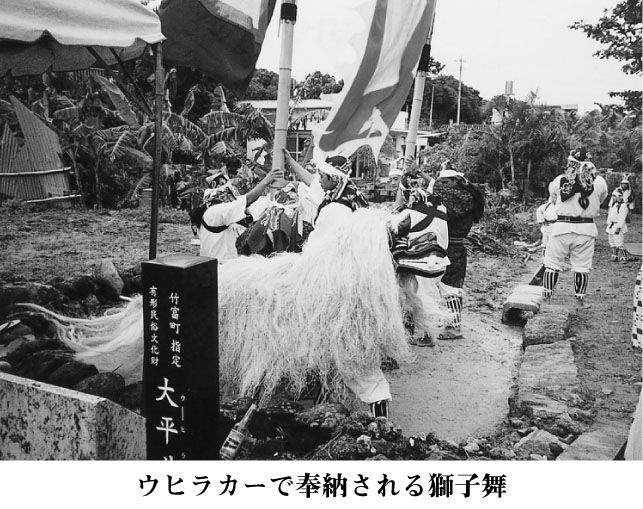
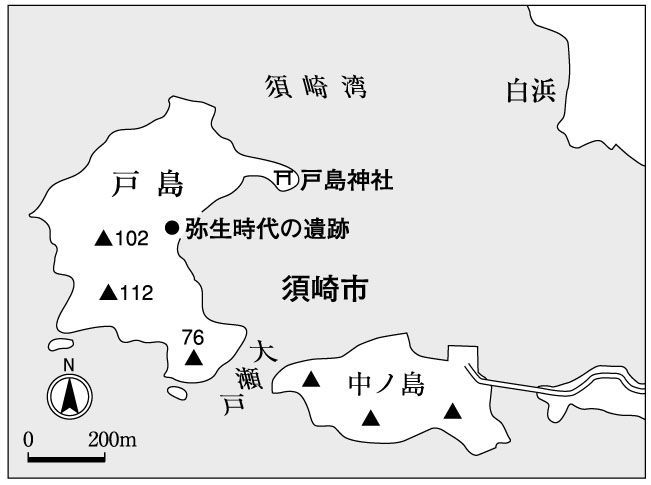
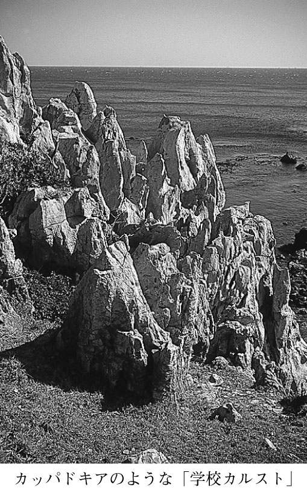
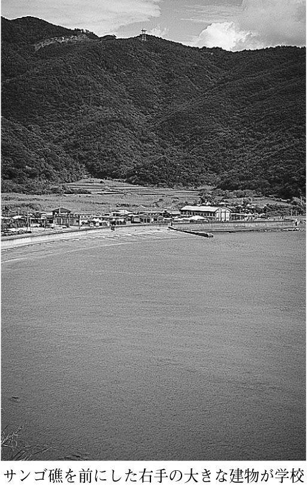
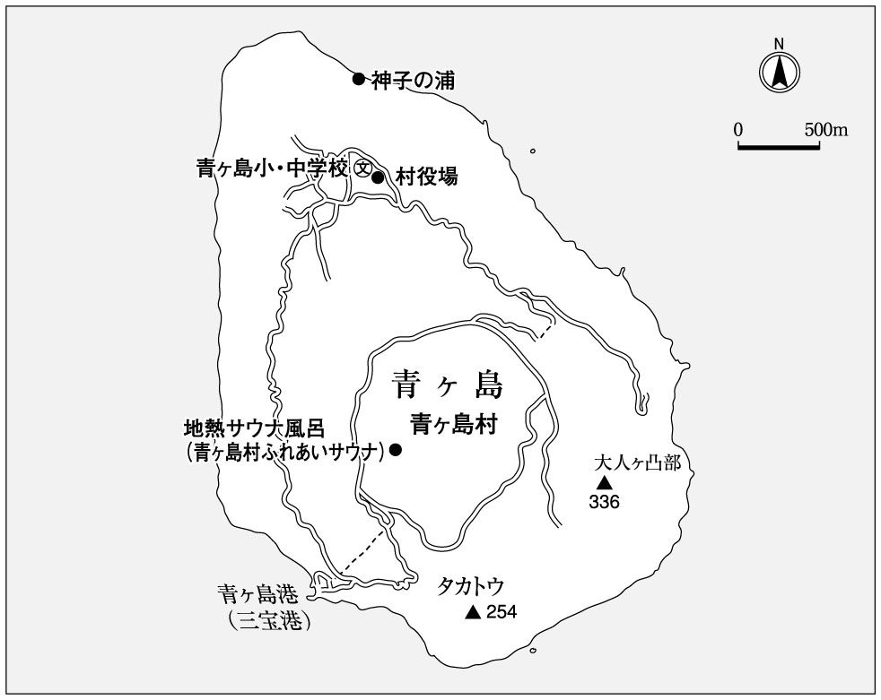
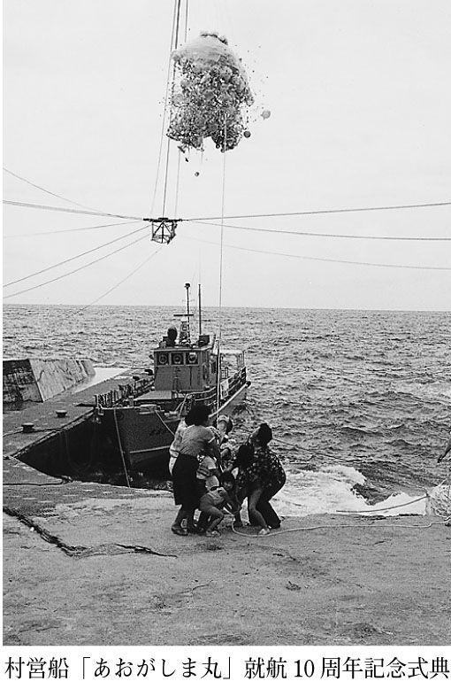
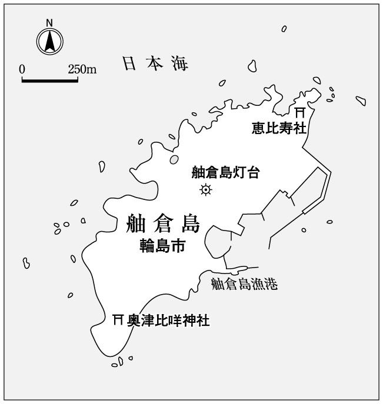
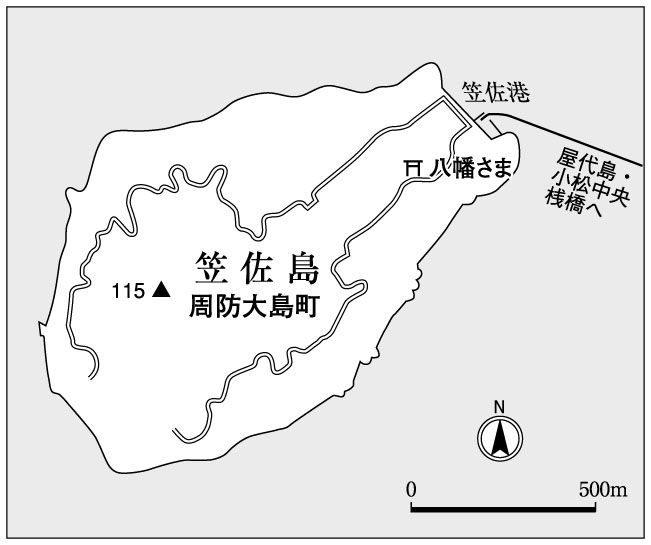

| 日本《島旅》紀行 | |
| 斎藤 潤 | |
| (2005) | |
屋久島の北西端永田集落で、嵐の晩にたまたま同宿したオーストリアの島好きな映画監督エドガー・ホーネットシュレイガーと、日本の島について話をしていた時のこと。
「さっきから君は、島が島がというけれど、日本は全部島じゃないか。君が住んでいる本州島も含めてみんな島だろう」
自分の常識を普遍的な常識と思い込んでいては、新しいものは何も生まれてこない。日頃から、そう自戒しているにもかかわらず、常識の呪縛力はかくも強い。
確かに彼の言う通りなのだ。大陸でない土地は島、というのが世界の常識。二一八万平方キロあるグリーンランドより小さな土地は、みんな島だ。大きな順に並べていくと二位以下は、ニューギニア島、ボルネオ島、マダガスカル島、バフィン島、スマトラ島ときて、二三万平方キロある我が本州島は堂々の世界ランキング第七位。ちなみに八位は、二二万平方キロのグレートブリテン島。北海道島は、アイルランド島に次いで一九位。九州島は二七位、四国島は三七位と健闘している。
面積の小さな国が多いヨーロッパと比べてみると、本州はイギリス、北海道はルーマニア、九州はスイスとほぼ同じ。四国に至っては、ルクセンブルクの四分の三ほど。ついでに、アジア諸国とも比較してみよう。本州はラオス、北海道はグルジア、九州はブータン、四国はクウェートと同面積。日本人はついつい日本を小国と呼ぶ傾向にあるが、これではとても小国に入れてもらえない。面積だけ見ると、韓国は北海道の一・三倍に満たない大きさだ。
しかし、本書ではエドガーの真っ当な指摘に逆らい、島国根性を丸出しにした狭い日本の常識に従って、四大島と沖縄本島および実効支配していない北方領土などを除いた土地を、島と呼ぶことにしたい。それも基本的には、人の住んでいる場所と住んでいた痕跡の残るところ。
日本の島の総数としては、日本統計年鑑で採用している六八五二島（海岸線が一〇〇メートル以上ある陸地）が最もよく引き合いに出される数字だが、定義によってはもっと増えもすれば減りもする。正義や常識と同じように、意外に曖昧というか、けっこういい加減なものなのだ。
ぼくにとっての日本の島の数は、人が住んでいる島四三〇ばかりと人の気配が残る島数十の、合わせて五〇〇といったところ。それらを島旅の対象としているといえばいいだろう。しかし、小島を歩いていると、またもや常識をゆすぶられる。
例えば、役場で人口六七と聞いた島を歩いていて、実際はせいぜいその半分がいいところではないかと思えることがある。島人をつかまえて確認すると、指折り数えて三二人くらいかな、という数字を出してくれる。役場の人口（住んでる人の数）は住民基本台帳に載っている数字を指すことが多いし、島人は日常ともに暮らしている人の数をいう。
○○人くらいという表現に、人間が住んでいるという状態の曖昧さがよく表われている。先日マチの病院に入院したバアさまはすぐに元気になり、来月は島へ戻ってくるから数えておこう。でも三ヶ月前に骨折して寝たきりになったジイさまは、退院してもマチの長男の家で引き取るから外さねば。でも、仕事をやめて島へ帰ってきた××の息子と離縁して出戻った△△の娘と、大学まで出たのに漁師になりたいといって移住してきた東京の若者は、どう数えたらいいのだろう。指折り数えながら、島人の頭の中ではそんな想いが渦巻いているのに違いない。
広島県・尾道の加島や長崎県・壱岐の妻ケ島のように夫婦二人だけで住んでいた島は、たった一組の夫婦が本土に引き上げただけで無人島になってしまった。無人島だと思い込んで渡った北海道・松前沖の渡島小島では老夫婦と愛想のいい犬に迎えられたし、無人島のはずの北海道・厚岸沖の大黒島でも老夫婦が昆布拾いをしながら暮らしていた。沖縄県・西表島周辺の無人島にも、何年も住み続ける定住者が入れ替わり立ち替わり出現する。
どこに住民登録しているかが、数値的には唯一明快な判断基準。しかし、人間を数値化できても人間が数値になることはない。自由気ままに動き回ったり、住み続けたりする。
ぼくは、島だけが好きで島ばかり巡っているわけではないが、気がついてみると島へ行っていることが多い。なぜ、島なのか。よく人にそう聞かれるし、自問もする。島の専門家を自称する人もいる。ぼくもそんなレッテルを度々貼られるし、あえて拒みはしない。しかし、ぼくは島が好きなだけなのだ。
島の特質は、分かりやすいこと。特に、小島が。少なくとも、島はその土地のことを分かった気分にさせてくれやすい。京都や東京のような魔都は別にしても、陸続きで拡散していく土地はなかなか把握しにくい。例えば、ぼくがよく訪ねる鹿児島県・トカラ列島の悪石島は、東京都中央区とほぼ同じ大きさだ。そして、二日もあればすべての道をゆっくりと歩き尽くし、島を知ったような（もっと言えば、踏破、制覇した）気分になれる。
そういう状況と一連で、いろいろ絡み合って社会を構成している要素（文化、宗教、政治経済、卑近な人間関係から食物や芸能まで）が、比較的見えやすく整理しやすいのが島という場ではないか。ものごとを大局的に見渡しながら、細部にまで目配りするのは容易なことではない。しかし、社会規模が狭く閉鎖された島では、細かなことにまで目が届きやすい。そして、ある分野のことを細かく見つめてゆくことによって、露になっていくことも多い。島はそんな場や機会を与えてくれる空間なのではないか。
島人の口からこぼれた、いろいろな言葉が思い浮かぶ。
「島の老人は元気だというけれど、元気な老人しか島に住めないんだよ」
「島おこしというけれど、現状に満足しているのに、なんでこの年になって島おこしなんかしなくてはいけんのじゃ」
「エコツアーのおかげで、最近はずいぶん自然破壊が進んだよ」
「えー、これ美味しいですか。お客さんに地元のものをだしては失礼かと思っていたのに」
「過疎化？ 別に淋しくないですよ。元に戻っただけだもの」
なによりも島が楽しいのは、思い込みを覆し新鮮な驚きと楽しみを与えてくれること。島という場に身を置くことによって、自分の頭の中で常識がゲシュタルト崩壊（愉快なほどバラバラと崩れ去る）してゆくさまは、己の正義だけを信じる心貧しきヒーローが跋扈するハリウッド映画と比べ物にならないくらい面白い。
目 次
鄙の酒屋とは思えぬほど充実した品揃えで、通好みの日本酒が犇めいている。そのうち、爽やかな水色の三合瓶が目に飛び込んできた。瑞泉、久米仙。宮古の多良川や石垣の於茂登まである。最北端の島の最北の酒屋に泡盛ですよ。それも、清く正しい三合瓶。すぐに泡盛購入を決定。ちょっと迷って瑞泉を選びながら、改めて棚を見回してびっくり。まだまだ、泡盛が並んでいる。「瑞泉おもろ17年古酒」、「60度花織酒」など偉そうなのがぞろぞろと。
いやいや恐れ入ったと、早速主人の中島光雄さんに訊いた。
「泡盛が豊富なのに驚いたんですけど、礼文でそんなに需要があるもんですか」
「置くようになったら、意外なほど売れますね。なんでですかね～。やはり旨いからかな」
話をしているうちに、中島商店を根城にした泡盛の同好会まであるという衝撃の事実が判明。これは、世界最北の泡盛同好会に違いない。月に三回ほど集まっているらしいが、
「今は昆布とウニの漁で忙しいけれど、九月が終わればじっくり飲めるから」
冬の気配が俄かに濃くなってきた一〇月下旬、荒波にもまれながら礼文島へ渡った。夕方六時過ぎ中島商店に顔を出すと、嬉しいことに用意万端整っていた。店の一隅にあるカウンターには、泡盛がずらり。さらに旨そうな肴も並んでいる。商品棚の泡盛コーナーに『日本最北端の泡盛同好会』の横断幕まで張ってあり、今日の会合は特に気合が入っているようだ。
「あと二人くる予定だけど、何時になるか分からないので、始めてましょう」
中島会長が軽やかに開会を宣言して、乾杯。三人とも、ミネラルウォーターで割っている。
しばらく談笑しながら、泡盛と地元の食材を駆使した肴を楽しんだ。ホッケの卵のキムチ風味、ホヤの塩辛、塩辛によく似たホッケやサンマの切込みなどなど、島ならではのものばかり。どれも泡盛に合う。特に好評だったのは、イクラの泡盛醤油漬け。ねっとりと旨く呑兵衛にはぴったりの肴だ。
舌が滑らかになってきたところで、会長の中島さんに泡盛との出会いを聞いた。
「小学校の先生が沖縄土産にくれた与那国の花酒を飲んだのがきっかけで、泡盛に嵌ってしまって。五年くらい前かな。最初花酒を六本入れて、売れてしまうのに二週間かからなかったですよ」
そこへ、現役漁師の黒川哲行さんが現れた。
「それまで、南の方の焼酎は癖があって臭いというイメージだったわけさ。ところが、ここで飲まされた泡盛の場合、臭みではなく味だもんな」
中島会長を差し置いて泡盛歴が一番古いのは、幼少の頃に徳利をもって泡盛を買いに行かされた経験がある、昭和四四年与那国生まれの鹿川義光さん。
「礼文島と与那国って、なんか風景が似ているような気がしませんか。周囲を断崖で囲まれているけれど、白いきれいな砂浜があるし、海も澄み切っている」
思いがけない指摘だったが、西海岸の美しい海や浜を見て、サンゴ礁でもないのに沖縄の海に似ているなと感じたことはあった。そういう感想を洩らす旅人も多い。
「七年前に礼文島へきた頃は、まだ最北端のスコトン小学校に二人子どもがいた。与那国の比川小と姉妹校だったので興味を持って、休日に遊びに行ったら、とても歓迎してくれたんですよ。嬉しかったなー」
事務職の佐藤恒平さんが、一番の蘊蓄派のようだった。
「七年くらい前かな札幌にいた頃、酒を飲まない知人から瑞泉の12年古酒をもらって、それ以来病みつきになったんです。今まで飲んだことのない酒だった。礼文島に転勤になった時、泡盛なんか絶対にないだろうなと寂しかったんですよ。ところが、中島商店に瑞泉があって......。買い占めそうになりましたよ」
宴も酣にさしかかった頃、船泊小学校で事務をしている江畠出さんがやってきた。
「ぼくも、ガリガリの日本酒派だったんですよ。でも、鹿川さんの家で与那国の舞富名を飲ませてもらってから、泡盛に嵌ってしまった。家に泡盛があると、ホッとする」
棚の最上段に、一本だけある「おもろ21年古酒」が気になって仕方がなかった。軽く一万円以上する古酒だ。それが、なぜここに。
「娘のめぐが高校の修学旅行で沖縄に行った時、お父さんへのお土産って。私の方が、たくさんお小遣いをあげたのに。土産屋さんで、おねえちゃん、本当に買うの買うのって、何回も聞かれたそうです」
奥さんの早苗さんが、少し悔しそうに笑う。大人でも気軽に買えない値段の泡盛を、最北の小島からきた女子高生が買おうとしたのだから、店員が焦ったのも当然だろう。
「日本酒だったら、ここまでもたんわ。もう潰れてるべな」と、黒川さん。
「うちのお父さんも、日本酒飲まなくなったもの。泡盛の方が、酔っても次の日が楽だって」
時計をみると、なんと午前二時を回っている。奥さんの早苗さんが、夜道を宿まで送ってくれた。波高が六メートルに達するという予報の正しさを証明するように、風は激しく吹き募り大粒の雨がフロントグラスで弾ける。雨粒はやがて白くなった。大きな霙が、窓にへばりつき流れる。
翌朝は、稀にみる嵐で船は全便欠航。暖房の利いた部屋から荒れ狂う海を眺めていたら、白い巨大な塊が襲いかかってきた。今年の初雪は、吹雪だった。泡盛が一段と美味しくなる、冬が到来したのだ。

読み方は、さぶさわじま。しかし、漢字が訴えるカンプウという鋭い響きが、地名の背後からピューピューと聞こえてくる。いったいどんな島なのか。凍てつく風が吹きすさんでいそうな島が、江戸時代からの名勝である箱庭のような松島湾に浮かんでいるというのも面白かった。
松島湾には苦い思い出というより、恨みがある。船に強くなった今は、瀬戸内海や琵琶湖よりも穏やかに思える松島湾だが、最初にひどい船酔いを経験させられたのはこの箱庭の遊覧船だった。小学五年生の夏のこと。海が荒れていなかったのに、重油と排気ガスやペンキの交じり合った船の臭いと、わずかな揺れに打ちのめされた。乗ってから降りるまで、袋を抱えてずっとうつむいたまま。地獄の海をどのくらい漂流していたのか、もちろん覚えていない。バスや車ですぐに酔う自分が、船にも弱いと自覚させられた情けない航海だった。
トラウマはさておき、初めて寒風沢島に上陸したのは、今は社会人となった上の娘が、まだ幼稚園の年長さんの頃だった。翌月から乗り物の子ども料金が必要になる三月、春休みを利用した三泊四日の父娘二人旅。それも南東北周遊券を使った、行き当たりばったりの旅だった。
一日目は新潟県魚沼地方の小国に、二日目は山形県の南部米坂線が通る小国に泊まった。いずれも豪雪地帯だったので、最後くらいは海辺の宿へと考えた結果、勢い余って海にまで乗り出し、以前から気になっていた寒風沢島まで来てしまった。今になってみると、幼稚園の子にとってはとんでもない旅だったに違いない。
島に着いたのは、午後三時頃。この季節なら予約なしでも空いているだろう、と高を括っていたらまさに予想通り。しかし、一軒目は他の客がいないからと断られた。二軒目では上框に腰かけて待つこと数分、幾ら呼んでも誰も出て来ない。昨日も同じようなことの繰り返しで、娘の不安は頂点に達していたことだろう。三軒目の民宿「外川屋」で、「食事は在り合わせのものでよければ」という条件で泊めてもらえることになった時、娘は泣き出しそうだった。
同年代の宿のお姉ちゃんたちと仲良くお風呂に入り、やっと寛いだ表情に戻った。いよいよ在り合わせの夕食とご対面。テーブルの真ん中には、松島湾特産の生ガキが溢れんばかりに入った深鉢が置かれ、隣ではカキ殻が山盛りになっている。生ガキを取り出した後の殻を、デモンストレーション用に置いたのか。他にも、悲しくなるほど透き通った白魚の刺身、毛蟹、カレイの煮つけ、カキや小魚のフライ、自家製の沢庵にアサリの味噌汁。これで、在り合わせ？ 目を疑った。予約しておいたって、これだけ並ばない。
席につくと、カキ殻の山から濃厚な匂いが漂ってくる。空の殻ではないらしい。舌が、おいしそうな予感にときめいた。
「おっ、これは？」
「こんなものすが、ねえがら」
「こんなもん、東京じゃ食べられないですよ。こういうのが嬉しいんだよな～」
鍋の底に焦げつかないよう水を張り、新鮮な生ガキを並べ蓋をして火にかける。貝の口が開いたら一丁上がり。茹でるというより蒸す感じ。
「カキの臭みが消えて、うまみだけ残ってますね。塩加減も最高だけど、どうしてるんですか」
「そのままだぁー」
「海から揚げたままっ、てぇこと？」
「んでがす。自然のままが一番うめえからなぁ」
「焼ガキなんてのも、あるんでしょうねぇ」
「もずろんだ。これが一番うめえ～。燠をつくって載せる。埋めるより、載せた方がいいな。口が開いたら、そのまま喰う。最高にうめがすと」
今度はちゃんと予約して、一番うめ～を食べに来なくては。しかし、蒸しガキでも大満足。ちょっと開いた口をこじあけ、貝柱も爪でこそげ舌でねぶりとる。二人分で三、四〇個はあった。娘はそれほど食べられない。大半がぼくの腹に消えた。
娘はカキよりも、お姉ちゃんたちと一緒にカレーライスを嬉しそうに食べている。親としては、宿の心遣いがありがたかった。
「その白魚は、さっき島の裏側で揚げて来たのっしゃ。カニもカレイも、松島湾で獲れたもんでがす。急だったから、冷凍ものだけっと。アサリも島のもん。うづでは、ここで獲ったもんだけ使っているのっしゃ」
「それが旅館と違う、本来の民宿の持ち味でしょう」
「んでがすと」
宿の主と気が合い、ぼくもすっかり調子づいていた。
「米もそなんだよ。味噌も作っているし」
奥さんも加わった。夫婦とも同じ考えとは心強い。
「味噌の大豆も？」
「んだぁ。今ではうづぐらいだけっとも、昔はどこでも自分で作っていたのっしゃ」
と、奥さん。主人が駄目を押した。
「寒風沢は独立すでも、困んねでねぇがぁ。米も供出できるぐれぇ採れるす。魚も、海苔も、野菜も、カキも、ウニも、アワビもいろいろ採れる。今は鶏ぐらいだけっと、昔はベコ（牛）や豚も飼っている家があったす。塩だって、その気になればすぐ作れるのっしゃ」
当然、おばあちゃんが漬ける沢庵も本物だった。今時のものに比べると塩分は多めだったが、保存食だから当然のこと。そもそも甘塩では、沢庵本来の旨味は出ない。もちろん、自家製の大根をよく干し上げ、糠と塩だけで漬けたという。漬物と味噌汁が本当に旨い宿はすべて美味しい、というのがぼくの持論だが、今日も間違っていなかった。
そのうち、民宿のあるべき姿とか、季節ごとの漁の話で盛り上がった。
話の間に、ぼくの脳裏を幾度も掠めたのが「寒風沢島独立論」。宿の主はたまたま口にしただけだろうが、なかなか刺激的だ。主食の米をはじめとして、副食の魚、豆、野菜、海藻、卵、肉、それに塩までが全て自給でき、水にも困らない島。それで十分じゃないか。石油を掘り当てさえすれば、鎖国すら可能かもしれない。そんな空想が現実味を帯びて感じられるのが、島という空間の魅力だろう。
それから四年後の夏休みに今度は家族四人で再訪し、下の娘は寒風沢島で四歳の誕生日を迎えた。それを知った宿の奥さんが、塩竈でケーキを買ってきてくれ、ちょっとつまらなそうにしていた娘は大喜び。うにょうにょと蠢く殻つきの生ウニを焼いて食べ、人気の少ない砂浜で海水浴をし、花火と蛍と満天の星をまとめて楽しんだ。下の娘は、朧げながらその時の記憶が残っているという。
二月に松島のカキ祭りを取材した時も、本土ではなく寒風沢島に宿をとり地魚と海藻に舌鼓を打った。そして、昨秋実りの季節。ついに稲穂に覆われた寒風沢島を歩く機会を得た。
自分の上の娘が独立したように、宿のお姉ちゃんたちも島を出たり、結婚したり。そんなあるべき変化を別にすれば、島はそう大きく変わっているようには思えなかった。
しかし、港から島唯一の公衆電話が消えていたのは衝撃だった。目に見えるものではなく、見えないものが変わろうとしているのではないか。機械的なソフトだけではなく、島の文化や人の心も含めて。
そんな心配を胸に、港の反対側に拓かれた小島とは思えぬ広々とした田園地帯を訪ねた。突然ここに立たされたら、島とは思わないだろう。海は海でも、稲穂の海。稲海で重たげな黄金の穂が、かすかに波打っていた。健全な田の風景にちょっと一安心。
畦道や海岸の松林の中、少しでも余裕がありそうな場所には稲架が組み立てられ、稲束がずっしりと下がっている。稲架の間をゆっくりと歩きながら、熟した稲が自然の風の中で乾いていく時に放つ、少し儚く甘く阿るような香りを深々と吸い込み、満ち満ちる秋の気に稲然、いや陶然とたたずむ。ここに立てただけで、幸せだった。
豊かさを実感できる機会は、人それぞれあるだろう。高額なものを身に纏い、贅沢なものを口にして、大仰な屋敷に住まう。それも豊かさかもしれない。しかし、野山のたわわな実りや田畑の豊作、鳥獣魚類の豊漁にまさる、心底からの充実感はないのではないか。高価な衣服や食べ物や住まいは、人生の飾りに過ぎない。そして、飾りだけでは本当の豊かさに辿りつけない。
宿に戻ってから主に聞くと、商売の農業ではないからあれだけの手間をかけられるという。食べて貰いたい、食べさせてあげたい、一人一人の顔を思い浮かべながら作る米や野菜。だから美味しくて安全。
勝手に故郷へ戻った気分で、松島湾と島の味を貪った。ばあちゃんの体調不良のため、沢庵は面影を失っていたが、あとは相変わらず。魚も野菜も米も、さりげなくひたひたと体に沁みて心地よい。
主も、民宿や食に関する確固たる持論を変えていなかった。
「それが、民宿本来の持ち味でしょう。旅館ではないんだから」
「んでがすと。旅館がよげれば、旅館さ行げばいいんだぁ」
なんだか、二〇年前にフラッシュバックしたような感じ。
現在は第一次産業が卓越しているように見える寒風沢島だが、実は歴史的にも多様な顔をもっていて興味深い。ほんの少しだけ触れておくと、伊達藩が江戸廻米の港として栄えていた同島で日本初の西洋式軍艦を建造したのは、安政四年（一八五七）のこと。日本人で最初に世界一周をする羽目に陥った津太夫も、寒風沢島の出身だった。ちなみに、民宿の屋号は千葉県銚子の外川村との深い縁に由来する。今は人口二〇〇ばかりの小島だが、昔から世界に開かれていたのだ。だから、独立論も荒唐無稽に聞こえないのかもしれない。
屋久島――意外な穴場・ヤクスギランドを楽しむ（鹿児島県上屋久町・屋久町）
日本百名山の最南端にして九州の最高峰宮之浦岳が鎮座する屋久島の象徴として、縄文杉はあまりにも有名になり過ぎた。だから価値がなくなったとはいわないし、対面すればその圧倒的な存在感に畏怖の念すら覚えるだろう。しかし、人ごみの中からその孤高の姿を仰ぎ見ることを覚悟しておかないとならない。「もののけ姫の森」として近年人気がうなぎのぼりの白谷雲水峡も、人の列ができている。有名観光地の宿命といえば、それまでだが......。
ところが、同じ山中に、意外な穴場がある。ヤクスギランドだ。
お～、ここはオバちゃんの原宿の異名をもつ、巣鴨地蔵通商店街か？
バスガイドの先導で四〇人ほどの団体が、ガヤガヤ話しながらぼくの脇を通り抜けていく。圧倒的に中年女性が多い。やっと喧噪が去ったと思ったら、新たな大型バスが停まるのが見えた。観光シーズン以外は、圧倒的に団体が多くて九割に達する。平均しても六割は団体とか。巻き込まれるなら一団体で十分。さっさと森へ向かおう。
コンクリートや板で作られた歩道はきちんと整備され、起伏や階段の多い点を除けば都会の商店街と変わらないが、幅は人がすれ違える程度の狭さ。ゆっくりと歩く人があふれ、なかなか先へ進めない。なにも屋久島の深山で人込みに揉まれたくはない。
「ちょっと、通してくださ～い」などと言いながら、団体の脇を擦り抜ける。「ここって、どこだっけ～」「なに見るの？」「縄文杉は、ど～こ～」などという、過激な会話も聞こえてくる。こんな有り様を見るにつけ、この人たちに感謝しなくてはならないと思う。彼らこそが、『ヤクスギランド』の魅力を守る隠れ蓑であり、バリアーなのだ。もう一つの隠れ蓑は、この名前。なんて安っぽい響きで、ペラペラな文字面だろう。
入口から一〇分足らずで、分岐点があった。三〇分コースを外れて一分も歩くと、あたりは嘘のような静寂に包まれ、涼気も増した。空気まで、澄んだように感じられる。
「この落差がさ、この解放感が、堪らないんだよ」
思い切り深呼吸をして独り言を呟き、屋久杉の森を独り占めした気分に浸る。
ヤクスギランドには、三〇・五〇・八〇・一五〇分と四つのモデルコースがある。団体は大半が三〇分コースを選び、個人は五〇分か八〇分コースを歩くケースが多いそうだ。今回は一五〇分コースの途中から、『天文の森』に向かうつもりだった。
一〇〇メートルも進むと、下の渓流に木の吊り橋がかかっていた。荒川橋。ここから先は、八〇・一五〇分コースになる。橋を渡ると小径は遊歩道から登山道へと急激に変貌し、木の根が浮き上がった踏み跡や滑りやすい急坂などが続くようになる。このルートには、しばらく名のあるブランド杉はない。ということは、自分の興味で自由に楽しめるわけだ。逆にそれができないと、ヤクスギランドの魅力は半減する。森と自分の親和力を試すのにちょうどよいコースかもしれない。
五分も登ったところで、道端の太い樹に目を奪われた。幹をすっぽりと覆っている苔が、金緑色に輝いている。大人数人が手を広げてつなぐと囲めそうな太さだから、この森なら珍しくない程度の大木。
しかし、見つめているうちに、大木が一つの森を宿していることに気づいた。
樹皮を覆う苔の森を縫うように、ツルが上下に走っている。目で上の方へ追っていくと、頭上三メートルばかりの所に葉を放射状に広げた木が着生していた。屋久島の山でよく目にする、『絞め殺しの木』という恐ろしげな異名を持つヤマグルマだ。ツルは、ヤマグルマの根だったのだ。
樹皮に広がる苔のベッドには、小さなキノコやシダ、赤い実をつけたツル植物、芽吹いたばかりの双葉、たどたどしい杉の幼樹まで載っている。小シダと苔の間に張られたクモの巣が、虹色をはらんでゆれ、苔に結んだ大粒の露は、太陽の光が適当な角度で射すと、鮮やかな赤を放って輝く。微妙に目の位置を巡らすだけで、一滴が鮮烈な黄、青、紫、黄緑、橙などに変化して、強烈な光を発した。こんなところで、天然プリズムの実験に立ち会うことになろうとは思わなかった。
苔の上に落ちる影と光のふるまいは、音のない音楽を奏でているようだった。陰影の中から聞こえてくるのは、琴の音だろうか。それとも、アコースティックギターか、ティンパニー？ 天空から小鳥のさえずりが絶え間なく降り注ぎ、谷間の底からは微かなせせらぎが立ち昇ってくる。
そろそろ先に進もう。高さ六、七メートルはある切株は、中がほとんど空洞になり背の高いプリン型をした桶のようだった。そんな薄板切株の上でも、発芽している木がある。樹は死して揺籃を残すわけだ。夥しい草木を身にまとい小さな森と化した老木や切株の巨大オブジェは、途切れなかった。
一二時半近くなって、蛇紋杉に到着した。何年か前の台風で根から倒れてしまったという屋久杉だ。先端や枝が折れるならともかく、一〇〇〇年以上立ち続けてきたつわものが、そんな簡単に引っ繰り返るなんてと思ったが、悲しいかな根は広がりも深さも少なく、巨体に比べて極めてお粗末だった。
その先は、原生林だと断言されれば、やはりそうなんだと納得しそうな充実した森だった。しかし、実際は五〇〇年近く昔の天文年間に伐られた後、自然に回復した森だという。伐採後、一斉に発芽して生き延びてきた杉たち。すらりとして立ち姿の美しい杉が多い。一方、太くごわごわとした老杉は、価値が低いと見なされ、当時伐られることを免れたに違いない。
低い尾根を越すと、白く輝く恐竜の肋骨が横たわっていた。よく観察すると、倒木の幹から規則的に突き出している枝らしい。あばら骨を避けて登ると、ついに『天文の森』という看板を発見した。ここが一応の目的地。しかし、なんの説明もない単なる地名表示板なのが物足りない。
往路に三時間かけたので、同じ道を半分の時間で戻らないとバスに乗り遅れてしまう。帰路は黙々と歩いたら、一時間足らずで荒川橋に着いた。橋を渡ろうとすると、対岸に二人連れがいた。その時になって、この吊り橋に戻ってくるまでの約四時間、誰一人として出会わなかったことに気づいた。
西表島 ―― 伝統文化が香り立つ祖納節祭の後先（沖縄県竹富町）
石垣島から海路西表島へ渡り祖納へ着くとすぐに、節祭のハイライト世乞いが行われる前泊海岸へ向かった。昔と変わらないゆったりした白い砂浜には、都会とまったく異質の時が流れている。
元郵便局の裏庭を訪ねると、大鍋が七つも八つも並び、ぐつぐつと煮えたぎっていた。ドラム缶の竈から橙色の炎がもれ、火の番は汗だく。節祭に関わる料理は公民館役員と有志によってほとんどここで手作りされる。
三日間にわたって作られるメニューが、室内に貼り出されていた。例えば、二日目の世乞い料理は、折りづめがなんと五〇〇個！ 赤飯、バラピ、巻きコブ、カマボコ（赤、白）、牛汁など。謎のバラピは、ヒカゲヘゴという木生のシダの幹や芽の芯のこと。音から推察すると、バラピ＝わらびだろう。まるで山芋の食感と味で、おいしい。明日の世乞い料理は、これから今晩徹夜で仕上げるという。
「この牛汁一杯を飲みたくて、手伝いにきたんです。世乞いが終わったら一七時の船に飛び乗り、明日のうちに東京まで帰ります」
という人もいれば、節祭のために東京から半月にわたって里帰りをしている人もいた。恐るべし節祭の求心力。里帰りの人で、この季節は村の人口が何倍にも膨れ上がる。
公民館では、二〇人くらいの女たちが薄切りの肉を昆布で巻いていた。老いも若きも同じテーブルにつき、談笑しながらせっせと手を動かす。中卒後三五歳までという女性会は四〇名ほどだが、半分は独身でヤマトからの移住者がかなりの割合を占めるという。古武士の風格を備えた祖納の村長と呼ぶべき公民館長の石垣金星さんは、こう言い切った。
「この村の行事に協力することが、移住受け入れの条件。あとは問わない」
金星さん自身が、今年は村の行事が忙しくて自分の仕事（農業や染織作家である奥さんの素材作り）ができていないと、少し誇らしげに嘆いた。
金星さんによると、節祭は少なくとも江戸時代の初期から続いていたらしい。ただし、大正の終わりころ士族と農民の軋轢により、十数年途絶えたことがあったが、幸いにも復活したという。
夜の七時四五分、大きな銅鑼の音が響いた。公民館の庭で、明日行われる世乞いの奉納芸能をすべておさらいするのだ。八時二〇分頃、青年達がヤフヌティ（櫂を使った武闘的な舞い）を始めた。空には黄色い立待月が浮かんでいる。観客が同時に演者（芸人と呼ぶ）でもあるからか、和気藹々とした一体感に包まれている。一般の村人や観光客も、集まってきた。
狂言の後は、棒術になった。元気がいいのは高校生。西表に高校はない。なのになぜ平日に高校生がいるのか。祭りに参加するため休ませて欲しいと、公民館長から校長に要請すれば、文化伝承活動として認められ出席扱いとなるのだ。確かに、高校の授業より、村の行事に参加する方が重要だろう。それでも今年は不参加の予定だったが、先週島に戻って練習しているうちに、どうしても参加したくなったのだという。
女性のアンガー巻踊りでは、歌声が嫋々と流れ、控えめな太鼓の音とともに、ヤエヤマオオコウモリがよぎる夜空に吸いこまれてゆく。女たちが作る円陣には、太古の時が封じ込められているようで、いつの時代のどこにいるのか分からなくなる。この儚い浮揚感が、なんともいえず愛しかった。
今日一〇月三日（年によって異なる）は、祖納にとって大晦日に相当し、節目となる日なのだ。だから、節祭。つくづく、世乞いの前日からきてよかったと思った。
翌一〇月四日は、元旦というべき大切な年明けの日なので、台風がきても世果報を招くための世乞いは必ず行う。何年か前は、台風の中で舟漕ぎ競争をして遭難しかけたという。朝四時、一番銅鑼が轟いて世乞い吉日を告示した。一一時過ぎ、公民館では世乞いにのぞむ儀式が行われた。一二時一五分頃、ミリクとアンガーの行列が、二番旗、三番旗を伴って海岸にあらわれた。サーンサンユーヤサアースリサァーサという優しい旋律の合いの手が、そっと潮騒と溶け合う。いかにも弥勒世果報を招きよせてくれそうな響きだ。
舟浮かべの儀式が終わると、ミリクやアンガー行列の人々は、すでに司たちが居並ぶ主賓席ともいうべき船元の御座に着座した。一時をまわると開会式が始まった。公民館長やそれに続く後守御嶽雨神司は、流暢な西表語で堂々と挨拶をする。祖納村の世果報だけではなく、広く世界平和まで願っていることだけは分かる。言葉の分からない者に配慮してか、最後に少しだけヤマト方言（日本語）も使ってくれた。
二時半を過ぎると、ミリク神の座トゥリムチを皮切りに、奉納芸能が次々に披露された。昨晩の総見とは、漲る緊張感が違う。明らかに神への捧げものだ。たまたま西表に滞在していて、節祭を見にきたらしいヤマトの青年が、誰にいうともなく叫んでいる。
「すげーよなっ！ 見てるうちによ～、熱くなってきたぜ～！ すげー！ すげぇーっ！ほんもんだよー、これ～」
彼の絶叫を聞いて、かつて自分がたまたま節祭に遭遇した時の感動を思い出していた。
あれから二十数年、西表も沖縄も世の中もすべて大きく変わった。しかし、節祭は不思議なくらい変わっていなかった。いや、変わった点も多い。文化財に指定され、新しい旗頭を復元し、男子の被りものが立派な紺地の紅型になった。村人の誇りが高まってゆくような変容といっていいだろう。それにしても、これだけ大規模で人手がかかる祭りを維持してゆくエネルギーは並大抵ではない。
棒術が終わった頃、潮が満ち始めた。徐々に海が膨らみ、浜が痩せてゆく。まさに月の満ち欠けと同じ。浜の表情の変化もおもしろい。考えてみると、同じ浜を眺めながら丸一日過ごすという機会は滅多にない。光の角度、量、強さが、風の向き、温度、早さ、香りが、空の色海の色山の色が、刻々と移ろう。そんなすてきな舞台で、時を忘れさせる芸能が演じられ続けた。
潮がかなり満ちた五時近く、舟を使った世乞いの用意が整った。最初に儀式舟クイでゆっくりとめぐり、続く世乞い舟クイでは二艘が激しく競いあった。舟が再び浜に安置されると舟子アンガー巻踊りがあり、最後に船元清めの儀式として獅子舞が奉納された。

三日目の午前中は強い雨が降った。金星さんは、ミリク世果報の雨だと喜んだ。三番旗につけられた小さな旗の「五風十雨（適度な雨風を得て、農作業が順調なこと）」の通りになったわけだ。
午後一時、公民館で銅鑼が高らかに打ち鳴らされると、正装をした関係者が続々と集まってきた。一行は、村で一番大切にされている井戸ウヒラカーまで練り歩き神饌を供えた後、雨で田のようにぬかるむ狭い広場で、泥を跳ねあげながら熱心に棒術や獅子舞を奉納した。
それからが、また凄かった。旗頭を先頭に、家々にカリー（嘉例）をつけてまわる。横倒しにした旗竿を、開け放たれた玄関から入れたり出したりするのだ。子孫繁栄を暗示する予祝行為だろう。まわりでは、女たちが世果報を招くガーリという大きな掛け声をかけて囃し立てながら乱舞する。その熱気に煽られて、こちらまで体が動きだす。
公民館役員や新築・誕生があった家と、公共施設を巡り歩いた。各所で関係者が待ち構えていて、にぎやかに接待をしてくれる。ここまで心をこめて世果報を招けば、いやでもその願いは神に通じないわけがない。
狭い村の暮らしには息苦しい人間関係もあるだろうが、こういう祭りに老いも若きも当事者として身を浸せる村人は、なんと幸せなのだろう。ひたすら楽しく、羨ましかった。
日本の島を歩く時に、どうしても座右に置きたいスーパーガイドブックがある。日本離島センター（03-3591-1151）が出している日本の島ガイド『シマダス』だ。ぼく自身も一般的な旅行情報誌作りに携わったことがあるけれど、『シマダス』が日本一充実した旅行案内書だと思っている。
最初目にすると、まずその厚さに圧倒される。A5判で1328ページもあるから、事典のイメージに近い。これだけのボリュームがあるのに、値段は3000円＋税と格安。そこに、細かい文字で記された情報、分かりやすい地図、写真が、びっしりこれでもかと欄外にまで詰め込まれている。掲載されている島の数は、有人島と無人島合わせて約1100。
載っている有人島の情報は、概要、所在地、面積、周囲、標高、世帯数、人口、年齢・産業構成、来島者数、行政、交通、問合わせ先、みどころなど基本的なことからはじまって、さらに27項目に分類された情報が付してある。例えば、みやげ、郷土料理、地酒、宿、日本や県などで一番のもの、方言、まつり、お医者さん、主な出身者、歴史上の人物から、Ｉターン情報、イベント、参考図書までと至れり尽くせり。無人島では概要が中心となる。読んでいるだけで島旅三昧できてしまいそう。
ただし、基本となるデータは島のある市町村が作成しているため、ちょっと物足りない点もある。宿や店などについて、『るるぶ』などの旅行情報誌ほど具体性がないこと。しかし、考えようによっては発見の余地が残されているわけだ。愛読者のぼくは、『シマダス』から洩れている情報を見つけるのが楽しみ。重く嵩張るので、バラして関連部分だけ持ち歩いている。
厚岸小島―― 昆布に始まり昆布に終わる（北海道厚岸町）
北海道へ通うようになってずいぶん長い間、人が住む島は日本海側の五つだけだと思っていた。ムツゴロウさんが、釧路と根室の中間くらいにある嶮暮帰島に動物王国を築いていたが、それは別として。
ところが、旅の途中で嶮暮帰島がある浜中町の西隣りの厚岸町に、北海道第六の有人島が存在するという話を耳にした。名前は、何の変哲もない「小島」。地図を広げてみると、厚岸湾の入口に大黒島が見つかったけれど、小島はない。さらに詳細な地図を調べたところ、北海道と大黒島の間に小さな点がポツンとあった。それが第六の有人島だった。その小ささと存在感の希薄さは、まるで冥王星のよう。面積は、〇・〇五平方キロで大黒島の二〇分の一以下。利尻島と比べると、なんと三六四三分の一しかないから致し方ない。
当然のように定期航路はないので、厚岸漁港から船をチャーターした。小船は、とろりと凪いだ海を速度を落としてのんびりと進む。未知の島を目指しているだけで心は躍るが、日和のよい海の上を滑っていくのは、見晴るかす世界がすべて自分のものになったようで格別だった。
昆布採りの小舟が、静かな海に点々と浮かんでいた。一艘に三人くらい乗り組み、下を向いて黙々と昆布を引き上げている。飴色を帯びた黒い昆布が、陽を浴びてきらきら。
「今日は、昆布漁に最高の天気だべさ。昨日までは風が強くって」
昆布は、海中を覗きながらマッカと呼ばれる先が二股になった棒を絡めて、根元から捻り採る。無造作にやっているようで、熟練した技と腕力を必要とする漁らしい。それでもエンジン音を聞いて顔を上げ、船頭を見て手をふる漁師もいる。集中しているが、余裕がないわけではない。
「あんたでは、昆布を採ることも、採った昆布を引き上げることも出来ねべな」
多分、おっしゃる通り。下手したら、ぼくなんか生きのいい昆布に海へ引きずり込まれかねません。船頭が話し好きだったおかげで、二〇分足らずの航海中に小島の概要をつかむことができた。
現在は八戸が家を構えているが、島に人がいるのは平年五月から一〇月いっぱいくらい。冬は厚岸の家で過ごす。収量、値段ともよければ、九月に引き上げることもある。この時期（九月下旬）になると、コケ（昆布の汚れ）がついたものが増え、一日あたりの収量も減ってくる。また、昆布の芽がオガリ（生長）はじめるので、旗が立っている場所より岸に近いところで採取はできないなどなど。
やがて大きな島が見えてきた。大黒島だ。左手に、小さなボタンを置いたような平らな島影。小島だった。改めて小さいと思う。近づくと学生帽のシルエットになった。小高い丘の際に家が立ち並び、前には砂利の平地（干場）が帽子の鍔のように広がっていた。
いくら上質の昆布でも、うまく干し上げないと元も子もなくなる。天気がよく乾燥した日、一気に干し上げることが肝要だ。それには海の近くにある広大な干場が欠かせない。それも、砂ではなく砂利の浜がいい。その点、小島は干場に小さな丘を載せたようなもの。狭いながらも理想的な地形で、昆布干しのために生まれてきたような島だった。
小船は浜に乗り上げ、ぼくは舳先から飛び降りた。浜にも昆布が打ち上げられ、お婆さんが手鉤のような道具で手繰り寄せ拾い集めている。大切に手入れされているに違いない干場は、土足で踏み込むのがためらわれるほど綺麗だった。
男が採ってきた昆布を女が浜で受け取り、キャタピラのついたおもちゃの戦車のような箱車に積んで干場まで運び干す。一枚、一〇枚、一〇〇枚の昆布なら、さほど大変ではないだろう。しかし、恐らく三ヘクタールはある干場を埋め尽くすほどの量となると、想像を絶する。
車からまとめて下ろした昆布を、さらに一抱えずつ分けて置き、それを一枚ずつ広げる。艶やかな飴色だった昆布は、みるみる乾燥して黒味を増してゆく。色が生きているように変化する。今日は、いい昆布ができるぞ。
昆布漁日和は、採るにも干すにも良い日だけ。いくら海が凪いでいても、曇りではいけない。雨は論外だ。快晴でも、海が荒れていれば駄目。今年中に、今日のような日はもうないかもしれない。だから、男も女も力が入っている。
とても話し掛けられる雰囲気ではない。もしかしたら、ぼくは目障りなだけか。勝手にいじけて、津波に備えた高台への避難階段を登った。明るいグレーの干場が、少しずつ黒い昆布で占められてゆく。一枚の昆布が、一筆のよう。どんな模様が現れるのか。人様が懸命に働いてキャンバスを埋めるようすを天上から眺めているのは、巨大地上絵プロジェクトの無責任極まりない監督になったようで、いい気分だった。
櫃島 ―― ふわふわと漂う微酔と雑談の時（山口県萩市）
たたずまいのよい観光地として知られた城下町萩に、毛色の違った四つの島があることをご存知だろうか。市内から約四〇キロ沖にあり、高速船で一時間一〇分かかる見島が一番大きい。若い漁業後継者の多い大島や、美味しいスイカで知られた相島にも定期船が通っている。
しかし、大島の沖に浮かぶ櫃島は、人が住んでいるにもかかわらず定期航路がない。本土まで自家用船で二、三分という瀬戸内海の島ならまだしも、冬には牙を剥く日本海の島。日本海側で定期航路のない有人島は、唯一櫃島だけだろう。そんな厳しい条件の許で、果たして島人はどんな暮らしをしているのか。以前から、気にかかっていた。
隣りの大島に泊まった時、思い切って宿の女将に相談した。櫃島まで、幾らくらいで渡してもらえるものなのか？ 陸上を行くタクシーなどに比べると、チャーター船はかなりの割高感がある。一人で傭船する場合は、余計にそう感じてしまう。
「一度ぜひ櫃島に渡りたいんですけど、一万円は辛い。一時間ぐらいの滞在でいいので、そんな感じで当たってもらえませんか」
自分で口にしながら、奥歯に物が挟まっている言い方だと思う。要するにできるだけ安く渡して欲しいな～、ということ。幸い女将は心優しい人で、明言を避けるぼくを追及せずに、
「そーですか。値段は分からんけど、心当たりに聞いてみましょう」
あっさりと、引き受けてくれた。そして夕食も終わる頃、明朝八時前に目の前の港から出発する、と告げられた。ありがたや、値段も心積もりの範囲内だった。
大島から櫃島まで、思ったより大きな漁船（ボートに毛が生えたものを予想していた）で一五分ほどだった。何分かかるんですかと訊いた時、
「行ったことがないから分からないけれど、大丈夫」
と、船長が頼りなげに保証してくれた通りの結果。櫃島港は、無機質な感じで人の気配が薄かった。一応防波堤はあるものの、小さな船溜まりといった方が似つかわしい。
潮が思ったより満ちていたようで、舳先から波止へ飛び降りたらかなり落差があり、尻餅をついてしまった。尻で第一歩とは、謎の島にふさわしい。コケながら一人で笑ってしまう。
港周辺は、赤い岩肌が剥き出しになっていた。恐らく火山に由来するものだろう。急な坂を登ってゆくと、等高線をたどるような平坦な道になった。それにしても、人の気が淡い。きょろきょろしながら一〇分も歩いただろうか。ドラム缶の山が現れ、独特の形をした背の高い木造建築がみえた。大島でも幾つかみかけた煙草の乾燥小屋らしい。折りよく、脇道から杖をついた小母さんが姿を見せた。
見知らぬぼくをみつけて、戸惑ったようす。足がない島に、見知らぬ男が突然出現したのだから当然だろう。島人にすれば、我が家の庭に赤の他人がズカズカと踏み込んできたようなもの。
できるだけ愛想よくふるまわなくては。
「こんにちはー、お邪魔してまーす」
小母さんは案外肝が据わっているらしく、すぐに安心の表情になった。それとも、ぼくがいい人に見えたのか、軟弱に思えたのか。
「人影がほとんどないようですが、何人くらい住んでいるんですか」
「一〇戸くらいあるかね。昔は、二四戸あったというけれど」
「ずいぶん多かったんですね」
「ハハハハハッ、私の生まれる前の話だけど」
実際島で寝起きしている人は、たぶん七人とのこと。予想通り、萩との往来は自家用船でやりくりしていた。医療に関しては、市立病院の巡回診療が月に一回あるが、基本的には四～一一月、海の荒れる冬は来ないという。
「冬に萩に出ると、一週間戻れないこともよくあるんですよ」
そんなことを当たり前のように言われると、困惑する。都会生活者の愚かなところで、つい訊かずもがなのことを口にしてしまう。
「でも、定期船がないと不便でしょう」
「それは定期船が着いてくれればありがたいが、港が小さくて浅いから無理でしょう。島の周りは急に深くなっているから、防波堤を沖に延ばすのも難しいんです」
そこまで分かってらっしゃるんだったら、返す言葉もない。
「買うのは、米、醤油、酒。魚も買うかね。野菜は、自給してます」
村内を散策していると、船長がぼくのようすを見に村までやってきた。来るのは初めてだけれど、遠縁の家があるから寄ってみようという。矍鑠とした初老の男性が顔を出した。山根秀夫さんだった。
「こんな時に、お茶もなんじゃから」
気がつくと缶ビールが開けられていた。縁側で日向ぼっこをしながら飲んだ。午前中のビールがすかさず全身に染みわたる。もう二度と訪れないであろう定期航路もない小島で、さっき知り合ったばかりの島人と酒を酌み交わしているのは、不思議で幸せな気分だった。
孤島の時の流れは静かだがゆとりがあった。酔いと混じりあった雑談が、ふわふわと漂ってゆく。それでも終わりの時はくるもので港に戻ろうとしたところ、耕運機で送ってくれた。海へ下る道が整備されて、まだ二〇年にもならないという。大蛇のようにうねった道で、ゴトゴトゆられるのは童心に返ったように楽しかった。
「昭和四〇年代に大きな台風がきた時、波止場がでんぐり返ったことがあるんじゃ。石積みのままだと、打ってくる波が抜ける。じゃが、コンクリートは跳ね返ってくるんじゃ。昔の波止の方がよかった。大きな波がくると、今も波止場を越すんじゃ。波は外から打ち込むので、テトラを外に入れてくれるといいんじゃが」
山根さんは、あまり期待していないような表情でそう呟いた
戸島 ――土佐湾の小島の意外な賑わい（高知県須崎市）
頭の中で日本地図を広げ、四国に焦点を合わせて欲しい。そして、土佐湾沿岸をズームアップする。きっと足摺岬から桂浜を経て室戸岬まで、砂浜が続く房総の九十九里浜を想わせる弓状のなだらかな海岸線が浮かぶはずだ。しかし、脳裏に描き出された海辺を実際に歩いてみると、意外なほど変化に富んでいる。
あの大きく口を開けた湾内には、人が住む島まであるのだ。煮込みラーメンですっかり有名になった須崎から、橋を渡りバスで行ける中ノ島と、その先にある戸島。中ノ島の港から望む戸島は、入江を挟んで陸続きになっていると思うほど近い。しかし、実際は二〇〇メートル足らずの大瀬戸によって隔てられているから、近いけれど船でしか渡れない。
ぼくは、養殖漁業を営んでいる中谷博行さんにお願いして、島から迎えにきてもらった。漁業関係の役職を幾つもこなしているという中谷さんは、孫も含めた六人家族。島では四戸一八人が暮らし、一人ずついる高校生と小学生はスクールボートで通学しているという。
「昔は三一人いたこともあったが、最近五人家族が対岸の大谷に引っ越して、一八人になってしまった。残っているのは老人ばかりじゃき」
家々は、入江に面して拓けた狭い平地に窮屈そうに建っていた。小さな集落にしては立派な防波堤だったが、コンクリートの継ぎ目に根を下ろした何本もの樹が、腕ほどの太さに育っている。苔に半ば埋もれた魚網やロープも多い。防波堤は着実に自然へ戻ろうとしていた。
東北端の砂州の上に造営された戸島神社の周りで、なぜかワシントン椰子が繁り異国情緒を醸している。と、その前で小さな不審船を発見。こんな僻遠の島を訪れているよそ者はぼくだけだと思い込んでいたため怪しんだのだが、自家用船で潮干狩りにきた家族連れだった。
バケツの中を覗くと、アサリがいっぱい。稚貝かと見紛うほど小さい。子どもたちの楽しそうな顔を見ると口にできなかったが、他島まで乗り付けてこんな細かな貝まで収奪していくのか。うららの春の光まで、悲しい。もちろん入漁料もなにもない。自由に獲ってよいという。
驚いたことに、来島者はまだまだいた。入江の南へ下って行くと、干上がった遠浅の浜辺に次々と人影が現れた。大半は潮干狩りの人たち。アサリの他に、ツメタガイを獲っている人もいる。潮干狩りに適した大潮の前後は、須崎から乗合いのチャーター船が出るのだという。
潮干狩りだけではなかった。明らかに着眼点が違う一群がいると思ったら、自然観察会が開かれていたのだ。専門的な会話を聞くともなしに聞いていると、関東からの参加者もいる。ぼくだけ独りはるばる辿り着いたと思っていたのは、とんでもない誤解だった。
彼らからすれば、漫然と散策しているぼくのような人間こそ、信じがたい存在だろう。首都圏組の一部は、さらに外洋に浮かぶ無人島神島へ向かったらしい。話し掛けてみたかったが、貝類やソフトコーラルの話題で盛り上がる愛好家集団に、割り込む余地はなかった。
浜を一巡りして波止場でぼんやりしていると、小船がやってきて制服の青年が降りた。一日一回小船を操って訪れるという郵便局員だった。
狭い小島をせっせと歩き回る姿に、中国映画の『山の郵便配達』の情景が重なり、郵便配達夫という職名を思い出す。郵政民営化が進行すると、こんな島はどういう扱いを受けるのだろう。行く末を想像すると、のどかな春の陽が微かに翳った。

オーハ島――忘れられた礁上の庭園（沖縄県久米島町）
膝の上まで濡らしてオーハ島の浜に辿り着いた時、ちょっとどぎまぎした。
あの猛々しく分厚いアダンの葉が、強い陽射しの下で半ば透明な緑の光となって、さわさわときらめいている。アダンの繁みの中へ、野生の芝生に縁取られ柔らかな曲線を描く一本の白い踏み跡が、遠慮深げに侵入していた。道路ではない。歩くことによってできた歩くためだけの道。
ああ、沖縄でもまだこんな光景に出会えるんだ。かつて島中の道がすべて踏み跡だった鳩間島の光る風が、頭の中を一瞬のうちに吹き抜けた。
よその庭に勝手に踏み込もうとしてるんだ。久々に感じる嬉しいためらい。すたすたと歩み入るのが惜しくて佇んだまま、晴れ渡り過ぎて色を失いそうな空を仰ぐ。足元の浜に目を落とすと、涙型したキラジャーが敷き詰められたように落ちていた。確かに人が住んでいる。外見は地味だが、殻の内に豊かな珊瑚色を宿し、なによりおいしい貝。
久米島の東端と橋で繋がる奥武島だが、さらに東にひっそりとたたずむオーハ島までは橋もとうとう架からなかった。漢字で書けば奥武端島、東奥武島ともいう。定期航路がないので、島人は自家用船や隣人の船で久米島と往来している。
陸に相手にされなかったオーハ島が海へ触手をのばしたように、東にはサンゴの白砂でできた平らな島がいくつも連なっている。その中でも有名なのが、異界への入口ではないかと見まごう真っ白い砂と青い空だけで構成されている、はての浜。人気の高いビーチで、久米島から多数の遊覧船がでている。
しかし、オーハ島には誰も見向きもしない。というより初めから目に入ってこないのだろう。よそ者が島へ渡るには、船を雇わなくてはならない。あるいは、潮時を見計らって歩いて行くか。地形図を見ると、どうにか歩いて行けそうだった。地元のダイバーは干潮時なら歩いて行けるはず、と自信なげに言う。海面から上には興味がないらしい。
白い小径に歩み入って一分もしないうちに、家が現れた。板とトタンで作られた質素な家。でも、粗末ではない。小綺麗で、屋根も壁も水色に塗られている。南洋の島に迷い込んだよう。隣りにもう二軒。広い庭。コンクリート瓦だが、沖縄の伝統的な木造家屋だ。薪を焚く匂いが、どこからともなく漂ってくる。気配は濃厚なのに、人の姿は見えない。
初めは妙な疚しさがつきまといおどおど歩いていたが、やがて島そのものの親密な空気に体が馴染み始めた。踏み跡の交叉点とも、小さな広場ともつかぬ所にでた。生け垣の面影を残す、アカバナーの一群。ひょくひょくと生えている、パパイヤ。あわあわとしたモクマオの梢が、頼りなげに島の空気を掻きまぜる。芝の空き地はやがて細まり、小径に戻る。
閉ざされて間もない、巨大な海上の庭園。ぼくはそこに迷い込んだ旅人。廃墟を覆う、あの悲しいばかりに澄んだ空気が満ちている。
何軒かの廃屋があった。単なる無住の家といった方がいいもの。朽ち果てる寸前のもの。風が一瞬落ちると、草いきれで噎せ返りそう。ふと、オーハにハブがいることを思い出す。
道路もないのに、打ち捨てられた自動車があった。その前に一軒の家。広い庭一面に芝生が張られている。海に出る準備をしているらしいオジィがいた。挨拶をしながらとことこ庭に入り込むと、オバァも顔を出した。さして驚いた様子もないのが嬉しい。
「立派な芝生ですね。天然ですか」
「五八号線から取ってきたさあ」
沖縄本島を南北に貫く国道五八号線の際に植えられていた芝を一つかみ失敬してきて、ここまで増やしたという。
「数年前、図面持った連中がうろうろしていたことがあったさ。どこかのリゾートホテルが、この島狙っていてよ。人口？ 今、島に住んでいるのは八名かねぇ。全員六五歳以上の老人ばかりよ」
「ちょっと歩いただけですけど、全体が庭みたいな島ですね。空き家が幾つかありましたけど、何日か借りることって出来るんでしょうか」
「いい島さ。上等よ。ここは森が深いから、台風でどんなに風が吹いても平気さ。寝袋ひとつ持ってくれば、なんとかなるから。島にきてから、泊まりたいって言えばいいさぁ」
「ハブ、いるんでしょ」
「前はいたけどよ。今はもういないさ。何年か前に、そこの畑で大きいのを捕ってから、出てこないよ。あれでおしまいさぁ」
オジィは、こんなして捕まえてよと、身振り手振り。長さは両手を広げたくらいあったらしい。海に行く支度ができたオジィと、森の中の小径を歩く。アダンの薮のそこかしこに、土に返る寸前の家々の柱、壁。根が絡んだ珊瑚石。赤瓦の破片。敗戦直後はこのちっぽけな島に、三〇戸を数えたという。
「アダンは繁殖力がものすごいからよ」
オジィは、海の方に降りて行く。森の中に真っ白な光の楔をつくって伸びる踏み跡。オジィの黒い影は、やがて溢れる光の中に消えた。
僕は別の小径へ入った。何か茹でるいい匂い。オバァが建物のはずれでしゃがみ込んでいる。会釈すると、ニイさんどこからねと声をかけられた。手元のカネの洗面器は茹でたてのキラジャーでいっぱい。
薄茶色の貝殻に、鮮やかな珊瑚色の裂け目。くりっとしたキラジャーの目が覗く。楊枝でくるくると紅を帯びた身を取り出していく。あたりに濃密な潮の匂いが漂う。
「今、採ってきたばかりさぁ」
「マガキガイですよね、それ。クモガイもあるんだ。結構採れるもんなんですね」
「最近は減ったさあ。沖に出ないと採れないよ。ニイさん食べてみるね」
楊枝でくるんと身を引き出す。にゅるっとした感じ。これが、新鮮な証拠。マチグヮー（市場）のものには、ぬめりは残っていない。ほどよい潮味。口の中に海が満ちる。ものを食べているという違和感がないおいしさ。そのまま体の血や肉になってしまいそう。
隣りの水色の家にも人影が。オバァが垣根の隙間をすすっとやって来て、そろそろ帰ろうとしていたぼくに、うちにも寄ったらいいさと声をかけてくれた。
さっきは気づかなかったが、手入れが行き届いた庭。特に、三メートルはあろうかというモンパノキは見事だ。松を想わせる太くよじれた幹。やや翠がかった上品な青磁色の葉は、たっぷりと陽を浴びてサンゴ礁の浅瀬の海の色。根元に魔除けや火伏せの効果がある大きなスイジガイが、二つころがっていた。
「ちょっと温くなっているけれど、お茶飲みましょうね。今は一人暮らしよ。息子や娘は、東京や那覇や久米島に行ってしまって。仕事が出来るうちは島にいたいさあ。那覇とか行ってもまわりに知ってる人がいなくて寂しいよ。何もすることないさ。この黒糖食べなさいね。遠慮いらんさあ。わーは大阪出身でね、終戦は南洋のパラオだったさ。死んだ主人についてこの島に引き揚げてきてよ、八五歳になるさ。島に八〇歳以上が四名おるさ」
立て板に水ではないが、ぽつぽつと続く話は途切れない。
「あまり長居しても何ですから、そろそろ」
「よかったらご飯もあるよ。食べて行きなさい。もう昼だから。お茶を代えましょうね」
潮の時間が気に掛かるが、なかなか立ち上がれない。
「舟のある人はいいよお。この年じゃ、ニイさんみたいに歩いて渡れんし、舟を頼むと年寄りには高いさあ。それでも今はいいよ。冬になると奥武島との間を北風が通り抜けて、なかなか舟が出せなくなるさ。病気になった時が不安で、橋かけて下さいって頼んでいるけどよ。ずうっと昔から。昭和の初めの頃から、頼んでいるさあ。もう何年になるかね～。奥武島も橋がかかるまで三軒しか家がなかったのによ。今は一〇軒以上に増えたさ。だからよ。潮が気になるって。それじゃよ、これ持って行きなさいね。美味しい東鳩クッキーよ。遠慮したらいけないさあ。あい、黒糖も」
自家用車やレンタカーで港まで乗りつけようという人には、ロードマップやカーナビがあれば事足りてしまう。また、タクシーを愛用していれば特に問題はない（はずだけれど）。しかし、ぼくのようにもっぱら公共交通を頼っている者は、島への入口である港に辿り着くため難儀することがある。
もちろん、『シマダス』には「港への交通データ」も載っているが、これがなかなか曲者。データは刻々と変わってゆく。
例えば、香川の伊吹島を訪れた時、JRの駅で港へ行くバスの乗り場を見つけられなかった。確認すると、先週路線が廃止になったばかりという。時間に余裕があり天気もよかったので、町並みを眺めながら30分かけのんびりと歩いたが。
幾つかの島を巡り歩く時も、港が立ちはだかることがある。山口の隣り合う佐合島と馬島を訪ねた時のこと。船なら指呼の間だが、両島を結ぶ航路はないから、一度本土に戻り少ないバスを待ち、どこかで乗り換え別の港へということになる。変則的なので、バス同士の接続などありはしない。結局、できるだけ島での滞在時間をとるためタクシーを手配し両港を繋いだ。
バス停から港まで時間がかかる場合も、要注意。港までの道が分からない。そういう場所は、バスの運転手も首を捻ることが多いし、地元の人に聞こうにも人影がない。逆に鹿児島や那覇のような大きな港も、用心したほうがいい。埠頭や桟橋がいくつもあって、自分が渡りたい島への乗船場所をきちんと確認しないと、関係ない場所で待てど暮らせどなんてこともある。
厄介な面ばかり紹介した港捜しだが、これも謎解きの一つと思えば、逆に楽しみになってくるから不思議なものだ。
礼文島を訪ねたついでに久々天売まで足を延ばしたのは、七月半ばだった。北海道に梅雨はないというが、この時期の道北や道東はぼでーっとした霧に閉じ込められ寒いことが多く、鬱陶しさは変わらない。案の定重たい雲が垂れ込め、外にいるだけで体に結露しそうだった。
宿のまわりを散歩したが、薄ら寒いばかり。かわいらしい木造平屋青いトタン屋根の天売高校に心が惹かれて覗いたが、定時制なので生徒はまだおらず静まり返っていた。全学年合わせて、八名。昼は、漁師や家業の手伝いなどをしているという。
早々宿へ戻ると、女将に聞かれた。
「今晩、ウトウのツアーに参加しませんか」
「いや、いいです」
ぼくの頭の中には、天売島の海鳥→オロロン鳥→絶滅寸前、という回路ができていたから、→行っても無駄、と即反応したのだ。
しかし、部屋にいるうち、オロロン鳥ではなくウトウだったことが気になりだした。
「さっきのウトウですけど、行けば大体見られるものですか」
「大丈夫ですよ、絶対」「絶対？」「！」
早めに夕食を終えた七時過ぎ、迎えの大型バスがやってきた。大半が年配の客で、驚いたことに満席に近かった。観光客が、どこにこんなに潜んでいたのか。バスガイドの解説を聞きながら、島南西端の赤岩展望台へ向かう。
ウトウは一夫一婦制の鳥で、天売には春先から八月上旬くらいまで滞在し、一羽の子を育てる。寿命は、三〇年くらい。餌を獲るため夜明け前に飛び立ち、餌を盗ろうとするカモメを避けて日没後に戻ってくる。主な餌は、カタクチイワシ、イカナゴ、ニシンなど。八〇キロ離れた利尻周辺まで出かける場合もある。俄かに信じがたいが、水深一〇〇メートルまで潜るものもいるという。なぜ、そこまでしないといけないのか。
しばらく海沿いの平らな道が続いたが、家が見えなくなるとひたすら登り道になり、途中から霧がかかり出した。標高一二八メートルの展望台は、雲の中のよう。周辺の地面は赤茶けた地肌が剥き出しになり、草もろくに生えておらず穴だらけ。まるで縄文遺跡の発掘現場だ。とすると、穴の中には人骨が納められた甕棺があるはずだが、それにしては小さい。
見渡す限りのボコボコは、すべてウトウの巣だった。夫婦で協力して地面に穴を掘り、そこに卵を産んで子育てする。一面イタドリに覆われた斜面も、根元を覗くと穴ぼこだらけ。数十万羽のウトウが営巣しているという。
変幻する霧の中にたたずんでいると、バザバザッという大きな羽音。黄昏の青い闇に黒い鳥の影が突如湧き、びゅっびゅっと殴りつけるように降ってくる。横から突っ込んでくる影もある。一瞬途切れ、雨霰と降ってくることもあった。スマートではないが、ツバメのように速い。大きさはハトほどだ。
ほとんどが、子どものために獲った美味しそうなカタクチイワシを銜えていた。覚束ない足取りで地面を歩きながら、自分の巣を探している。これだけたくさん穴があるのに、どうやって見分けるのだろう。
無事獲物を巣に運び込めれば、一日働いた甲斐があったというもの。しかし、横取りしようとするカモメに襲われる不運な奴もいた。なんとか逃げ切ることも多いが、敢えなく強奪されるウトウもいる。一方が手ぶらだったか、カモメに餌を盗られたのか。ウトウ同士で餌を奪い合う光景も目にした。皆が生きるために必死だった。
果てしない霧と薄闇の中に立ち尽くし、どこからともなく礫のように降ってくるウトウの羽音に耳を傾け影を追ううち、胸にいいようのない切なさが満ちてきた。
蓋井島 ―― 神々のおわしたもう森（山口県下関市）
ちょっと森の翳りが濃いかな、というのが蓋井島の第一印象だった。港では数人の幼女たちが駆け廻り歓声をあげて遊んでいる。人口一五〇ばかりの小島にしては、珍しい光景だ。ここでは、子どもをよく見かけた。漁業後継者の青年たちの許に本土から次々と嫁さんがきて、結婚・ベビーラッシュが起きていると聞いていたが、その実りらしい。本土との活発な交流会を開き、月二回の漁止め日（定休日）を設けるなどして生活環境を整えた成果だ。
港近くの案内板に次のようにあった。
「国指定重要文化財（有形民俗）蓋井島『山の神』の森 昭和三十五年指定 我国では古くから、神霊は天から高い山や大木に降りて来るという信仰があり、一部の森を『山』とする例や、祭事の時だけの土盛を『山』とする場合もあります。蓋井島では自然の森を『山』と称しています。島の家々は、祖霊の森と伝えられる『一の山』から『四の山』のいずれかの森『山』との結び付きによって、七年目ごとに祭りを執り行います」
下関市史を繙き、少し補足しておこう。
「山ノ神神事は、六年に一度、すなわち辰と戌の年の十一月十五日前後の四日間を選んで行われる周期的山の神祭祀である。その山の神は一の山から四の山に至る四つの森に常に祀り込められているが、六年に一度森から各山の当元家へと招かれ、種々の定められた饗応を受けてのち、再び森へ還られるというきわめて大がかりな祭祀が営まれる。（略）この森を島民は『やま』と呼び平素は立入ることも枯枝を拾うことも、まして枝を切ることもかたく禁じてきた」
その森を見たくてここまでやってきたのだ。今ではタブーも大分薄れてきているようだが、島人の多くは祭祀の時以外立入ることは少ないという。早速山の神の森巡りにでかけた。最高地点で二五二メートル。さして高い山があるわけではないが、森が深いのだろう。あちらこちらに湧き水や清らかな細流がある。どこが山の神の森なのかなかなか分からない。実は島の奥深くに秘められ、よそ者が容易に近づけないような場所なのか。
村外れから島の北側に抜ける道路を登ってゆくと、左手奥の森の中に焚き火でもするように円錐形に丸太が組まれているのに気づいた。あれが『山』の一つらしい。脇の石柱には、「重要民俗資料蓋井島『山ノ神』の森一ノ山」と刻まれていた。
依代らしい直径三〇センチもないようなひょろりとした立ち木に、長さ二メートル前後の丸木が二〇本ばかり立て掛けられている。祭祀の時、注連縄をかけると神籬となる。神籬の一部に口が開かれ、壺が埋けてあった。
下関市史では、神送り神事の様子を以下のように記している。
「......そうして神籬の周囲に縄をはりめぐらす。同時に持参してきた供物各種がその前に並べられる。とくに七五枚の朴の板で作った膳の上に並べられた小餅は、すぐに奪い合いになった。ついで神事が始められ、神主による祝詞があった後、終了の挨拶があり次の森に向かう。その後一の山に属する人が争奪で荒れた供物などをまとめて、神籬の開いた口から中にしまい込む。甘酒は壺の中に納められる」
神籬の前は窓を開けたようにぽかりと森が切れ、こぢんまりとした田が広がっていた。居心地がいい森だった。特別に手入れをしている気配はないが、山の神が安んじて住まうには又とない環境に思える。
今来た車道を戻ってゆくと、薮の中に重要有形民俗文化財云々という石柱が立っていた。さっきは見落としたらしい。三の山への入口だった。急な小径を辿ると間もなく縄をかけられた神籬があった。木洩れ陽が揺らめいているが、一の山より樹が繁り鬱蒼としている。
昼食の時、民宿の女将に山の神の森について訊くと、意外なことを教えてくれた。
「前回はジュリアナも出たんですよ。ほら、あのお立ち台ですよ」
厳格な山の神神事と、ボディコン超ミニスカートに羽扇で体をくねらせて踊り狂う娘たちの姿が、どうしても結び付かない。
「その時代の人気の人や流行しているものを作って、山ごとに飾るんです。今回はどれが面白かったかって、島では祭りの後しばらく話題になって。ジュリアナの時は、誰の下着を着せようかって、そんなことでも盛り上がって楽しかったですよ」
二と四の山の場所を訊くと、四の山は自分の家が属しているのですぐ分かるが、二の山はあの辺だと思うと簡単な地図を描いてくれた。四の山だけ全然違う場所にあり、遠くからでもすぐに分かった。湧き立つ雲のような照葉樹に覆われている小さな丘がそれだった。森に入ると、飾り台とおぼしきものが朽ち果てていた。頭上高く被さっている枝々は伸びやかで、ここに根を下ろしていることがとても嬉しそう。神籬も異貌だった。円錐に積み上げられた木の大半が、切り株とでも言えばいいか。鎮まりかえった中にも躍動感が漲る。近接している一、二、三の山を老夫婦とその娘、独立している四の山を婿とする伝承もあるそうだが、ここが一番晴れやかな森だった。
二の山は、山田に通じる小径のすぐ脇にあった。森に丸木の神籬が設えられ、近くの薮にはマネキンのお立ち台ギャルがボロボロになった下着姿で転がっていた。充実した森の気を蓄えながらも、山の神の御座所は、いずれも人間の生活圏と重なり合うようにあった。
決して山のあなたでもなく、苛酷な行場でもない『山の神の森』。あまり踏み入らないので生産的でないかもしれないが、日々その存在を感じる距離にある森。この暮らしとの近さが、現在まで廃れることなく山の神神事が続いてきた最大の理由のようだ。
福江島 ―― 日本一美しい砂浜で渚の豊饒を楽しむ（長崎県五島市）
巨大な象牙色をした砂の平原のかなたで、かすかに波が騒いでいた。
満潮時の波打ち際にもつれながらのびる貝殻の破線に導かれ、うつむきながら高浜を三〇分も歩いただろうか。貝殻拾いに夢中になって腰が痛くなり、大きく伸びをしながら海をみて、呆気にとられた。
ぼくと海の間にさっきまで横たわっていた茫々たる砂浜が、忽然と消え水面になっている。まるで、海が浜を一呑みしたように。今日は大潮であるうえ、特に干満の差が大きい季節だとは聞いていたが、こんなに潮が急激に満ちるとは想像していなかった。
五島列島西端の福江島は、海を越えて西に向かうと上海、ほぼ同じ距離を東にゆくと大阪という位置にある。厳しい冬の季節風と怒濤をまともにうける西海岸は荒磯と断崖がつらなり、一部はリアス式海岸の深く切れこんだ入江になっている。そんな荒々しい海岸にあって、フッと気の抜ける優しげな砂浜が高浜とその隣りの頓泊海岸だ。
南の荒川温泉から高浜へ車道がまだ通じていない時分に、杣道をたどったことがある。三時間も小径を歩きつづけ、膨らむ不安を抑え抑え坂道を下っていると、光の海に転げでた。
頓泊。広大な白砂の浜が太陽の輝きをはらんで、一瞬目がくらむ。手つかずの浜辺に感動しながらも、先を急いだ。潮が引いているうちに、高浜までゆかなくてはならない。西に突きでた小さな岩礁をかわし、息を呑んだ。この世のものとは思われない白砂の浜が、ぼくのまぶたを覆いつくしそのまま焼きついてしまった。高浜との最初の出会いだった。
一八一三年に五島列島を測量した伊能忠敬は、高浜の名物はハマグリだと記した。戦後間もないころまで、農耕牛を使い鋤で浜を耕しハマグリを採取していたともいう。なんとのどかな光景だろう。そんな高浜にも荒川から車道が通じ、休憩所やトイレが整備され少しずつ変わっていった。
どこの浜辺が一番好きかと問われれば、ぼくは無限の彩りを宿した南西諸島のサンゴ礁を挙げるだろう。しかし、どこが一番美しい砂浜かといわれたら、潮が引いた時の高浜と答える。面白味にはやや欠けるが、なんといっても正統派の美人なのだ。護岸で縁取られていないだけでも心が和む。道路もふくめ、人工的な構築物を一切排除したら、また楽園が戻ってくるはずだ。そうした方がよいのではない。ただ、人手が加わらないことの貴重さが理解される時代がくるに違いないということ。
汀の破線の中から拾いだした小さな貝殻を手に、着実に自分の領域を増やしてゆく海を眺めていると、不思議な所在なさがひたひたと胸に迫ってくる。陸地をどこまでも移動して、足元の大地が消える所が、渚。海から見ると全く逆で、海が果てた人間が住む異境の入口が、渚。
人間を足止めする海も、時に未知の世界から使者を遣わしてくれる。
手にしている微小貝（こういう言葉がある）は米粒にも満たないが、貝としての体裁を立派に整えている。海で一生を終えるのだろうから、渚がなければその存在すら知りえないものたち。それにしても、なんと多くのものが海のかなたからやってくることか。
今日、話を聞かせてもらった元気象庁勤務でビーチコーマー（漂着物蒐集家）の山野道雄さんは、渚の取りもつ縁で熱烈なテレサ・テンのファンになったという。一時台湾から中国に向けて、宣伝ビラ入りのプラスチックケースが放流されていたことがある。福江島にも漂着し、その中にテレサ・テンのブロマイドも入っていた。山野さんは誰か分からなかったが、人に教えてもらい歌を聞いてみた。
「今は、原語を含めすべての曲をもっている。僕の葬式にお経はいらないから、テレサ・テンの曲を流してくれっていっているんだ」
郵便局に勤めていた田中栄次さんも、渚歩きを始めて四〇年近い筋金入りのビーチコーマー。ニッパヤシやココヤシの実、重たい鉛の錘、大きな軽石、南洋で使われている櫂。みんな渚で拾ったもの。冬は大きなイカが打ち上げられ、一パイ一万円以上になることもある。以前、ココヤシの殻で作った柄杓を使っていた人をみたという。蒐集家でなくても、役立ちそうな漂着物は昔からきちんと利用する。渚とは、そんな異界からくる贈り物の収穫の場所でもある。
渚に、とんでもないものが漂着したこともある。一九八八年六月の黎明、波砂間漁港内の浅瀬で一艘のおんぼろ船が座礁。夜が明けると、ベトナム難民らしいことが分かった。
第一通報者で篤漁家の竹谷千俊さんは、船体はフナムシで穴だらけ、船底の穴をコンクリートでふさぎ、大切な舷灯も手作りというありさまに、「よーきたね、こんな船で」と思った。福江島在住のベトナム出身者が通訳として呼ばれたが、言葉は通じなかった。彼らが偽装難民だったと知ったのは、かなり後のこと。
竹谷さんの話を聞くうちに、遣唐使たちを思い浮かべていた。南路をたどる場合、福江島北西端の三井楽は日本側最終寄港地となった。空海ゆかりの「辞本涯」の碑があり、今も遣唐船に給水した「ふぜん河」と呼ばれる井戸が残る。
遣唐使は三井楽を辞すと、ひたすら揚子江河口を目指した。無事に帰還できた人は高い地位が約束されていたが、船が難破して海の藻屑となった人は数知れず。人はそうやって足元の渚から、未知なる渚を求めて流れゆくものなのかもしれない。
渚巡りをするうちに塩水という村で、面白いものをみかけた。スケアン。スケ網とも、石干見ともいう。渚に設けられた石垣で、潮の干満の差を利用して内側（陸側）に魚が残るようになっている。石で作られた巨大な定置網といえばいいか。
ちょうど潮が引いていたので、スケアンの水たまりをのぞいてがっかりした。小指ほどの小魚が群れ、ハリセンボンがぴらぴらと泳いでいるだけ。干上がった渚で背負い籠いっぱいにウニを獲ってきた人にきくと、ウニ拾いの前に魚すくいを終えたという。スズキやフエフキダイがどっさり入るらしい。渚は、かくも豊かな空間だった。
口永良部島 ―― 恐ろしい火山のすてきな贈り物（鹿児島県上屋久町）
垂れ込めた雲がますます黒ずみ、風も強まって白波が立ちはじめていた。乗船した口永良部島行きのフェリー「太陽」も、ギシギシ揺れている。これは用心しなくてはと思ったまではよかったのだが、船室で横になった途端眠りこけてしまった。昨晩、同宿の一人旅同士四、五人で、屋久島の地酎『三岳』を酌み交わして盛り上がった。そのツケがまわってきたらしい。
起きた時、フェリー太陽はもう口永良部島本村の入江の中だった。タラップを降りかけたところで、狙いすましたように雨がバラバラ落ちてきた。そこへ、小走りに駆け寄ってきた青年がいた。人伝に、島巡りのおつきあいをお願いしていた坂本耕一さんだった。
口永良部島は屋久島の真西に聳える火山島で、とても自然に恵まれているのだが、最近ではカリスマ性すら帯びてきたビッグネーム・屋久島の陰に隠れて存在感が薄い。逆に、屋久島という障壁のおかげで、自然が保たれている面もある。
海洋生物の研究をしている坂本さんの家で雨宿りしながら、よもやま話をした。
「ここの海は、屋久島に比べても格段に魚影が濃い。ダイビングをしても面白いし、屋久島の人がわざわざ渡船を雇って大物釣りにくるほどです。新種の魚も、たくさんいると思う。最近仕事を辞め、今は充電中です」
島に食堂はないと聞いて、屋久島から持参した弁当を二人で食べながら雨が上がるのを待ったが、ますます激しさを増すばかり。今日は、おとなしく温泉巡りでもしよう。
坂本さんの車に乗せてもらい、まず西之湯へ。保護色といってもいいくらい周囲に溶け込んだ小屋が、海辺に二つ。ほのぼのとした気分になる立地と雰囲気だった。入浴棟は海に面して口をあけ開放感は満点だが、中は丸見えで全くの混浴。
次に向かったのは、本村から八キロ離れた寝待温泉。名湯として名高く、全国の秘湯愛好者垂涎の的だ。そのまま海へ突っ込みそうな急坂を下ると、駐車場があった。
男性用の浴室から、大きな笑い声が聞こえてきた。変だな、男の声じゃないぞ。
濛々と湯気に霞んだ中にいた先客は、初老の女性が三人。「かまわないから、入りなさいよ～」とお許しをいただき、おずおずと男湯にお邪魔して浴槽の片隅に小さくなって浸かった。滑らかな白い濁り湯は、心なしか硫黄の匂いがして酸性度はかなり高い。この湯なら、効き目がたっぷりとあるに違いない。
台風の激浪に打ち寄せられた巨岩が、女湯を直撃して窓を壊してしまったので、現在修復を待っているところ。それで元通りの混浴になっているという。
最初は話をしていて目のやり場に困ったが、地元の小母さんたちは混浴慣れしていて、堂々としたもの。ごく普通にふるまうので、すぐ気にならなくなった。地名の由来は「果報は寝て待て」。三人とも肌がつやつやして年を感じさせないのは、日頃この温泉に浸っている果報だろう。勧められたミカンは、ひんやりして美味この上なかった。
その晩は、田代という三軒しかない小さな集落の、民宿口永良部に泊まった。どこか郷愁を誘う広々とした木造建物だった。由来を聞いて、懐かしさの源が判明した。本村にあった中学校の校舎が、建て替えのため不要になったので、それを手に入れ移築したという。
夕食前、主人の貴舩庄二さんと話をしていたら、稲妻が走り雷鳴が轟きわたった。小降りになっていた雨が急に激しさを増し、突風が繰り返し襲ってくる。屋根を殴りつける雨音で、話し声が聞き取りにくいほど。口永良部でも珍しい豪雨だという。
翌朝は、昨夕の土砂降りが嘘のように晴れ、宿の北側には大海原が広がっていた。水平線には、一筋の噴煙をあげている怪しい島まで浮かんでいる。大空を仰ぐ露天風呂しかない秘湯東温泉で有名な硫黄島だった。
朝六時からの消防団の訓練を終えた坂本さんが、八時に迎えにきてくれた。いよいよ新岳火山への登山開始だ。島の南側を巡る林道の途中に大きな涸沢があり、その沢が途中まで登山道になっていた。
最初、両側にはスダジイが生い繁っていた。口永良部のスダジイ純林の規模は全国でも屈指のものらしい。登るにつれて、黒っぽい熔岩原に松が点々と生えている風景に変わった。熔岩に覆われて荒れ野になった場所に、どんな順番で植物が戻ってくるか観察できて、興味深い。涸沢を外れて灌木が繁る岩場に取りつくと、ピューィピューィと笛を吹くような鋭い音が頻りに聞こえてきた。
「鹿が警戒して鳴いているんです」
坂本さんがそう言うと、近くの繁みがざわめき白い尻を見せて二頭連れの鹿が走り去った。灌木も次第に少なくなると、荒地にへばりつくサツキが目立ってきた。地面を覆わんばかりだ。梅雨入り前は全山がピンク色に染まり、美しいという。いつか見にこよう。
登り始めて一時間少々で新岳の火口に着いた。まわりを急崖で囲まれた吸い込まれそうな深い穴。空はすっかり晴れ渡っている。あちらこちらから硫気が上がり、異界の光景。湿り気の多い屋久島とは対照的な、乾燥した風景だった。
足元に、本村のささやかな集落がみえた。この大きな島にあれしか人がいないのかと思うと、一抹の寂しさがよぎる。
さらに三〇分ほど登ると、標高六五七メートルの新岳山頂だった。島がぐるりと見渡せ、東には屋久島がぼんやりと浮かんでいる。島の裾野はスダジイや竹の濃密な緑で縁取られているが、山頂周辺は荒涼としていた。青磁色の水を湛えた噴火口。硫気を噴く古岳火口。荒れ果てた眺めは、幻想的ですらあった。
涸沢まで降りて弁当を広げ、スダジイの森を彷徨って里に下った。森にはかなりの巨木も眠っているらしい。本村に近い前田集落で、畑を耕しているお婆さんがいた。
「ミキばえ（婆）に昔話を聞いてみますか」
活気があった時代の硫黄鉱山の話を聞かせてもらった。
さっき覗いた足のすくむような新岳の火口壁にも、螺旋状の道がつけられ、噴火口の底で硫黄を採取していた。硫黄は馬に積んで里まで降ろしていた。カツオ漁も盛んで、キクラゲやタケノコもたくさん採れたという。昔は賑やかな島じゃったというと、やおら島名物の数え歌を唄い出した。
「口永良部名物数えてみれば～、嶽の硫黄の駄賃取り、それに黒砂糖～、きのこ、たけのこ、磯辺じゃフノリ～♪」
八六歳とは思えない伸びのある声。音程もしっかりしていて、聞き入ってしまう。
「......出船入船絶えはせぬ～、絶えはせぬ」
すっかり嬉しくなって拍手をすると、私が作った歌じゃがと言いながら、渡辺ミキさんはもう一曲披露してくれた。
「噴火洪水災難続き、時は昭和、灰の降るたび洪水で、悲しいことに、数名の犠牲者が出て、長年暮らした向江浜も危険地域となりまして、移転したのが前田村～、前田村～♪」
大噴火があってから大雨のたびに洪水が出るようになって、移住を余儀なくされたことを歌っているのだ。出来事を歌に託して口承で伝えている。
一瞬、神話時代を垣間見たように感じた。
初めての島には船で渡りたい。高まる期待を胸に甲板に立っていると、水平線に存在しなかった島影が姿を見せ、あるいは岬の向こうに立ち現れ、着実に膨らんでやがて黒い影が細部をあらわにし始める。家々の輪郭や島を覆う草木がはっきりしてくると、島への興味はますます掻き立てられる。
しかし、そんな想いを抱けるのはせいぜい汽船までだろう。近年の高速船化は、甲板で島影の変化を楽しむ喜びを奪った。航行中、外に出ることを禁じられては、旅人には手も足も出せないし、高速列車と同じく行く手を見ることができない。
高速船とフェリーの両方が就航している航路では、時間さえあれば船足が遅く甲板に出ることが可能な船を選んでいる。愛媛の忽那諸島の島々を繋いだり博多と五島の島々を結ぶフェリーは、変化に富んだ景観が楽しめクルーズ気分が味わえる。
ぼくの好きな航路をいくつか挙げておこう。空気の澱んだ首都圏からひたすら南下する東京～小笠原航路。八丈あたりで夕暮れになり、朝は聟島列島が迎えてくれ、やがて父島二見港入港となる。運がよければ鯨の歓迎を受けることも。
鹿児島南部の三島航路とトカラ航路も、船旅を存分に楽しめる。硫黄島、諏訪之瀬島など濛々と噴煙を上げる活火山の島や、標高1000メートル近い中之島の雄姿。やさしげな竹島や小宝島、宝島など、島々を転々とするだけで島旅気分を堪能できる。船の時刻は、よく変更されたり変則的に適用されるので、電話で直接確認するか、古いネット情報に騙されないよう、船会社や自治体など運航主体直営のHPで確認したほうがいい。ドック入りや地域の行事、季節による時刻変更も要注意だ。
神島 ―― 学校の目の前に広がる不思議な光景（三重県鳥羽市）
島という空間の特異性は、絶対的に隔絶されている点にある。だからこそ、そこへ到達できた時の達成感が大きい。
例えば、東京から大阪へ新幹線で行ったとしよう。京都駅を過ぎてしばらくすると、なし崩しに大阪に入りいつの間にか着いている。それは、自動車や飛行機でも似たようなもの。
そこで島を思い浮かべてもらえば分かる。海岸線という明確な線によって描き出された陸地が、島なのだ。店、施設、山頂などを別にすれば、ある地域がこれほど鮮明に示されることも少ないだろう。
目的地が一つの明快な形をとっているのが島。だから船から降り立った時に感じる、ついにここまでやってきたという心地よさは、飛行機や列車の比ではない。とはいうものの、何回か足を運ぶ機会のあった島は、可能な限り違う方法で上陸するようにしている。
伊勢湾の口、伊良湖水道に浮かぶ神島には、何回か渡ったことがあった。いつも鳥羽から船に乗る。神島が鳥羽市に属している関係で、以前はそれが唯一の航路だったからだ。そのうちに、伊良湖と神島の間に航路が開かれたと聞いた。
いつも鳥羽からばかりだったので、今度は伊良湖から渡ってみよう。地図を広げて単純に考えても、自宅のある千葉から神島へ行くには、豊橋から伊良湖岬に至り神島へが、はるばる名古屋まで行って乗り換え延々と鳥羽まで南下して神島へより、はるかに近いことがすぐ分かる。
そうは言っても、新航路を辿るためだけに神島へ渡るのはもったいない。そうこうしているうちに、三河湾の篠島へ行くことになった。チャンス到来だ。篠島と伊良湖の間に航路があったはず。この際だから思い切り風呂敷を広げて、知多半島～篠島～伊良湖～神島～鳥羽と乗り継ぐ、三河湾・伊勢湾縦横無尽クルージングをしようじゃないか。
篠島をのんびりと巡って船に乗り、伊良湖に到着したのが定刻の一六時。接岸直前に高速船「かみしま」と擦れ違った。ああ、次はあれに乗るのか。きっと我々の停泊場所を空けるため、早めに出航したのだろうなどと、訳知り顔で見送った。
ところが、次の便を確認してびっくり。何を勘違いしていたのか、さっき悠然と見送った船が今日の最終便だったのだ。神島に宿を取ってあるというのに、どうしよう。最悪の場合は、一度フェリーで神島の前を通り過ぎて鳥羽まで行き、鳥羽市営の渡船で神島へ引き返すという手があるが、それでは今回の神島行の意味が無に帰してしまう。それに鳥羽へ行っても、神島への最終便に間に合うかどうかも分からない。鳥羽から西へ向かう予定なので、明日神島から伊良湖へというわけにもいかない。なんという情けない話。
ぼくのただならぬ周章狼狽に気づいた船会社の人が、声をかけてくれた。普通だったら、いやいや大したことありませんから、なんて軽く受け流して誤魔化すところだが、うろたえついでに間抜けな話を白状してしまった。結果的には、エエ格好シィをしなかったことが幸いした。彼はほんの一瞬迷ったあと、すぐさま「かみしま」に連絡をとってくれたのだ。
三分、それとも四分だったろうか。ものすごく長い時が過ぎた後、高速船が引き返してきた。身を縮めて乗船すると、一六時一〇分「かみしま」は何ごともなかったかのように再び出航した。乗客は数人だったが、小母さんやお婆さんが目をつぶって椅子のシートに横たわっている。どう見ても船酔いに対する身構えだ。伊良湖水道は潮流が早いので有名。だから、船もよく揺れる。ぼくの不注意のために誠に申し訳ない。胸のうちで密かに頭を下げた。
高速船にもかかわらず、外のデッキに出ることができた。かなり寒かったが、ボケた頭を冷やしながら神島へ向かう。いつもなら初航路はそれだけで胸が高鳴るのだが、神妙にしているうちに早くも神島港へ。近い。憧れの航路の初航海は、わずか一〇分で終わってしまった。
気分転換に島を一巡りしよう。神島は周囲四キロほどの小島だが、景観は変化に富み飽きることがない。地図を手に入れ、南端にある小中学校を目指した。台風の影響なのか、立ち枯れした白骨樹が増えたような気がする。途中で、下校の子どもたちや犬の散歩をする少女と行き違った。はにかみながらも元気のいい挨拶をしてくれる。
ぼくが神島で一番好きな風景は、学校カルスト（と勝手に呼んでいる）。カルストって、石灰岩地帯特有のカルスト地形のこと。草を食む羊のような白い岩が、草原に点々としているあの風景だ。神島で初めてカルストに出会った時は、衝撃だった。

秋吉台、平尾台、四国カルストなどに代表されるカルスト地形といえば、比較的なだらかな山の中のもの。そう思い込んでいたから、真っ青な海を背景に白く輝く尖塔のようなカルストが、半ば海蝕崖と化して屹立しているのは信じ難い光景だった。神島のものは、羊よりトルコにあるカッパドキアの奇岩群を連想させた。それが、こともあろうに校庭の端っこに聳えているのだ。地元では、不動岩と呼んでいるという。
校庭の端に、二宮金次郎ならぬ不動様。素晴らしい人物が、続々と輩出しそうではないか。カルストは、多くの場合が地下の鍾乳洞とセットになっている。神島にも鍾乳洞があるそうだが、海に向かって口が開いていて波がかかり滑りやすいので、天候がとても穏やかな時でないと危険だと注意され、残念ながら今のところ幻のまま。
神島の名前を世に広く知らしめたのが、三島由紀夫の小説『潮騒』だった。不動岩の脇から、遊歩道をひたすら登り続けた。途中、『潮騒』の重要な舞台である監的哨跡があった。焚き火を挟んで見詰め合う若い裸の漁師と海女が抱き合うシーンが繰り広げられる、あの場所だ。しかし、実際は無味乾燥な軍事施設の跡だから、想像を逞しくするしかない。
さらに少し登ると坂は下りはじめ、灯台、続いて八代神社があらわれた。境内には直径が大人の背丈くらいある白い輪があった。元旦の未明に行われるゲーター祭のアワだ。グミの木を束ねて輪にしたアワを、男たちが竹で刺して持ち上げ落とす。
諸説あるようだが、新春を迎えて復活する太陽を象徴しているという。
翌朝、風の音で目がさめた。蒼い海に大きな白波が立っている。白兎が跳ぶという状態。これはまずいと思ったら、やはり午前中の船便はすべて欠航だった。宿で燻っていても仕方ない。集落の中を彷徨ううちに一番上の方へきていた。目の合ったお婆さんと立ち話をはじめたら、「寒いから中に入りなさい」。
高台の家の窓からは、波立つ伊良湖水道と師崎が一望された。絶景を褒めると、老女は毎日昇り降りする辛さを嘆いた。しかし、年には見えない元気さ。
「もうすぐ八〇になるけれど、今も季節になると潜っています。一回潜りに行けば、アワビを一〇個は採る。昔は、一一尋（約二〇メートル）まで潜ったものですが、今は無理はしない。子どもや孫に食べさせるために採るだけだから。若い頃は、一日で一〇貫近く採ったこともあるんですよ」
鍛え方が根本的に違うのだろう。外見だけではなく、体の芯から若そう。
「何もないけれど、年をとると島がいい。顔見知りも多いし、気心も知れているし」
お婆さんはもっと話したそうだったが、波風の収まる気配が海に見え始めたので港へ下ることにした。欠航で半日閉じ込められたけれど、また新たな神島の表情を垣間見ることができたようで、不思議な満足感があった。
沖島 ―― 琵琶湖に浮かぶ歴史ある漁村（滋賀県近江八幡市）
「琵琶湖周航の歌」を読み違えたわけではないけれど、琵琶湖の島といえば四番の歌詞で歌われた竹生島。ぼくの中には、そんなイメージが棲みついていた。琵琶湖に竹生島の一〇倍以上の面積をもち、なおかつ多くの人が住む島があると知ったのは、いつのことだっただろう。
すぐにも渡ってみたいと思ったが、意外に遠かった。定期航路は一日一往復のみ。本土側の港が「琵琶湖周航の歌」の六番に登場する長命寺、というのには因縁を感じた。朝早く島を出て午前中には戻ってしまうので、旅人は湖魚料理が名物の島の宿に必ず泊まることになる。どうしても日帰りしたければ、帰りの船を雇うしかない。はるかなる外洋ではなく湖の中にもかかわらず、気軽に訪ねられる島ではなかった。
ところが、数年前に革命が起きた。島人の間では議論が積み重ねられていたようだが、よそ者の目には唐突に映った。なんと日に一〇便ほどもある定期航路が、突然登場したのだ。さあどうぞいつでもいらっしゃいと両手を広げられた、というよりグイッと手を引っ張られたようなもの。お邪魔しないわけにはいかない。
沖島港には、予想以上にたくさんの漁船が繋留されていた。最低、一家に一艘といった感じ。湖なのにこんなに、と違和感を覚えるほど多い。漁に出ている船もあるはずだから、勢揃いしたらさぞかし壮観だろう。最近まで定期航路がなかった理由が、分かるような気がした。
沖島には、古来操船技術に長けた人たちが住んでいたという。織田信長に加勢して覚えが目出度かった話や、沖島は湖賊の本拠地だったという話もある。
倭寇やカリブ海の海賊などをみても、必ずといっていいほど通商と略奪が組み合わさっている。戦乱の世にあって、恐らく湖賊もそんな活動をしていたのだろう。船を巧みに操り、湖上を自由に往来する島人たち。だからこそ、定期航路を拒否していたのかもしれない。
港の前にあった漁協の倉庫のような場所で、土産を売っていた。佃煮などに混じって目を引いたのが、竹で編んだ円筒形の面白い籠。野の花が活けてある。もしかしたらと思って聞いたところ、やはり小さなエビを獲るための「たつべ」という漁具だった。今は、合成樹脂の漁具にとって替わられたというが、竹製のものには雅な美しさがある。民具のもつ味わいを惜しんだ人が、小さなたつべを作って並べたところ、旅行者になかなか好評らしい。
奥の方で、小母さんたちがなにかを漬け込んでいる。プラスチックの桶の脇にあるのは、塩漬けの鮒とご飯。琵琶湖名物の鮒ずしを漬けているところだった。そういえば沖島は、鮒ずしに代表される熟れずしの本場だ。春先に獲ったニゴロブナ（最近は貴重品なので他の鮒も）を塩漬けにしておき、五月から土用前にかけて順次漬け込むという。
「秋になれば食べられるんやけど、普通は年を越した正月から食べはじめるね」
活き活きとした表情をしている小母ちゃんたちは「湖島婦貴の会」のメンバーで、島の特産品を作って販売し、頼まれれば昼食の弁当も用意してくれるとか。定期航路が開かれてから、徐々に観光客が増えているらしい。
「鮒ずしを漬ける時、木の桶を使ったりしないんですか」
「自然に息をするので、やはり木の桶で漬けた方がおいしいんや」
お婆さんがしみじみと言った。ただ、なかなか手に入らなくなったし、壊れると修理をできる人もいないので、手軽に扱えるプラスチック製が幅を利かせているという。
船小屋のような格納庫の中に、赤い乗り物が見えた。さすが日本唯一の湖上集落。正体は、水に浮かぶ消防艇だった。東はずれの広々した湖岸には、小学校や保育所もあった。芝生に覆われた校庭から、そのまま湖に入ってゆけそうで楽しい。
クロネコヤマトのクルマも見かけたが、なんと荷台の箱にロゴがついた三輪車。もちろん幼児がきゃちゃきゃちゃ漕ぎまわる小さなものではなく、大人用。湖岸から一本陸側の道に入って、なぜ三輪車なのか実感された。なにしろ道が狭い。幅は、人が無理せずすれ違えるくらい。軽自動車でもお断りという小径だ。
ビニールで厳重に密封された桶が、道端に点々と並んでいた。きっとよく熟れた旨い鮒ずしが、さらなる熟成の時を貪っているのだろう。桶を目にするだけで唾が湧いてしまう。
湖岸の大雑把な風景と違い、まとわりつくような生活の気配が染み付いている。ここが昔のメインストリートで、現在の湖岸の道は港湾整備の結果、波打ち際の水上に突如出現したのだろう。全国各地の水辺の集落で、見飽きるほど見てきた光景だった。
こういう生活道を歩いていると、自動車はつくづく傲慢な乗り物だと思う。二本足そこのけそこのけ四輪が通る。人の営みが長年かけて形作ってきた文化の香りがするモノや空間を、ドーロとジドーシャがそうやってどれほど蹂躙したことか。本当は自動車は乗り物ではなく、あらゆる人間が内に秘めている傲慢さを解き放つ装置なのかもしれない。そんなことを考えながら、我が物顔のクルマがいない爽やかな道を散歩し続ける。
沖島には、人間らしい暮らしが残っていた。
松島 ―― 日焼けした漁師の胸元に光る十字架（佐賀県唐津市）
仏教が中心のスリランカでもイスラム教国のインドネシアでも、キリスト教は少数派。受け入れているのは、海辺の漁師が多いと聞いていた。彼らは外の世界と接する機会に恵まれているし、必ずしも恵まれた階級ではないことが改宗の理由かもしれない。しかし、ぼくの中で日本の漁師とキリスト教は重なり合わなかった。
何人かいる知り合いの漁師たちは、自然の恐ろしさを肌で知り、船霊様を信じて金毘羅さんにもお参りをする。えべっさん（恵比寿）もないがしろにしないし、「嵐を呼ぶから、海上で口笛を吹くことは厳禁」など、迷信といわれそうなことも遵守する。仏教徒であると同時に、日本人らしく多神教的に八百万の神を信じる人ばかり。
しかし国内の島で、一度だけキラリにクラリとしたことがある。
一〇年ばかり前の話になる。佐賀県の呼子を訪ねた折りに、人口が減って定期船もなくなっていた松島へ、また船が通うようになったと聞いた。最近若者が何人か戻り、子どもも生まれているらしい。心惹かれるものを感じたので、島に滞在できるのは三時間足らずだったが、昼飯の弁当を携えて渡った。
港の真ん前に、小島にしては立派なカトリックの教会がたたずんでいた。島人は、ほぼ全員カトリック教徒だという。教会の中を見せてもらい、坂の両側に開けた集落を歩けばもうおしまい。三〇分もかかっただろうか。
村の一番高い場所に眺めのいいところがあったので、弁当を広げビールを飲んで昼寝した。こういう自堕落な時の過ごし方も、また楽しい。
集落のたたずまいに再度目を配りながら港に下りてきても、時間はたっぷりあった。もう一度港で昼寝しようかと思っていたら、小さな漁船が三、四艘立て続けに戻ってきた。漁師たちは皆黒いウエットスーツを身にまとい、陽光を受け髪からキラリキラリと潮を滴らせている。いかにも一仕事終えたという充実感が漲る表情だ。潜水漁から帰ってきたらしい。
暇潰しにちょうどいい。水揚げのようすを見ていると、サザエやアワビといった貝類が多い。けっこう獲れるものだと眺めていたら、サザエを数個ビニール袋に詰めた。出荷用の個数ではないが、どうするのだろう。意外にも、ビニール袋はぼくの方へ差し出された。
「持っていったらいいとよ。旅館で焼いてもらってもよか」
邪魔にはなっていなかったと思うが、ぼくは目障りだったかもしれないよそ者だ。すっかり恐縮しながらも、ありがたく頂戴した。
水揚げを終えた漁師たちは、ウエットスーツをはだけて水浴びを始めた。と、キラリ。日焼けした逞しい胸元で、なにかが光った。別の分厚い胸元でも、キラリ。キラッ。小さな銀色のクルスが瞬いている。十字架の煌きは、異界から射してきたように幻想的だった。
二〇〇四年の秋に呼子周辺の島巡りをしている最中、島から島へ船を乗り継ぐ関係でぽっかりと二時間ほど空いたことがあった。呼子でぼけ～っとしていても構わないのだが、時刻を調べたら松島往復がポッコリと嵌った。呼子を一四時半に出航して、一六時二〇分に戻ってくることができる。これは、松島に来いと誘われているようなもの。
呼子の深い入江を出て松島が見えてくるなり、白い教会が目に入る。こんな景色だったなと眺めるうちに到着。港の東側に広い埋立地ができて様子がずいぶん変わっていたが、教会は変わらぬ端然とした姿だった。
教会はすべての人に開かれているはずだが、一応島人に声をかけてから入ろう。バイクで通りかかった漁師を止めて、挨拶した。
「構わんとよ、扉を元通り閉めておけば」
そう言い残して、彼は坂を登っていった。
一番後ろの席に座って、しばらく静かな時を過ごす。すっかり安らいだ気分になってから、集落に上った。縦割りにした瓢箪を伏せたような形の松島は、山がちで平地はないに等しい。だから、村は海岸から一気に登る急坂の両側に、へばりつくように開けている。
最上部の近くに、唯一の広い平地があった。以前訪ねた時は休校中だった、加唐小学校松島分校の校庭だ。校舎の入口に子どもたちが集まって、先生と遊んでいる。
話し掛けると、元気のいい挨拶が返ってきた。松島には今何人くらい住んでいるのか教師に尋ねたところ、先生に促された子がためらわずに答えた。
「九四人くらいです。小学校には、一六人通っています」
何人かが、そうそうと相槌を打つ。自分たちの島に愛着と誇りを持っていることが、子どもたちの表情にはっきり見て取れ清々しい。先生が付け加えた。
「児童数は本校の加唐小より、こちらの方が多いんですよ。中学生は、スクールボートで加唐島へ通っています」
昭和六三年休校になり平成八年にやっと再開できた分校が、本校を凌ぐまでになっているという。校庭の向こうの斜面に墓地があった。墓石に、マリア、ヨゼフ、イサベルナ、ロレンソ、ポーロなどと刻まれている。子どもが多いのは、産児制限を禁じたカトリックの教えと関係あるのだろうか。
坂を下る途中で、背負い籠に鎌を放り込み鍬を片手にしたにこやかなお婆さんと行き違った。
「坂ばかりで大変ですね。どこまで行くんですか」
と声をかけると、今日は近くの畑まで。しかし、山の向こう側にある畑まで行くこともあり、以前はそこに住んでいたので今も小さな家が残っているとか。そんな遠くにも畑があるのかと驚いていたら、まだ住んでいる人もいるらしい。まったく気づかなかった。五軒ばかりあって、そのうち四軒が男後家という。
もう漁にも出なくなったお爺さんたちは、どんな暮らしをしているのだろうか。一度訪ねて話をしてみたい。ということは、また松島を訪ねなくてはいけないということか。やれやれ、でも楽しみがまた一つ増えた。
お婆さんの表情がとても素敵だったので、別れ際に写真を撮らせてもらえませんかと頼んだところ、笑顔を崩さずにキッパリと言った。
「写真は、好かんとよ」
奄美大島 ――管鈍小中学校の留学生たち（鹿児島県瀬戸内町）
奄美大島南部瀬戸内町の主邑古仁屋を後にした海上タクシーは、思い出したように縮緬皺があらわれる凪の海を北西に向かって疾駆する。右手は大島本島で、左手は作家の島尾敏雄が特攻隊の隊長として滞在していた加計呂麻島。両岸ともリアス式海岸で変化に富み過ぎ、位置関係は混乱しっぱなし。
古仁屋から目指す管鈍まで、車で西へ約一時間かかる。一日二便のバスだと約一時間半。
蒼い海が珊瑚の海らしい明るさを取り戻すと、小船は管鈍の船溜まりに突っ込んでいた。古仁屋を出航して三〇分足らず。さすがに速い。
「速くて安いので、海上タクシーで来たらどうですか。眺めもいいし、気持ちいい」
管鈍小中学校教頭の仰正昭先生の言葉に、間違いなかった。
港の前に体育館が立ちはだかっている。管鈍小中学校を訪ねると、創立一一九年の文字と二宮金次郎の像が目に飛び込んだ。
一〇〇人位の児童生徒がいても不思議ではない面構えだが、現在は小一、小六、中一、中三各一名と中二が三名の計七名。教頭は授業中だというので、集落を一巡りして時間を潰すことにした。余禄のようなこんな一時が楽しい。人影はほとんどなく、深い午睡を貪っているような村だった。
管鈍小中学校の校区は海岸に沿って東西に延び、西古見、管鈍、花天の三集落。授業から戻った仰先生と一緒に、五キロ離れた奄美大島最西端の集落西古見へ向かった。留学生の受け入れに熱心な郵便局長の茂隆光さんが、本心を語ってくれた。
「西古見にも学校があったんですが、一三、四年前に管鈍に統合されて廃校になりました。その管鈍小中学校でさえ、数年前から入学式や卒業式ができない年もでてきて。管鈍が廃校になると、二〇キロ近く先の久慈まで通わないといけません。最近、世の中の価値観が変わってきています。今すぐはともかく、いずれ若者が戻ってくるかもしれない。そんな時、学校さえ残っていれば小さな子どものいる若い家族の受け皿になる」
西古見の住民の平均年齢は、七〇歳を超えている。
「里親のなり手が不足気味ですね。ここで里親をやっているのは、うちだけです。よそ様の大切なお子さんを預かるのに躊躇いを感じる人も多いんです。留学希望者はいるんですが、町の補助が現在五名に限られていて。もう一人ここから通っている中二の大森君は岡山からです。補助枠から漏れたんですが、ぜひ留学したいとお祖父さんとお祖母さんと三人で西古見に家を借り住んでいます」
現在花天で里親を引き受けているのは、婦人会長の叶節子さんだけだった。他に二軒やっていたのだが、今は健康上の理由で休んでいる。
「その人たちも、調子が戻ったら預かりたいといってくれています。家庭環境が全く違うので最初は不安があり、お互いに緊張していました。しかし、集落の節句や浜降れ、豊年祭などに参加するうちになじんできて、最近はオバチャン！ と気兼ねなく話しかけてくれるようになりました。二学期になったら、帰る日が近くなってきたよ～なんて言っています」
叶さんは、中学校唯一の女子で二年生の宮澤さん（静岡出身）を預かっている。残る中二の櫻井君は新潟、中一の堀君は岐阜の出身。来春、唯一人の中学卒業生になる仰君は教頭先生の息子さん。小一の佐山美月ちゃんは留学生ではないが、この春まで仙台にいた。
おやっ、ということは、地元の子どもはゼロ？ 仰君は大島生まれだが、管鈍から彼の故郷の名瀬までは、車で二時間以上かかる。
これじゃまるで、外人部隊だ。でも、ぼくは否定的な意味でそう感じたわけではない。留学してきた子どもたちが、ささやかでも自分の居場所を確保できればそれでいい。人数が少ないと、一人が果たさねばならない役割は当然増える。たとえば学芸会では、みんな主役になる機会もあるし、日常的にも一人一人の存在感が高まってくる。そんな場で初めて、思わぬ力を発揮できる子も多いのだ。
家族で移住してきた佐山美月ちゃんのお母さんは、学校で用務の仕事をしていた。
「ひどいアトピーで、ずっと病院通いしていたんです。二年かけて、なんとか体にあった薬の組合せに辿りつきました。でも、いつもアトピーのことばかり気にしている生活から抜け出したかった。良くなるという保証はまったくありませんでしたが、思い切って転地療養をすることにしたんです。今だから言えるけど、まったくの賭けでした」
ホテルに勤務して残業で疲れきっていたご主人も、あっさり賛成してくれた。島では土建業で賃稼ぎして、あとは好きな釣り三昧とか。
「ここを選んだきっかけは、新聞で留学の記事を見たからです。それまで、奄美大島のことなんかなんにも知らなかった。家族で移住してきたので、うちは補助対象になりません。でも、教頭先生と電話で話しているうちに、ここの小学校ならうまく受け入れて貰えそうだと感じて決めました」
初めて奄美大島の地を踏んだのは、一家そろって移住してきた時。そんな果断に天が微笑んだのか、結果は一ヶ月目に出てきた。
「肺が弱くいつも青白かった下の娘の肌が、目に見えて健康的な色になりました。そして、二ヶ月目。これまで、鮫のようだった姉の美月の肌が、すっかりすべすべになってしまったんです」
最初はしみるので嫌がった海水浴療法が、劇的な効果をもたらしたのだ。さっきみかけた快活な美月ちゃんから、そんな過去は想像もできない。過去といっても、わずか三、四ヶ月前の話だが。
「運が良かったんでしょうが、これまでの二年間の苦労は何だったんだと思うくらい、呆気なく治ってしまいました」
最寄りの病院まで車で一時間ということもあり、特別に仙台の病院で処方してもらった山のような薬半年分は、一度も手をつけないまま眠っているという。

小さな島に、食堂はまずないと思ったほうがいい。最近は「じゃー、コンビニは？」と訊く人もいるらしいが、そんなもんあるわけがない。地方都市の商店街でさえ、午後６時には暗くなってしまうのに、人口数十人の島でコンビニだって？
仮に食堂があっても、年中営業しているとは限らない。平日だけ、夏だけ、昼だけ、気が向いた時だけなんてことは、ざら。日中、農作業など別の仕事に従事していると、島に一軒だけの売店でも朝夕しか開かないというのも当たり前。食堂はないけれど宿がある場合は、頼んでおけば昼食や弁当を用意してくれることもある。逆に、真鍋島の漁火（第７章）や三虎（同）のような予約制の味処に鮮魚を食べにくる人たちもいる。
昼食事情がちょっと怪しそうな島に渡る時は、パン・おにぎり・弁当などを持参していくと間違いない。しかし、売店があればどうにかなる。店の人によく勧められるのはカップ麺。お湯は基本的にサービスしてくれる。湯が沸き麺が戻るまでの時間、店の人と他愛もない世間話をするのも楽しい。
瀬戸内海のある島でカップ麺とお湯を頼んだら、奥の大きなテーブルで酒盛りをやっていた。予想通り、朝の漁を終えて帰ってきた漁師たち。脇でカップ麺を啜っていたらビールを勧められ、瀬戸内から熊野灘まで日帰りで行くという、驚くべき密漁の実態を聞かされたこともある。
別の島で昼食用の菓子パンを買って荷物を預かってもらったら、「友達のパン屋に頼まれて置いているけど、不味いよ」。
掛け値なしに不味かったのには、思わず感動してしまった。昼食が乏しいと、かえって小島を楽しめるのかもしれない。
御蔵島 ―― イルカの島に眠る日本一の巨樹群（東京都御蔵島村）
東京都内に日本一のシイノキがあると言ったら、怪訝な顔をする人が多いだろう。奥多摩といえどもそれほどの樹があるとは想像しがたい。しかし、海へ目を転じたらどうだろうか。
小笠原まで南下すると、コバノトベラのように世界に一本しかない樹もあるが、そこまで行かなくともいい。八丈島のずっと手前、三宅島の目の前にその樹は佇んでいる。イルカで有名になった御蔵島だ。
御蔵へは、三宅島から連絡船で渡るか、八丈島行きの船で途中下船する。高くつくが一番楽なのは、一度三宅島か八丈島に飛行機で行き、そこからヘリコミューターで飛ぶ方法。ヘリコプターといえば、ふつう遊覧飛行でしか乗る機会がないが、ここでは住民の大切な足となっている。
最近確認された日本一のシイノキを見にゆく途中、思いがけないところで車が止まった。村道下の斜面に異形の巨樹が生えている。幹の中央は空洞になり、周りを太い根とも幹とも見えるものが覆っていた。目通りの周囲が五メートルを超す巨樹が五〇〇本ほど（圧倒的な日本一の本数）確認されている御蔵島でも、三本指に入るシイノキだという。感心して眺めていると、西川文昭さんが言った。
「太いっていってもな、なんの役にも立ちはしない。シイノキ自体が金にならない樹なのに、こんなんじゃ材になりもしない」
その一言で全国でも十指に入る太さというシイノキが、急に老いさらばえて見えてしまう。幹のあちらこちらに虚ができ、裂け目が入り、枝が折れた痕も多い。豹変する自分の視線にうろたえ、樹から目を逸らし、さりげなく話題を変える。
「銘木といわれる黄楊や桑も、とんでもない巨樹がまだ眠っているかも知れませんね」
それも、あっさりと躱された。
「ないだろうな、それは。島の森は歩き尽くされ調べ尽くされているから。黄楊や桑はどこにどんなものがあるか全て分かっている」
穏やかだが、疑問を挟む余地がない言葉。幾ら山が高く（最高峰の御山は標高八五一メートル）森が深いといっても、二〇平方キロ（品川区と同じ）の島だ。シイノキならともかく、金になる樹を求めて分け入るには広過ぎはしない。
銘木たちは、江戸時代から島の重要にして唯一の現金収入源だった。明治の御世になって、御蔵島が大島や八丈島を差し置き、伊豆諸島で最初に東京と定期船で結ばれたのは、この銘木の搬出のためだった。また、大正、昭和両天皇の即位に際して、各道府県から祝いの品が贈られたが、東京府の献上品には二回とも御蔵島の銘木が使われたという。
ぼくたちは、島の南東の谷あいに開けた南郷で、車を降りた。かつて、冬の厳しい季節風を避け多くの島人が避寒をした集落だが、今は何軒かの建物が残る無住の村。海を見晴かす高台の建物の庭を抜け、裏山に入り石段を上るとはっきりした道にでた。
「この道は、里まで続いていた。今もかなり残っているが、一部崩れているところもある。冬になると必要な家財道具を持って、一日かけて皆で山の中を歩いてきたもんだ」
と、戦後生まれの西川さん。地面から噴き出したような樹形の巨木が現れた。これも、御蔵島で二、三番目のシイノキらしい。車道脇のものより生気が感じられるのは、歩いている道のせいか。これも役に立たない樹だろう。値打ちがなかったので、伐られもせず生き残ったのか。屋久島でも同じことを聞いた。醜い老杉だけ残ったと。縄文杉、大王杉、翁杉など、名のある屋久杉は、秀麗な姿とは言い難い。しかし、ある種の「醜」は極まると限りなく「美」の領域に近づいてゆき、時として凌駕する。
路傍には石仏や道標があり、改めて生活道路だったことを実感させられる。西川さんは、こっちだろうなと呟きながら脇道に入っていった。
「この道を歩くのは何十年ぶりかな、子供の時以来だ。おっ、椎茸だ。あの辺には蜜柑の樹があったはずだが、実をつけてないかな」
西川さんの眼は忽ち山歩きモードに切り替わり、今は下草が繁って鬱蒼とした林の中から次々と役に立つものを見つけだす。小径はやがて林に溶けてしまった。
「この先ぐらいにあるはずなんだが。見つけられないと面目が立たないな。俺も多分見たことがある。昔から知られてたから。でも、それが日本一とはな」
南郷から近いとはいえ、よそ者が一人で来るのはとても無理。森の中を歩いていると、すぐに落とし穴へ足を突っ込んでしまう。春先に渡ってくる数百万羽といわれるオオミズナギドリ（島ではカツオドリと呼ぶ）が、御蔵島の森の斜面に穴を掘って巣を作り雛を孵す。その巣穴が、人間にとって陥穽となる。ほぼ巣立ちが終わった季節だったので、幸い雛や親鳥を踏み殺す心配はなかったが、閉口した。
巣作りはまた、大切な銘木の根を傷めて枯らしたり、地面を脆くして土砂崩れの原因を作ったりもする。保護鳥だが、害鳥なのだ。南郷から三〇分は歩いただろうか。広やかな沢筋を下ると、不思議な姿をした巨樹があった。
「これだ、これに間違いない。見つからなかったらどうしようかと思った」
西川さんが叫んだ。目通りで周囲一四メートル近いという日本一のシイノキ。やはり美しい樹形とはいいかねたが、なによりも巨大な板根に目を奪われた。高さは優に二メートルはある。板根というと沖縄のサキシマスオウノキが有名だが、シイノキがこんな根を持つことがあるとは。僕はその幹の太さよりも、意外な板根に魅せられてしまった。こんこん叩いて撫でるが、根っこは無表情だ。
楠の巨樹などと比べると威圧感は少ないが、確かな存在感があった。隣りの樹を指して、西川さんが「これ分かるか」と言う。斜めに聳える幹の上側に無数の細かな引っ掻き傷があり、苔むした下側と対照的に白っぽくなっている。
「カツオドリの爪の痕さ。ある程度の高さまで樹を上ると羽を広げて、海に向かって飛び出すんだ。羽ばたかずに」
オオミズナギドリは滑空は上手だが離陸が下手で、こんな面倒なことをする。
日本一のシイノキの全身が眺められる斜面に腰を下ろし、少し休憩した。
「ここまでの小径を、遊歩道として整備する予定はないんですか」
「今んところ、ねえな」
素っ気ない反応が好ましかった。
青ヶ島 ―― 幻に戻ってしまった幻の焼酎（東京都青ヶ島村）
もう二〇年以上前のことになる。お盆の季節に黒瀬川（黒潮）を乗り越えて八丈島へ行った時、さらに南へ七〇キロの絶海にポツンと浮かぶ青ヶ島が気にかかり、島人に渡り方を聞いた。
「あんな何もない島へ行って、どうするの。八丈島でのんびりしていた方が、いい」
七、八人が、声をそろえて「そうだそうだ」と和した。そこで、どんな風になにもないのか聞き返すと、誰一人行ったことがないという。
理由は、「あんな何もない島へ、行く必要がないから」。これでは、「自衛隊がいるから、非戦闘地域」と同じで、修行不足の僧がする禅問答になってしまう。
「......いや、なかなかいい島だ。それにあそこの島酒（島産の芋焼酎）はとび切りうまいし」
今まで黙って焼酎を呑んでいた奥山義民さんが、がらがら声でぼそっと漏らした。観葉植物を主とした農業を営んでいるが、昔漁船に乗っていたこともあり、何回か青ヶ島に上陸したという。指の太さはぼくの倍で、まさに漁師の手だった。現場を知る人の証言に優るものはない。呑兵衛が太鼓判を押したうまい島酒に惹かれ、渡島を決意していた。ついでに、どれほど何もないか確認してやろう。
出発の朝は、よく晴れ渡り風もない絶好の航海日和で幸先がいい。小さいとは聞いていたが、岸壁に舫われていた村営船は、湖のような石西礁湖（石垣島と西表島の間に広がるサンゴ礁の海）を行き交うポンポン船よりも小さいくらいだった。
船室は六畳ほどで、四、五人の小母さんが、まだ出航前だというのにぐったりと横たわっている。ぼくは、辛うじて空いていた片隅に膝を抱えてうずくまった。最後に乗った礼服を着た小父さんは、船室に入る余地がもうない。
港を後にしても、海は穏やかだった。船室に籠もっているより、礼服小父さんのように後甲板に立って風に吹かれているのが気持ちいい。そのうち小船が揺れ出した。風もうねりもないのに海面が波立っている。世界でも指折りという海中の大河、黒潮を横切りはじめたのだ。
模範的といっていい穏やかな天候なのに、甲板は船腹で砕け散る波しぶきが降り注ぎ、豪雨の波状攻撃を受けているよう。天候と海況の落差があまりに大きく、感覚が混乱してしまう。小母さんたちの船出前からぐったりの理由は、これを知っていたからだろう。ぼくは船室の隅に潜ったが、小父さんは避難する場所がない。
逃げも隠れもせずに達観した表情でしぶきを浴び、袖や襟、ネクタイの先、髪からも鼻先からも潮がキラキラと滴っている。ただ潮に濡れているだけなのだが、壮絶というか、美しいというべきか。島でもそんな当たり前に厳しい人生を、坦々と送ってきた人なのだろうか。

でも本当は、一張羅を潮まみれにしてしまい、奥さんの怒った顔を思い浮かべながら、呆然としていただけかもしれないが。それは、まあいい。船は四時間かかってようやく、港とは名ばかりの小さな岩陰の窪みにある三宝港に入った。
青ヶ島にみるべきものは、あったか？ もちろん、いっぱい。
複式火山の山頂部が海上に顔を出したような島なので、火口の縁に立つとカルデラと中央火口丘が一望された。地学とか地理の教科書に出てきそうな典型的な景観。これだけでも、一見に値する。そして、港から歩いて小一時間かかる火口の縁に近い比較的緩やかな斜面に開けた集落から、カルデラの底まで下れば地熱を利用したサウナまであった。
肝心の島酒はどうだったのか。たまたま飛び込んだ民宿は、お盆だというのに客はぼく一人だけだった。いよいよ晩酌の時がやってきたけれど、船酔いでさすがにだるい。まずはビールで喉を潤しつつ、刺身をつまむ。舌がほぐれたところで、宿の女将に島酒のことを訊いた。
「うちでも造ってはおじゃるが、今年の分はもう......」
皆、なくなってしまったという。どこかで売っていないですかと問うと、あれは売りものではないからと。ということは、自家用酒、即ち、密造酒？ あまりに屈託のない話しっぷりだったので、小母さんには最後まで確認できずじまいだったが、八丈島に戻ってから事情通に聞いたところ、青ヶ島は日本で最後に残った公認密造酒地帯だという。
公認と密造という相反する言葉が合体して一つの単語になっているだけでも、凄い。なぜそんな素敵な状況のままなのかといえば、税務署の職員が来たがらないらしい。青ヶ島へ出張するには、一〇日間は覚悟した方がいいという。運良くべた凪の日の航海を経験したぼくには、その意味がよくわかった。
「なんで一〇日って、はっきり言えるんですか」
「一〇日間欠航が続くと、海上保安庁が船を出してくれるんだ」

小母さんのつれない言葉にもめげずに、繰り返ししつこくことあるごとに島酒を話題にした。念じていれば、どこからか湧いてくるはずだ。小母さんは、閉口していたかもしれない。
「そう、焼酎が好きですか。残念でおじゃるな。梅雨の頃に造ると、皆に分けてしまうので。ちょっとした、小遣いかせぎにもなるし」
その晩は、船酔いとビールで十分に酔い、とうとう島酒に辿りつけなかった。
二日目、島をひたすら歩き廻り、ほどよい疲れと喉の渇きを覚えつつ夕飯の席についた。
「小母さん、ぜひ島酒を飲んでみたいんだけど、どこかで分けてくれないでしょうかね」
粘っても、駄目。味は落ちるがと八丈の焼酎を出してくれ、それでおしまいだった。
いよいよ三日目、生卵をぶらさげて地熱サウナ付設の温泉へ。卵や芋を近くの噴気孔に突っ込んで草で蓋をしておけば、サウナでたっぷり汗を流して上がる頃に、ほどよく蒸し上がっているという寸法。地中から固く茹で上がった卵をとり出し、熱くない所を選んで座る。
もちろん、素っ裸のまま。初めは何かに遠慮していたが、誰も現れそうにない。カルデラの中に降りられる唯一の車道は、先日の雨で流され、集落からここまでは崖に近い坂を下り片道徒歩で一時間。今日のカルデラは、貸し切りに違いない。大地の熱い吐息を感じさせる、野趣のあふれる茹で卵だった。その気になれば、魚や肉、野菜でも大丈夫だろう。近くには昔の屋敷跡か石垣が残り、オオタニワタリも繁っていた。
いよいよ青ヶ島最後の夕餉。サウナ帰りでまずビール。話題はもちろん、幻の島酒。
三日目になると、小母さんもだいぶ打ちとけてきて、沢山の子供を残して死んだ亭主、世界の海を股にかけて漁をしている息子たちの話などを口にしはじめた。鰆だか、飛魚だか。美味しい刺身が並んだ。ここの食堂は居心地がよいのか、毎晩工事関係者が飲みに来た。彼等とも島酒の話。
「なんといっても、その土地に来たら、そこの酒がいい。安くて旨いんだから。残念だな。青ヶ島の島酒は素晴らしいって聞いて、それを飲みに来たのに」
小母さんは、世界一旨いのは間違いないが、安くはないと断言した。そして、そんな話の拍子に出てきました。幻が。現物ではないけれど、島酒を使った梅酒ならあると。
アルコールの度数に話が及ぶと、どこからか度数計まで持ち出した。小母さんの話では、青ヶ島の一番取りは日本一強い酒で数十度はゆうにあり、梅酒だって、かなり、強い、筈、なの、に......。度数計が示したのは、二五度弱。
小母さんのなんとも情けない顔が、痛ましい。見かねて助け舟を出す。
「大丈夫ですよ。梅から水分が出たり、砂糖を入れたりしているから、梅酒自体の比重が高まっただけ。生の焼酎とは全然違うんだから」
その時の小母さんのホッとした表情が忘れられない。コクと深みのあるうまい梅酒だった。これを生で飲んだら、さぞかし旨かろう。結局三日目は、島酒で仕込んだ梅酒、ビール、八丈の焼酎。島酒の片鱗に触れることができたので、三連敗はまぬがれ、どうにか引き分け。
四日目。もう宿代も払い港へ下ろうかという時、小母さんが黙って無色透明の液体が詰まった小瓶を差し出した。おおっー、ついに現れたか幻が！
すぐにピンときた。手を出すと、ようやく実体化した幻が雲散霧消してしまうのではないかと恐れつつ、しっかりと受けとっていた。
「本当に島酒が好きなようだから。自家用に少しだけとってあった分から、ちょっとだけれど」
蓋を開けると、甘い芋の匂いが香り立った。これだよ、本物の芋焼酎は。三五度くらいあるのだろう。泡盛よりやや強い感じがした。
青ヶ島の島酒との出会いは、二〇年以上も前の話。ぼくは、その時のメモ帳に「世界でも屈指の名酎を産す」と記した。もちろん心からの賛辞である。
それから間もなく、青ヶ島の芋焼酎が手に入れやすくなった。昭和五九年に、青ヶ島酒造合資会社が設立され商品として買えるようになったからだ。別な側面から見れば、青ヶ島の島酒もついに麗しの密造酒時代に別れを告げ、課税されるようになってしまったということ。
税務署の職員が急に仕事熱心になったとは思えない。風の便りによると、かつて密造酒を造っていた他島から、クレームがついて渋々課税をということになったらしいが、こういう経緯の常ながら真相は杳として知れない。
統一銘柄は『青酎』。しかし、酒造元ごとに瓶詰めしていてブレンドはしない。原料は芋だけのものと、芋と麦を使ったものの二種類。グリコのおまけのような、瓶ごとに味が異なる楽しい焼酎。島には、舐めれば誰が作った焼酎か分かる人もいるらしい。
時が移り、竹芝桟橋にある伊豆諸島・小笠原のアンテナショップ「東京愛らんど」にも青酎が並ぶようになった。気軽に入手できるようになったのは嬉しかったが、こっそりと隠しておいた名酎が晒し者にされているようで、寂しさも感じた。
そんなある日、蒸留したままで薄めていないという原酒を飲む機会があった。これこそ課税されていない懐かしの密造酒ということになる。口の中でふわんふわんととけて、香りたつ。
六〇度くらいあるらしいが、かなり寝かせてあるのだろうか、舌にまろやかでそれほどの度数には感じられない。すいっすいっふわんと喉に滑り込むうち、ドンと酔いが落ちてきた。後で聞くと、ぼくは突然へろへろになっていたらしい。焼酎は二日酔いしないなどという迷妄はないが、大酔した翌朝の爽やかさはさすが我が青酎の原酒と思わせてくれた。
今から一〇年ほど前、青ヶ島～八丈島間にヘリコミューターが就航して、わずか二〇分で行けるようになった。交通の便が、これほど革命的に便利になった例は稀。
ちなみに遊覧飛行を除けば、一般人がヘリコプターに乗ることができるのは、青ヶ島～八丈島～御蔵島～三宅島～大島～利島と東京の島々を繋いでいるこのヘリコミューター「愛らんどシャトル」しかない。運賃は安いといえないけれど、珍しいヘリコプターに乗れる上、潮もかからなければ船酔いに悩まされることもない。そして、島々を上空から間近に望むことができるのだ。高くはない。
品川から少し南へ行った青物横丁に、伊豆諸島の焼酎全てと奄美沖縄など島々の酒を揃えている「おきみくら」というビストロがある。時間制限はあるが、どの銘柄でも飲み放題という焼酎バイキングをやっていた。もちろん、青酎も飲み放題。それが楽しみで時たま行っていたのだが、二年ほど前にパタリと姿を消した。ぼくが飲み過ぎたせいかと思っていたら、急に注目を集めるようになって手に入らなくなってしまったという。
薩摩の芋焼酎で起きている一部銘柄のブランド・品薄化が、僻遠の地だった青ヶ島にまで及びプレミアムつきで取引されているらしい。かつては流通が困難だったために幻といわれた青酎が、全国に張り巡らされた流通の大渦に巻き込まれ、再び幻と化してしまった。便利になることによって、かえって増大する隔たりがあるらしい。今や青酎は、ヘリなき時代の青ヶ島より遠い。
舳倉島 ――海女が支える日本海の漁村（石川県輪島市）
島好きの友人たちに聞くと、皆なぜか縁の薄い島というのを持っている。
行こうと思って計画していたのに、曰く、三回立て続けに台風で船が欠航した。あの島に行こうとすると、必ず外せない急用ができてしまう。不幸があって中止になった。いつも宿に断られるなどなど。島が、自分に来て欲しくないと思っているのではないか、と疑いたくなる。そんな巡り合わせの島たち。
ぼくにとって、能登半島沖にある舳倉島は薄縁島の一つ（悲しいことに幾つかある）だった。なにがなんでも舳倉島へ！ くらいの意気込みで臨めばいいのだろうが、ついつい遠い能登（空港ができ東京からは飛躍的に近くなったが）まで行く機会があったら寄ってみようなどと、誠意のない対応をしているから島に嫌われる。
宿には、冬で他に客がいないからとか、漁で忙しいから、バードウォッチャーで満員だからなど、さまざまな理由で断られた。どうにか宿を確保して今度こそと力んでいると、急な仕事が入って弾き飛ばされる。そんなことが何回あったことか。

輪島を起点に一日一往復なので、前日は必ず輪島近辺に泊まらなくてはならないし、帰路もできたら一泊したいところ。日帰りでも島に四時間前後滞在できるが、それでは単なるアリバイ作りで楽しくないから泊まりたい。「ついで」で行くには、なかなか制約が多い島だった。
だから、七月上旬に能都町宇出津のあばれ祭を見学した後、ついに船上の人となった時の嬉しかったこと。それでも、荒れ気味の海に一抹の不安を感じていた。船員がやってきて「一応乗船してもらったが、今日はやはり出ません」なんて......。定刻の九時になるとそんな杞憂をよそに、船は無造作に出航した。しょぼしょぼした陰気な雨が降ったりやんだりの天候だが、安堵の思いが強く気にならなかった。
三〇分以上走ったところで、小さな島が立て続けに姿を見せた。七ツ島と総称される島々で、かつては舳倉島と同じように夏の間だけ漁業集落が出現したそうだ。大きさの割には丈があり、巨大な岩のようにも見える。切り立った崖に囲まれた小島のどこに、家々が犇めいていたのだろう。周辺は現在でも格好の漁場だが、船の性能がよくなったので輪島から出漁しているという。
舳倉島は、雨が止んでいたものの重苦しい雲が垂れ込めていた。それでも予定通り一〇時半に到着した時の平らかな島は、なんと晴れ晴れ輝いて見えたことか。渡島を許してくれてありがとう。そっと胸の中で島に手を合わせる。
宿を探しながら、東の方へ一〇分近く歩いた。たたずまいのよい島は、足が地面に吸いつくような感触を与えてくれる。
お婆さんが、茹でたアゴ（飛魚）の骨を除いて干していた。おう、ここもそうか。飛島、粟島、隠岐、五島の島々。日本海側の島々で繰り返し目にした風景。上品だが味わい深い出汁がでるアゴの煮干が、ここでも作られている。ジグソーパズルの一片がまた一つ嵌ったようで、嬉しい。
さすがに海女の島だ。途中で黒いウエットスーツ姿の女性を幾人か見かけた。宿はすぐに分かったが、昼までまだ時間がある。雨が上がっているうちに、島内を歩いておこう。海士町自治会が作った地図兼パンフレットが充実しているので、それを頼りに散策した。
海士町は輪島港の付け根にある漁業集落で、元々はそこから夏の間だけ島へ海女が渡ってきて潜水漁を営んでいた。今では島での越冬者も増えたが、多くの人は冬の間輪島市内の海士町に引き上げるという。輪島の海女たちも、さらに元を辿れば九州福岡の鐘崎とか。海士町の人々は、旅する漁業集団らしい。
集落の東端に近い宿から、反時計回りに巡った。舳倉は、途中の七ツ島と対照的に平坦な島だったが、海岸に砂浜はなく荒磯ばかり。いかにも磯物の宝庫といった風情が漂う。実際、一〇〇メートルばかり沖合いに点々と浮かぶ磯舟とその周りで浮き沈みする姿も目にした。漁場への通勤用ママチャリが置かれた渚から数メートルの磯で潜る海女も見かけた。獲物は、アワビ、サザエ、各種海藻が中心。
港の中の小島には弁天社。宿へゆく途中に伊勢神社。北端の高台に恵比寿神社。他にも、観音堂、無他神社、金毘羅神社、八坂神社、大和田神社、奥津比咩神社など。圧倒的な自然の中に身を投じる漁師たちは信心深い人が多いが、舳倉にも一〇人に一社といっていいくらい神社があった。傷んでいる社はなく、それぞれ大切にされている様子。垂れ込めた厚い雲の下、濡れそぼって露を結んだオニユリやカンゾウなどオレンジ色の花々が、ほのかな明かりを添えてくれる。
規模の大きな石積みも目についた。多くの意味があるらしく、自治会のパンフレットには、
――島内には七〇あまりの石積み（ケルン）があり、石を積むことが竜神様の供養となってエゴ草（海藻）がたくさん採れるようになると言い伝えられている。また、江戸時代に起きた海難事故のあと、低い島を少しでも高く見せて海上からの標識になるよう積み上げたともいう。アワビ採取の潜水場所を覚える「山だめ」としても利用されている。
泣きべそをかきつつどうにか我慢している空に急かされ、一時間半ほどで島を一巡りして宿へ戻った。木々は少なく草原の島という印象。遥かなる憧れと片思いの連続だった舳倉は、小島ながら見所も充実していて満足できた。
宿で昼食をとった後、海から上がってきた女将に島の魚食について教えてもらった。
冷凍保存の技術が発達するまでは、サザエやメバルなど獲ったものは塩漬けにして保存した。サバやイワシではイシル（魚醤）を、フグやイワシでは糠漬けも作ったという。
「生では出荷しなかったですよ。秋になるとサザエの塩漬けや小糠鰯を担いで行って、米と物々交換していました。柳田や中島（能登半島中部の輪島と反対側）まで行った。毎年訪ねる家は決まっていて、親戚づきあいでした」
海女たちが採る海藻について訊き、食べ方を教えてもらううちに、また陰気な雨がジョボロジョボロと落ちてきた。明日天候が回復したら再びぶらつけばいい。しかし、そんなぼくの想いを嘲笑うように、宿の若主人が予想だにしなかった宣告を下した。
「これから風が急速に強まり、二〇メートル以上になりそうなんだけど、どうします。多分、明日は欠航だな。まあ、絶対にとはいえないけど」
一体なにごとが起きたのか、理解できなかった。
「台風が急に速度を増して、こちらへ向かっているらしい。明日の午後には、この辺を通過する可能性も出てきたんで」
そんな無茶苦茶な。台風が太平洋上にあるのは知っていたが、まだまだはるか南じゃないか。こっちに来るとも聞いていない。それが明日にも、ここいら辺になんて。やはり舳倉島は薄縁島だったのか。なんという仕打ちだ。
「どうします。明日確実に帰りたかったら、今日の船で戻っておいた方がいい」
悲しいことに、明日中に帰宅しておかねばならない事情があった。舳倉が絡むと、いつもこうだ。ぼくの勘は、たぶん欠航するに至らないと告げていたが、漁師の忠告は無視できない。だいたい、ぼくをここで追い返しても宿は損をするだけ。
「とてもとても残念だけれど、今回は！ 今日は、戻ることにします」
なにか舳倉の気に障るようなことをしたというのか。どうしても思い当たらない。目の前に人参をぶら下げられ続けて、やっと一口だけ齧らせてもらった途端に追い返される哀れな馬のような気分。
だが、さっき降りたばかりの船に心ならずも乗った時は、沸々と闘志がわいてきた。このままでは、終わらせない。次回は、じっくりと滞在させてもらおうじゃないか。
新島―― 一体どこから船に乗ればいいの？（鹿児島県鹿児島市）
新島をニイジマと読めば伊豆諸島の島だが、鹿児島の新島はシンジマと読む。鹿児島市に面した錦江湾に浮かぶ、唯一の有人島だ。桜島の東北一・五キロという近さにあり、面積わずか〇・一平方キロの小島。人口は二〇人足らずで、鹿児島県の三〇ある有人島の中でも最小だ。そんな島があると知って興味を惹かれたのは二〇年ほど前。
それから数年してやっと訪れる機会が巡ってきた。どうやって渡ろうか。最初は迂闊にも鹿児島市に電話をしてしまったが、あそこは桜島町（現鹿児島市）に属するのでそちらで聞いて欲しいという。二万五〇〇〇分の一の地図を入手すると、確かにその通り。そして、対岸の浦之前と新島を繋ぐ航路もクッキリと引かれている。

秘密兵器の『離島統計年報』（日本離島センター刊）に当たったところ、区間＝新島～西浦之前、一日当たりの就航回数は、一〇／七と極めて明解。分かっているさ、就航回数は一週間に一〇航海と解釈すればいいんだろう。
だが、油断してはいけない。細い航路は元気のいい生き物で、地元の都合で自由自在に変化する。融通が利くともいえるが、確実に渡りたければ駄目押しの現地確認が必須なのだ。
桜島町の役場に電話したところ、それではと担当部署へ廻してくれた。
「新島に行きたいのですが、船の時刻を教えてください」
「何曜日ですか」
「土曜日の予定なんですけど」
「それなら大丈夫ね。宇都発七時四五分と午後の三時一〇分です」
「えっ、宇都発って。浦之前からじゃないんですか。それに、曜日によって違うんですか、時刻が」
「ええ、宇都ですよ。対岸の黒神町の。それから、日曜と木曜は休みですから。あとの曜日は、その時刻。えっ、島からの時刻ですか。八時と午後の三時二五分です。ただ、少し余裕をみて早めに行っておいて下さいね」
こんな会話をしたのが、島に渡る一週間前。そして、いよいよ二日前。宇都までの足を確認するために、もう一度桜島町役場に電話を入れた。分かったことは、袴腰から町営バスが日に何本か黒神方面に出ているが、とても朝の船便には間に合わない。要は早起きをして、タクシーで宇都に行くしかない、ということ。但し、早朝でもタクシーは港に待機しているはず、と教えてくれた。
一応念には念を入れて、港を確認した。
「ところで、新島にはどこの港からですか」
「確か、浦之前だったと思いますが」
「あれっ、宇都じゃないの。この間聞いたときは、宇都って言っていたけれど」
「あそこの課でそう言っていたなら、そうかなあ。きっとそうでしょ」
先日、運航担当部署にきっぱりと言われて晴れていた疑念が、また、急に湧き上がった。地図も年報も地元の役場の人まで、浦之前と言っている。
もう、早めに地元に乗り込んで確認するしかない！
そして、当日。鹿児島から桜島の袴腰に到着したのは七時前。疑り深くなって、密かに心配していたタクシーもちゃんと待機していた。
「新島に渡りたいんですが、船が出ているところまで行って下さい」
「新島あ～、どこからじゃったかなあ」
「浦之前辺りじゃなかったですか」
「ああ、浦之前とね」
「宇都っていう説もあるんですが」
「じゃっどん、おいもよく知らんと。浦之前で聞いてみたらよか」
確かめようとすればするほど、謎は深まるばかりだった。時折、火山灰が灰色のベールとなりサザーッと音をたてて降る中を走り抜け、問題の浦之前港に到着。新島が眼前にあった。
鹿児島市街の鼻先にある小島へ、ぶらりと渡ってみよう。そのていどの思い入れだった新島だが、港の場所が揺れ動くうちに段々祭り上げられ、ぼくの中では遠い憧れの島になっていた。その幻が、今晴れて目の前にお出ましになったのだ。変哲もない小島が、妙に輝いていた。
静かな湖面に伏した貴婦人を想わせる、たおやかな島。運転手はすっと降り、舫われた小舟の上で漁具を片付けているお婆さんに島を指さしながら確認してくれた。
「よかと、ここで。もうすぐ来るとよ」
タクシーはそう言い残して走り去った。
運転手を疑うわけではないが、駄目押しでお婆さんに再確認。よく聞き取れないが、ここで待てばいいらしい。あともう一歩で、遥かなる新島に渡ることができるのだ。ようやく心にもゆとりが生まれ、ジュースを買うため港の上にある自動販売機まで行くと、若奥さんといった感じの女性が通りかかった。しつこく、もう一確認。
「済みません。新島に行く船は、ここからでいいんですよね」
「ええ、でも午後に一便あるだけですけど。朝の便は向こうの黒神から出ていますよ。もーそろそろ出る頃でしょうね」
優しげな表情で、悪魔のようなことをさらりと言う。
やはり、最初の情報が正しかったのだろうか。
どうしよう。
一体、誰を信じたらいいのだろう。
うろたえるうちに、タンタンという軽やかな船のエンジン音が近づいてきた。新島から真っ直ぐこちらに向かって来る船がある。数トン程度の漁船に見えるが、もしかしたらあれが新島行きの船ではないか。喰い入るように見ていると、舳先に新島丸の文字が、乗客らしい小母さんの姿もある。多分あれだ。でも、油断はいけない。船は速度を落とすと、舳先を接岸させた。買い物袋をさげた小母さんが、馴れた足取りでひょいと飛び降りた。
「新島に行く船は、これでいいんですか」
ぼくは「よか」と頷く彼女と入れ替わりに、新島丸に乗り込んだ。やはり、浦之前で待っていて良かったんだ。七時四五分を少し廻っていた。それにしても、最初の役場情報やあそこにいる若奥さんの話は何だったんだろう。
船はすぐに離岸し、島に向けて動き始めた。船長になった気分で舳先に立つ。灰は降り止まず少しザラついているが、こんなに気持ちいい風は滅多にない。船長の呼ぶ声が微かに聞こえた。振り向くと手招きしている。脇に行くと、新島に行くのかと妙なことを聞く。
次の一言に、脳味噌が震撼した。
「この船は、新島に行かんとよ......」
「ええっ、どこへ」
「宇都に帰ると、本当は。普通、渡船ば頼むと二五〇〇円はするとよ。今回は、特別新島に寄るが」
五分ほどの航海の後、ぼくを新島に降ろしてくれた船長は、一銭も受け取らず宇都に回航した。こんなに近くて遠い島は初めてだった。
新島丸は最近、母港を浦之前からより条件の良い宇都に移していたのだ。そして、朝は宇都～新島～浦之前～宇都、午後は、宇都～浦之前～新島～宇都と航海する。だから、早めに宇都に行って新島丸に乗るのが間違いない。最初の情報が一番正確だったと言えるが、浦之前から出る、午後だけ浦之前から出る、という情報もそれなりに正しかったわけだ。
「宇都からも、島からも乗る人のなか時は、船は出さんと」
と、船長は言っていた。
たまたま、あの小母さんが島から乗ったから良かったが、本来なら、勝手にやって来た予期せぬよそ者の待つ浦之前には、待てど暮らせど朝の船は来なかったのだ。
島に上陸したのは、朝の八時前。休日ならばまだ眠っている時間だが、大仕事をやり遂げたような疲労感があった。どこかに座り込んで海でも眺めていたい。しかし、そんな贅沢は許されない。火山灰が、さらさらパラパラぽたっぽたっと、梅雨時の雨のように緩急自在休みなく降り注ぐ。室内以外に安らげる場所はなかった。
薮漕ぎまではしなかったが、島中の道らしき空間はすべて踏破した。京大防災研究所の観測用井戸や、廃校になった校舎もあったけれど、休憩できるわけではない。一粒の胡麻を擂り潰すのに一分ずつかけるようにのろのろ歩いたのだが、呆れたことにまだ八時半前。
行くところがなくなって、はたと困った。この島に、あと六時間滞在しなくてはならないのだ。どーしよう。
いつもなら砂浜に寝転んで二時間、座り心地のよい岩に腰を下ろして二時間、なんやかや。半日くらい屁でもない。しかし、ここで一時間もそんなことをしていたら、シンデレラもびっくりの灰かぶりオヤジになってしまう。
港へ戻ると、老夫婦が網を片づけていた。傍らには、ビビンとした活きのいいカマスが数尾転がっている。初めて会う島人だ。話し掛けると、一仕事終えて家に戻るところだという。
「一緒に来たらよか～。うちへ来て、話をせんか」
ぼくの胸の内を見透かしたような、これ以上ないというありがたい申し出。何の遠慮もなしに、縋るようについていった。座敷に上がりこむと、間髪を入れずに湯呑が登場。
「まず、一杯やらんか」
お茶を入れる時間もあらばこそ。なんと素早いことと中を覗くと、白湯だった。お爺さんは、おもむろに脇の一升瓶を持ち上げトクトクと注いでくれた。もちろん、芋焼酎。
朝の九時前から、やおら焼酎か。ほんの少し後ろめたいが、えーいままよ。
さっさと飲み始めたお爺さんを追いかける。
「いただきますっ」
アルコールと熱が、五臓六腑に染み渡る。うまい！ ヤクザな気分がふつふつと沸いてきて、なんだかとても楽しい。どこに住んでいて、なんのために島に来たのか。そんなことを話すうちに、お婆さんがカマスの刺身をもってきてくれた。
身が柔らかいので、皮をつけたまま下ろしてある。醤油皿には、麦味噌でつくった酢味噌が入っていた。淡白で柔らかめのカマスに、これが実によく合って旨い。うまいうまいと言っていたら、イカの煮付けもでてきた。これも上々。
都会に出た老夫婦の子どもたちの話やのんびりした島暮らしの良さを聞くうちに、頭がふわふわになってきた。さすがに朝酎は回りが早い。
お爺さんも、久々の客で気分がいいといいながら、杯を重ねた。
「歌でも唄わんか。レコードもあると」
そういって持ち出したのは、ぺらぺらの懐かしいソノシートとレコードプレイヤーだった。ゴムが伸びきっているのか回転が安定せず、流れてくる歌声まで酔っ払っている。
お婆さんも時々混ざって、ぼくらはあたり憚らぬ大声で演歌をがなった。それが功を奏したのか、飲んだ量の割には酔いは深くなかった。しかし、どんな歌を何曲くらい唸ったのか、追加料理が何皿並んだのか、楽しく美味しかったことしか記憶にない。
南大東島 ―― 謎、謎、謎にあふれる絶海の孤島（沖縄県南大東村）
かつて、南大東島は憧れの島、謎の島であり、身近な島でもあった。
幼い頃からテレビで台風の進路予想をみるのが大好きだったぼくには、当然身近な存在だった。南大東は、台風進路界の重鎮にしてスーパースターだったのだ。台風銀座四丁目の角に、なぜ一人離れてポツンと浮かんでいるのだろう。伊豆諸島の連なる先に点在する小笠原群島よりも、孤独に思えた。
さほど沖縄に嵌ってもいない知人がぶらりと南大東に渡り、沖縄県内唯一の鉄道だった砂糖黍列車に乗ってきたのがとても羨ましかった。その時、胸のうちでぼくもいつか必ずいくぞと誓った。
だから、新婚旅行先の第一候補は南大東島にした。幸い婚約者も仕方なしに理解を示してくれたが、航空券が入手できずに断念。生活路線のため、当時は大半の席を地元が押さえていて、島に縁のない人が予約を取るのは至難の業と聞かされた。南大東の替わりに、結局独立直後のパプアニューギニアへ方向転換した。
以来、南大東はとりわけ気になる島になった。船でのアプローチを試みたこともあるが、予約が取れなかったり、台風で航海の予定が立たなかったり。いつもふられ続けていたのだが、今は亡き砂糖黍列車の話を聞きにゆく機会があり、最近ついにかの島に舞い降りるという幸福を味わうことができた。
一度訪れてしまうと、憧れの島でもまあ面白かったと満足して、熱が冷めてしまうことも多い。ところがである。シュガートレインの話をたっぷり聞き、鉄道の痕跡もたくさん発見できた大満足の旅だったにもかかわらず、不満たらたらで島を離れた。
ガイドブックのはみだし記事にも載っていないような謎が、ゴロゴロしていることを知ってしまったからだ。空港で送ってくれた時に見せた、「南大東はこんなもんじゃないからね～」という、大東そばの主人伊佐盛和さんの表情が忘れられなかった。
バリバリ岩、水穴、地底湖、水中鍾乳洞、池巡り、いろいろな日本一！
なんだなんだ、お前たちは何物だ。と空しく叫びながら、南大東島を去らねばならなかった悲しみを、想像してほしい。
今回の南大東はぼくにとって捲土重来の旅だった。旅立つに当たって、まず連絡をとったのはもちろん伊佐さん。伊佐食堂では、ガジュマルなどの灰から作った灰汁で練った、コシのある大東そばを出す。これは、ガイドブックに必ず載っている情報。しかし、本当の正体は『南大東の謎』案内所所長だ。
空港では、伊佐さんから指令を受けた奥山満規さんたちが、出迎えてくれた。きりっとして爽やかな青年は、総合建設業奥山組の社長だった。
「極力協力するよういわれてます」
南大東の旅のスタートはここ、と連れていかれたのは開館したばかりの「島まるごと館」。館長は木陰にぶら下がって昼寝をしているからと、副館長の東和明さんが対応してくれた。ミュージアムというから博物館なのだろうが、とても開放的な雰囲気で、島の観光や自然の情報がたくさん集まっていた。中庭にポツンとたたずんでいたのは、台風で南からさらわれてきたグンカンドリ。
島まるごと館から、海軍棒のプールへ向かった。露天風呂ならともかく、岩盤をえぐったプールは珍しい。時々、波が縁を乗り越える。プールには熱帯魚まで泳いでいた。周辺の岩の窪みにへばりついている草はボロジノニシキソウ。世界中でもオーストラリアとマリアナ諸島と南大東にしかないという、謎めいた植物だ。南大東は約四八〇〇万年前に、今のニューギニア付近で環礁として生まれ、地殻変動でここまで移動してきたというから、故郷の名残だろうか。一口に四八〇〇万年というが、当時は人類が影も形もなかったことを考えるとすごい年月だ。
「大池のオヒルギもみておきましょう」
ヒルギといえば、西表島などの河口周辺を覆い尽くしているタコ足の木だが、なぜか南大東では内陸の池周辺に森を作っている。世界的にも珍しい陸封型のマングローブだという。
「今は天然記念物に指定されていますが、ヒルギは耐水性もあるし材木として優秀なんです。以前は、総ヒルギ造りの家もあったそうです。人形の木とも呼ばれていました」
赤い帽子を被ってぶら下がる大きなオヒルギの種を見て、その名に合点がいった。
林の中に続く小道を二、三分も歩くと、両側が突如切り立った崖になった。まさに地の裂け目の底だ。これが噂のバリバリ岩か。巨大なオオタニワタリが岩肌のあちこちにしがみつき、人の背丈くらいありそうな葉を広げている。下手に葉の真ん中に入ったら、包みこまれたきり出てこれなくなりそう。秘境ムードたっぷりだった。
しかし、奥山さんと東さんは狭い道をなおも進んだ。ほぼ平らだった道が下りはじめた。裂け目の天井が塞がれトンネル状になり、小道は石段になってほの暗い穴に吸いこまれていた。降りてゆくと、また青空天井が戻った。
まるで超高層ビルの谷間から見あげたような細長い空。ただ一本のダイトウビロウがその狭い空を目指して、すっくと伸びあがっていた。優に一〇〇歳は過ぎているようにみえる。無人島時代を知っている樹に違いない。
「このあたりがバリバリ岩です」
早とちりだった。さっきの場所よりはるかに霊気が漂っている。霊感の強い人には、かなりキツイ場所らしい。石段は下へ下へと続いて、突き当たりは洞窟になっているのか、ぽっかりと暗闇になっていた。孤高のビロウから数歩下ると、汗が引いた。数度は下がったのではないか。冷房の効きすぎた部屋に入ったような、急激な変化。裂け目のどこからか冷気が溢れているのだろう。洞穴の天井からは鍾乳石がさがっていた。
西港へゆくと、人が集まっていた。間もなく三週間ぶりにやってきた定期船『だいとう』の、乗船開始時刻らしい。
鉄格子の嵌った檻のようなゴンドラに二〇人ほど入ると、大きなクレーンが貨物コンテナを扱う要領で吊りあげ、甲板におろした。恐いというより楽しそう。
全国でもここと北大東でしか目にできない珍しい光景で、外洋に面して常に荒い波が打ち寄せる岸壁に船を直接着けることができないため考え出された乗船方法だ。
謎にせかされながら動きまわっていたら、夕暮れになっていた。のんびり夕陽でもみにゆこう。塩屋海岸の四阿では、数人のオジィがビールを傾けながらおしゃべりをしていた。こういう老後を送りたいな～。急にそんな想いが湧きあがる。
伊佐さんが、七、八年前に入手したとっておきの泡盛『大東』の封を切ってくれた。
「すっかり古酒になっているさー」
水平線には胡乱な雲がたむろしているので、くっきりした夕陽は望めそうもないが、はるか彼方から打ち寄せ砕ける大波がすばらしい。砕け散る波は、高いものでは二〇メートルに達しているのではないか。一定のリズムで、大きくなったり小さくなったりする波をみていると、時の流れを忘れてしまいそうだった。
古酒のほろ酔いにまかせて、寄せくる波に向かい指揮をとった。大きく広げた腕を振りあげると大波が噴きあがり、手の平を下に向けてそっと押さえれば、寄せる波と返す波が打ち消しあい、波打ち際に一瞬の静寂が訪れる。なんとつきあいのよい波たちなのだろう。
翌日は、旅の途中で南大東に住みつきサトウキビ農業を学んでいる清水さんと、なんでもできる野人の池田さん、副館長の東さんがつきあってくれることになった。
「在所から大池まで、水路と池を伝ってずっとカヌーでいけるけれど、どうする」
軟弱にも途中は省略して、昨日オヒルギを見学した大池に、カヌーを運んだ。南大東は日本最大のカルスト湖沼群をもち、その数は大小一〇〇に及ぶ。主な池は水路で繋がり、道路があまり整備されていなかった時代は、船による物資運搬路として活用されていたという。
約四〇ヘクタールある大池には島が四つある。島の中の島。島まるごと館の館長は、いつもそこで昼寝しているらしい。館長に挨拶しておかないわけにはゆかないだろう。
「島の向こう側にぶら下がってます。多いときは、三〇～四〇が鈴なりになっている」
はじめギャッギャッという鳴き声が聞こえた。若者が遊んでいる声らしい。木の上で、逆さになり両足を踏ん張るようにぶらさがる姿がみえた。少し離れた木の繁みから、美しい黄金色の胸をみせたオオコウモリが飛び立った。
そうか、彼が館長だったのか。挨拶を済ませた後は、カヌーを操り自由自在に水面を滑った。ここが絶海の孤島であると思うほどに、しあわせな気分が深まってゆく。
「じゃ、水中鍾乳洞へいきますか」
厳しい訓練を積み、大々的な装備をしなければ手の届かない世界だと思っていた水中鍾乳洞と地底湖に、これから挑もうというのだ。それにしては、清水さんのノリは軽い。
連れていかれたのはサトウキビ畑の真ん中。サトウキビを掻き分けて向かったのは、大きなガジュマルの木ほどの小さな森だった。かつて島には、すり鉢状の窪地ドリーネが無数にあったが、多くが農地整備の過程で潰され埋められていった。小さな森の中には、その貴重なドリーネが生き残っていた。
底に降り立つと洞窟が大きな口を広げ、そこからビニールパイプが延びている。水を取っているので、潰されずに済んだらしい。
狭い空間を縫って潜りこむ。大規模に鍾乳石が折れている箇所は、撮影で入ったテレビ局の仕業だという。頭上の畑の影響なのか、鍾乳石は茶色っぽいが変化に富んで美しい。
石柱の陰に、碧い水が浮かびあがった。どこまでも澄みわたり、サンゴ礁を思い起こさせる深い色。地底湖だった。
水中にはできないはずの鍾乳石が、水底で垂れ下がっているのがとても幻想的。
「もっともっと澄んでいたんですよ。水量も少し減っているなあ」
清水さんが、防水懐中電灯を水に浸けた。鍾乳石が、より鮮明に立ちあがる。いくら眺めていても飽きることはなかった。
夜中、伊佐さんと塩屋海岸へ水平線に沈む月を見にいった。軽トラックの荷台に転がって満天の星をみつめた。道にかぶさっている木々の繁みは、猛スピードで流れ去るのに、星々はふてぶてしく感じられるほど微動だにしない。坂を下る時は、星空に落ちてゆくようなめくるめく感覚にとらわれた。
古酒を飲みつつ月没を待ったが、水平線は低い雲におおわれ、落ちゆく月はしばらく雲を月光色ににじませていた。やがてほの明かりも消えると、天の川の水量がぐんとふえ、星たちはいっそう賑やかに煌めきだした。
小さい島の宿捜しには、けっこう手間取ることが多い。しかし、その過程が面白くもあるし、情報の少なさがかえって期待を膨らませてくれたりする。ここで触れる宿は民宿や旅籠のような旅館で、情報十分な島のリゾートは念頭に置いていない。
宿の存在の有無は、『シマダス』や旅行情報誌、観光協会や商工会、役場などのHPでほぼ分かるが、前述の網に引っかからない民宿や、鵜来島の学校のような宿（第８章）もある。
いずれにせよ泊まってみたい島へ行く時は、宿を予約しておいたほうがいい。季節民宿が多いのも島の宿の特徴なので、季節外れは要注意。逆に冬なのに満室というケースもある。観光の繁忙期を外して工事が行われていたりすると、関係者の長期滞在で満室が続く。彼らの中にぼく一人も、珍しくはない。
また、一人客はあまり歓迎されないし、それを理由に断られることもある。一人のために掃除をして風呂を沸かし家族とは別の料理を作り、時には冷暖房の用意をしなくてはならないので、断る気持ちも分かる。だから、季節外れに一人客を泊めてくれる宿は、期待できる。おしなべて感じがよく家庭的だ。
地元の海産物をたっぷり出してくれることがあるのも、島宿の楽しみ。１泊２食6500円でアワビとフグが出たり、同5000円で海の幸数品の後にイセエビが１匹出てきたこともあった。ただし、そういう宿はいつ泊まっても同じレベルの料理とは限らないから、豪華なものに当たったら運がよかったと感謝すべきだろう。一方、１泊２食6500円で、大学生協の日替わりランチていどの料理しか出ないこともある。行ってみるまで予想がつかないのが、島の小宿の魅力と言っておこうか。
釣島 ―― もて余すはずだった滞在時間が......（愛媛県松山市）
勝手に、とても不便だと思い込んでいた島がある。松山市の釣島だ。
一〇年ほど前までは定期便すらなかったが、平成六年から一日二回寄港するようになった。しかし、宿のないこの島を定期船で訪ねようとすると、隣りの中島町（現松山市）に最低一泊しなければならない。なぜなら、中島の西中を六時二分に出港して中島町の島々を巡り、八時八分に釣島へ寄港後松山の三津浜まで至るフェリーが、唯一の午前便だからだ。
逆に夕方一七時二一分に寄港するのは、三津浜から中島町の島々へ下る便のみ。だから、釣島を訪れた日に中島でもう一泊できれば一番いい。
連泊を避けたければ、中島の神浦で下船して接続しているバスに飛び乗り、同島の大浦まで行って最終の松山行き高速船に、これまた飛び乗らなくてはならない。釣島から、フェリーで三〇分、高速船なら（便はないが、恐らく）二〇分足らずの四国本土に渡るため、一度逆行しなくてはならない上に一時間半もかかってしまうという不便さ。
いよいよ釣島行きの朝、乗船券を買おうとしたところ、あっさりと断られた。
「フネデカッテクダサイ。釣島への切符は、ないから」
毎日寄港している隣島までの切符がないだって？
でも、これからそんな島に渡るのだと思うと、かえって嬉しい。フェリーに乗って事情を説明すると、三五〇円という運賃を告げられ支払っておしまい。結局、乗船券を目にすることはなかった。伊予灘は眠くなるほどに凪ぎわたり、穏やかな朝の光が水面でさざめいている。何時間でも揺られていたくなるような航海日和だが、残念ながら二〇分ほどで釣島に着いてしまった。
家々は島の北端に身を寄せ合うように固まり、すぐ上の緑濃いミカン畑の中には、白亜の灯台が胸を張るように聳えていた。この風景を幾たび目にして、島に触れぬまま通過したことだろう。今日はついに、上陸できるのだ。
ぼく一人だけが下船して、一〇人ばかりが乗船した。島人のさりげないながらも強力な好奇の視線が、透明な流星雨のように降り注ぐ。さっさと自分にレッテルを貼って見せなくては。早速、一眼レフのカメラを取り出して、離岸するフェリーをパチパチ。あとは誰かに捕まって、写真を撮りにきた者だと耳打ちすれば、入島の儀式は終わるはず。一時間足らずで、新来の闖入者の噂は島を駆け巡るだろう。物好きが、灯台を撮影にきたと。
しかし、船が去ると集まっていた人たちは、乾いた砂に撒いた水のように、さーっと姿を消してしまった。これはまずい。
最後まで残っていた、切符売り係らしき小母さんに話し掛けた。
「誰か、松山に渡してくれる人はいませんか。高浜ではなく、興居島でもいいんですけど」
定期船とバスを乗り継ぎ大迂回して松山に出るだけで、二〇〇〇円近くかかる。渡船があるなら、多少足が出ても直接本土に渡ろうと考えたのだ。すると港の前の一軒を指して、
「そこの娘が今日松山に帰るはずだから、聞いてみたらいいですよ」
「写真を撮りにきたんですが、灯台へ行く道はどれですか」
「ああやっぱりね。朝の便で降りる人と、夕方の便に乗る人は滅多にいないの。珍しいから何しにきた人かと思ったら」
レッテル貼りは、無事完了。釣島行きの乗船券がなかった話をしたら、笑われてしまった。
「私だって、松山行きの切符しか持ってませんよ。いないもの、中島へ行く人なんて。以前ここの港の工事をやっている時に、中島から小母さんが一人通っていたことがあったけど」
さすがに、ぼくがそれ以来の異人ではないようだが、稀なる客人には間違いなかった。
「一日一便で、不便じゃないですか」
と、口にしながらハッと思い当たった。島に降り立つまで、自分の移動の厄介さに気をとられて、なんで思いが至らなかったのか。心の中で赤面しながら、返事を聞いた。
「そんなに不便は感じていませんよ。いざとなれば、船は一家に一隻あるしね」
島人の立場で考えれば、一日一往復ながら朝八時過ぎに島を出て夕方五時過ぎに戻ってくる航路がある。それで最低限の用は足せるのだ。
「朝フェリーで松山に出て午前中に用を済ませ、午後は興居で畑の手入れをして自家用船で帰ってくることもありますよ。興居に出作りしている人も多いので、軽トラも置いてあるし」
切符係の小林聖子さんが話し好きだったので、島内探索をする前に情報を仕入れることにした。
「現在の人口は、八〇人ちょっとかしら。小学校には四名しかいないけれど、これから小学校に入ろうという子が、七名控えているんですよ」
八〇人中一一人が小学生以下というのは、珍しい。特に、高齢化と過疎が進む瀬戸内海の島では稀なケースだ。基本的にはほとんどの家に後継者がいて、嫁さんは本土から貰っているという。若い家族が食べていけるだけの産業があるわけだ。
「釣島は、みんな半農半漁ですよ。農業は柑橘栽培で、漁業は蛸壺漁と刺網漁」
港周辺にも焼き物の蛸壺が所狭しと積まれ、小山を築いている。全国的にはプラスチック製が主流なので、珍しくも懐かしい風景だ。陶製の蛸壺は、道具としての色気があり美しい。立ち話していると、小母さんが通りかかった。聖子さんが、彼女を呼び止める。
「この人が夕方松山まで行きたいって言うから、乗せていってもらえない」
ぼくの素性をきくこともなく、いいですよ。別れを告げながら灯台への道をきいた。
「学校に灯台の資料があったはずだから、貰ったらいいわ。学校まで一緒に行きましょう」
由良小学校釣島分校は、奥まった路地の一角にあり大きな民家のようだった。小林さんが先生に声をかけると、間もなく「釣島灯台旧官舎・倉庫」というパンフレットをもってきてくれた。灯台建設が始まったのは、明治四年の九月。今から一三〇年も前のことになる。
海沿いに歩いてゆくと、昭和五八年の「朝日農業賞」受賞記念碑があり、そこから登り坂になった。
灯台まではわずか数分。青々とした芝生の敷地に、ずんぐりとして愛嬌のある白い灯台が建っていた。灯台を仰ぎ見ると、銘板に「明治六年癸酉六月十五日初點」と刻まれている。その背後の一段高くなった場所には、石造りの旧官舎と倉庫があった。日本人が外観を真似て作った洋風建築ではなく、純然たる洋式建築である点が貴重らしい。
設計者のリチャード・Ｈ・ブラントンは、明治元年にイギリスより来日したお雇い外国人。愛媛県内最初の洋式灯台で、松山市の文化財に指定されている。パンフレットには、
――現在、日本各地に立つ灯台は三二〇〇か所にのぼる。そのうち明治時代に建設されたもので現役は六八か所あるという。釣島灯台は建設年代順で九番目となるが、明治初期の官舎が後世の大きな改造もなく現地で当初の姿を保っているのはここ釣島灯台のみである。
機械化が進んだ昭和三〇年代の灯台無人化で、多くの官舎は倉庫などに転用されたり撤去されてしまったという。建築学的に見ても興味深い建物だそうだが、花崗岩の壁で揺らいでいる樹影を眺めているだけでも、心が気持ちよく解きほぐされてゆく。
灯台から港へ戻ると、先が箆状になった鉄棒でおばあさんが蛸壺の中を突っついていた。カッカッカッカッカッカッカ、小気味よい音が規則正しく響き渡り、時々ガッガッガッと変化する。
「蛸は綺麗な壺を好むので、こうしてやるとよく入るんですよ。新品が一番いいんですが」
内側にこびりついたカキ殻やフジツボを、削り落としているのだ。老人の仕事らしく、向こうの陽溜まりの中では、お爺さんが蛸壺との格闘に没頭している。
「それに、綺麗にしておかないと蛸を引き出す時に、人が手を切ることもあるから」
島を一周してから、山を覆っているミカン畑をぶらりぶらり歩いた。何しろ時間はたっぷりある。犬を連れて農作業をしていたお爺さんに挨拶したら、ちょうど一服するところだからと世間話になった。水も肥やしもミカンも、天秤棒を担いで急斜面を上り下りしていた時代の話は、想像しただけで足腰が軋みそう。いくつか取ってくれたミカンは細かな傷があったが、甘味も酸味も十分で美味しかった。味の良さを褒めると、含蓄のある言葉が返ってきた。
「商品にはならないが、本当は少し傷のあるミカンの方がうまい。人間と同じよ」
さらにしばらく話し込みすっかり事情通になって村へ戻ってくると、また小林さんと会って立ち話。
そこに通りかかった小母さんが、引っかかった。出身は、土佐との国境に近い山村という。
「たくさん雪が降る寒いところで、北国の厳しさも知ってます。ここへ嫁いでくる時、弟に海も見たことがないのにやっていけるかと忠告されたんですが、女はあまり考えずに行動してしまう。考えなかったから、やってこられたと思います」
いつか身の上話になっていた。でも面白い。
「蛸壺漁には、夫と二人で出ました。船と海に馴れるのに、三年かかった。でも、酔いはしなかった。二人で作業を分担しているので、酔ってる暇なんかないんです。やるしかないと思ってやれば、大概のことはできる」
小島で丸一日を過ごさなければならないので、暇を持て余すだろうと予想していたら、とんでもない。あちこちで話をするうちに、四時近くなっていた。
港の前の家から、父母と一緒に娘さんが出てきた。大きな紙袋には、島の野菜などが入っている。何よりのお土産なのだろう。お母さんと二言三言交わして、お父さんと漁船に乗り込んだ。ぼくも、促されて飛び乗る。
父と娘は操舵室に入り、ぼくは後甲板で萎んでゆく釣島を見つめ続けた。とても長い、しかし充実した一日だった。船は白波を蹴立てて飛ぶように走り、二〇分ほどで松山郊外の三津に入った。どこに降りたいか聞かれたので適当にと答え、失礼かとも思ったが訊いてみた。
「船代は、いくらになりますか」
「ついでだから～っ」
お父さんは、呆れたように笑った。娘さんの車が、どこかに置いてあるのだろう。ぼくをフェリーターミナルのそばに降ろした船は、アッという間に港の奥へ姿を消した。
保戸島 ―― 神話とラビリンスが交錯するエーゲ海（大分県津久見市）
夜来、沖を通過した台風崩れの低気圧が、大気の汚れを洗い流してくれたのか。きゅんと磨きのかかった真っ青な空の下に、地中海の風景が広がっていた。
津久見市の沖、細長い四浦半島の先端に位置する保戸島は、海へ海へと延びていった陸地が勢い余って千切れてできた島のよう。対岸の間元とは、一〇〇メートルほどしか離れていない。普通なら島への船は最寄りの港との間に通うことが多いが、うねるように海に突き出した四浦半島は、道路もまたのたうち交通の便が悪い。逆に、津久見港を基点とする保戸島行きの一部の船が、半島の浦々に寄っていく。
浦巡りの船は小さく、後甲板に立っていると潮でびしょ濡れになりそうだった。だから、保戸島の姿を目の当たりにしたのは、港に近づいて速度を落としてから。甲板に出てみると、豊後水道がエーゲ海に変貌していた。白やパステルカラーを基調とした三階四階の四角い建物が、重なり合い斜面を這い登っている。まさに地中海に点在する小島の光景。自分がどこにいるのか分からなくなるような、眩暈を覚える。旅にあって目眩く一瞬だ。
「お客さん、着きましたよー」
船員から日本語で声をかけられて、現実に引き戻された。確かに、ここは日本らしい。
船から降り、干してあるイカやアジが穏やかな風にさわさわ揺れる下に立って、豊後の地中海集落をまじまじと観察する。やがて第一印象が、微妙に崩れ始める。冬の屋外でソフトクリームが融けてゆくほど、ゆっくりと。
細部の違いが見えてくると、融解の速度が増した。彼の地と異なる細かな線が、騒音となって目に飛び込んでくる。電線、窓の手すり、障子。直線ばかりの建物の輪郭。瓦屋根や雨戸も違う。そして、急崖から雪崩落ちそうな家々の群れの背後を覆う、モンスーン地帯ならではの豊かで噎せ返るような緑。風景のゲシュタルト崩壊か。
しかし、自分の視野を広角に切り替えて全体を見渡せば、またエーゲ海の村に戻る。青空を映した群青の海に、潮帆を畳んだ白い小舟が整然と並んでいるのも、地中海らしい。小島でこれだけコンクリートの住宅が密集している光景は、長崎県の池島や高島など炭坑の島でしか出会ったことがない。しかし、色調は煤呆けていないし、建物が画一的でない点が、石炭の島とは決定的に違う。
路地すら碌に見えないほど家が建て込んでいるのに、港に面した部分だけは広々していて、明るさを強調していた。恐らく、道ではなく港の一部なのだろう。島に二軒だけある宿のうち、一軒は港の真ん前にあったが、予約した岩田屋旅館はどこだろう。櫛比の度合いが酷くて、海沿いの建物しか見渡せない。家々の隙間に辛うじて存在する路地は、まるでトンネルだった。

暗闇の中に足を踏み出しかねて、海岸を二、三度行きつ戻りつした。自動車はほとんど見かけず、至る所にリヤカーや竹製の背負い籠が整然と置かれている。海辺を除くと路地と坂ばかりなので、自動車が活躍できる余地が少ないのだろう。
宿を捜しあぐね、通りかかった三〇代らしき女性に、在り処を尋ねた。
「面白いでしょう、保戸島は。まず、上に行ったらいいわ。島で生まれ育った私でも、素晴らしいと感動する風景だから」
いいな～、島自慢。たとえ謙遜にしても、島人に「こんなつまらん島へ、なにしに来た？」なんて言われるとがっかりする。
「すぐそこだけど、説明するより一緒に行った方が早いわね」
彼女はそう言い置いて、さっさと家々の隙間に侵入した。慌てて後を追い闇の中へ。道は玄関より一段低く、まるで溝の底に落ちたような気分だった。一瞬にして黄昏た路地を三〇秒も歩かないうちに、彼女は「ここ」と言って止まった。
見上げると、意外にも二階建ての重厚な木造家屋が聳えている。屋根瓦の彼方の細く青い線は、大空らしい。玄関の上に渡された捻じれた丸木に『岩田屋』と彫ってあり、その上には懸魚も見えた。コンクリートの箱ばかりが累々と思っていた家並みの中に、こんな本格的な日本建築があるとは嬉しい。案内してもらわなかったら、前を通り過ぎても分からなかったに違いない。
宿は屋内の材も吟味したものが使われ、桜だという廊下の床板は時と手間によって磨き上げられ、しっとりとした上品な艶を浮かべていた。昭和一三年に造られた建物は、バブル期に周囲の住宅が次々とビル化してゆく中で残った貴重なものだった。
宿でも上に登ると眺めがいいと勧められ、早速散歩に出かけた。港の北側には、三階建ての公団住宅を想わせる建物がずらりと並んでいる一角があった。新しい埋立地に出現した新興住宅群は、高さ四、五メートルの防波堤さえなければ、東京の郊外と言われても違和感のない風景。
短いトンネルを抜けると大きな港が広がったが、漁船の姿はまったくない。道端に、新しそうな研修センターがある。その先で道は分かれ、右手が登り坂になっていた。坂が終わり切り通しを抜けると、右下に犇めき合う集落と漁船が見えた。分岐点からここまでが、島で唯一の道路らしい道路だった。眺望は、船上からの方がはるかに印象的。道沿いに草木が繁り、家も船もちらりほらりと垣間見えるだけ。じらされているようで、隔靴掻痒の感を免れない。
子犬を連れたお婆さんとすれ違った。人見知りしない犬で、すぐに寄ってきて頻りに手を舐めた。
「どこか、草木に邪魔されない眺めのいい場所はありませんか」
あの辺はと指差された一隅はすでにチェック済みで、物足りなかった場所。どこから何のために来たのか。島の印象はどうかなど、逆にいろいろ質問されてしまった。ぼくも、島の女は皆といっていいほど背負っている竹籠について聞いてみた。
「島では、テボ（背負い籠）が一番便利とよ。坂道では楽だし、両手が空くし、何でも入れておけば置き忘れもしづらか」
高台の道はできてまだ一〇年にもならないが、お陰で坂の上の方に住んでいる人はずいぶん楽になったという。島で一番高い遠見山への山道は、最近草刈りをして分かりやすくなっているはずだと、教えてくれた。しばらく高台の道をうろつくうちに通りかかった別のお婆さんに、やおら訊かれた。
「兄さん、千葉から来たんだって。どこ？」
「船橋ですけど」
「そう。佐倉に親戚がおるとよ」
子犬を連れたババから、ぼくの情報を丸々受け取ったのだろう。親戚の話、写真撮影によさそうな場所など、しばらく立ち話をした。保戸島の女性は、積極的な人が多いようだ。彼女も遠見山を勧めてくれた。
山頂は、削り取られたように平ら。煉瓦やコンクリートの基礎らしき遺構が、たくさん残っていた。日本軍の砲台があったらしい。周辺は草木に囲まれているため眺めは悪かったが、豊後水道を望む一角だけ草が刈られ遠くに四国が蒼く霞んでいた。
展望は、むしろ高台から下った墓地で開けた。馬鹿と煙は高い所に上りたがるという俚諺を、身をもって実証した形。集落の南斜面が広大な墓地で覆われていることは確認していたが、高台や山頂に固執して見落としていたのだ。
見渡すと屋根の彩りも面白いし、坂を上り下りする人や海岸沿いを歩く人は人形のよう。あそこでは窓から身を乗り出して布団を取り入れた。港では子どもが追いかけっこを始めたぞ。集落で起きていることはすべてお見通しだった。
まるで「登り立ち国見をすれば」の舒明天皇になった気分。集落から炊煙こそ上がっていないが、海辺では干物を狙うカモメとカラスがうろついているから、「海原はかまめ立ち立つ」は万葉集と同じ光景だ。大岩の上に座って下界を見下ろすうちに、じわじわと愉快になってきた。
今度は、急階段を下り家々の隙間を縫い半地下街のような商店街を通って、北斜面の上にある加茂神社を目指した。はろばろとした神話の世界から突如ラビリンスの中に転落したようで、妙に楽しい。万葉集からカフカの世界へのワープだ。
神社からは、港とその南側に続く家並みも一望された。
掃除をしている老人と世間話になった。
「この島は好景気・不景気を繰り返してきたと。しかし、今は先が見えん。減船減船で、一三八隻あったマグロ船も四六隻になってしまったとよ」
好況の時は中学卒業と同時に船に乗った男の子も高校に進学するようになり、人手不足解消と技術移転をかねて、島ではインドネシアからの研修生を受け入れている。彼らは北の港にあった研修センターで三ヶ月間座学をしてから、三年弱の洋上実習に移るという。
翌日は、集落の周辺を当てもなく歩き回った。水が豊かなのだろう。山の上でも水音が絶えず、井戸も多い島だった。狭く曲がりくねって無限に枝分かれする急坂を繰り返し上り下りするのは、空身でも息が切れた。杖をついた老人や重たそうなテボを背負ったお婆さんが、急階段を黙々と行き交い、時には笑い声や挨拶が聞こえる。郵便や新聞の配達も、すべて歩きだ。老人たちは、ぼくには理解も想像もできない暮らしを生きてきたのだろう。
ひたすら経巡っていると、自分の脳の迷路を彷徨っているような奇妙な感覚にとらわれる。保戸島集落が巨大な脳で、ぼくは行き場を失った神経情報。ランナーズハイという言葉があるが、ラビリンスハイ状態だった。
いつか、船の出航時間が迫っていた。宿に預けた荷物を回収しよう。玄関をカラカラ開けると、これまで姿を見せなかった大正一四年生まれのお婆さんが出てきて、島のことを語り始めた。華やかなりし頃の、マグロ延縄漁の話。
「春先は青森や岩手などを基地にしてマグロを獲っていたので、秋の運動会に戻ってくる時はリンゴを四、五箱持ち帰って、何個かずつ近所に配ったものです。貴重品だったから楽しみで。運動会は、それは盛大なものでした。秋は、宮崎や種子島の沖で漁をしてました。マグロがたくさんいたから、あまり遠くへ行かなくても獲れたんです。向こうからの土産は砂糖」
磯には、サザエやアワビ、ナマコが幾らでもいた。愛媛の漁師が毎年入漁料を払って獲りにきたので、漁協のいい副収入になっていたという。語り口も記憶もしっかりしていて、面白い。こんなに話し好きだったら、昨晩いろいろと聞いておくべきだった。
「うちの裏に大きな岩があって、その上に神武天皇が立って日和を見たそうです」
神武東征の折りの話だろうか。まるで昨日のことのような口調。うちの境内の松に太閤さんが座ったとか、家康公が休んだ岩なんてのはよくあるが、「うちの裏庭の岩に神武天皇」とはスケールが違う。歴史と神話と日常の生活が渾然一体となって、今度はガルシア・マルケスの世界にでも迷い込みそうだ。
もっとおしゃべりしたいし神武岩も見たかったが、もう時間がなかった。丸一日滞在してじっくり島中を巡ったつもりだったが、肝心なことを忘れていた。今度は、古老の昔話をゆっくりと聞かせてもらいに来なくては。
そう思いながら、慌てて船着場に走った。
屋形島 ―― 小島で意外な発見が続々と（大分県佐伯市）
ぼくらが舳先から降り立ったのは、網やブイが雑然と積み上げられ、漁具収納小屋が二、三軒立ち並ぶだけの寂しげな港だった。ここは、漁業の島だという。
「集落へ行ったことがないんですよ。一度港に下りただけで」
地元蒲江町（現佐伯市）に住む中塚幸一さんが、意外なことを言った。
「深島には、ずいぶん通っていたようじゃないですか」
商工会の経営指導員をしている中塚さんは、屋形島の沖にある深島へ島起こしの仕掛けをするため何度も足を運んでいた。
「いつも経由するだけで......」
中塚さんは照れ臭そうに笑った。船に乗ってしまえば役場の前から一〇分の島でも、用がなければ渡らない。よくある当たり前の話。
観光客と無縁の○○島に渡るというと、地元の人から「釣りでもなければ、なにもない島へ、何しに行くんだ」と問われることが多々ある。その後は、大体会話とも言えぬお決まりの遣り取りになる。
「えっ、行ったことあるんですか」
「行かなくても、分かっている！」
「そんな......」
......には、（馬鹿な話はないだろう）と入るが、絶句の中で石化してしまう。
恐るべき洞察力。あるいは、驚くべき想像力のなさ。
どんなに小さな島だって、人の営みがあるからには何もないことなんて在り得ない。目を見開いているか、節穴かの違いだ。
「こんな機会でもないと、と思って付いてきたんですよ」
中塚さんが笑う。そんな好奇心がなければ、島起こしなんてできやしない。偉そうなことを思うぼくも、屋形島にはあまり期待していなかった。深島へ行くついでに寄ったというのが、正直なところ。
船着場から左手に一〇〇メートルほど進んで、不思議なコンクリートのゲートを潜ると、滑らかに連なる砂浜の前に数軒の家が点在していた。心淋れた集落。小さな空地に石碑が建っている。平成四年に廃校になった蒲江小学校屋形島分校の跡。廃屋が多い。海岸に沿って歩くほどに、寂しさがかきたてられる。やはりこれだけの島か。二〇〇メートルばかりで道が尽きたので、村の中に入った。
ちょっと視点が変わっただけで、印象は一変した。かつて砂丘でもあったのか、海岸が小高くなっていたので気づかなかったが、小島とは思えないほどの明るい平地が広がっていた。東側には家が十数軒固まり、家並みを作っている。どちらからともなく、言葉がこぼれた。
「なーんだ、なかなかいい村じゃないか」
こんな一瞬が楽しくて、見知らぬ小島を歩き続けてきたのだ。村外れに厳島神社があり、鳥居に昭和八年と刻んであった。村には朽ちた土蔵や家屋も目につくが、佇まいには生気が感じられる。腰を屈めて畑を耕しているお婆さんに話し掛けると、
「農薬は一切使っていないから、安心ですよ」
そう広くない畑には、ほうれん草、生姜、イチゴ、白菜、大根、かぶら、ウコン、葱、アロエ、キャベツなどなど。ざっと見渡してもかなりの種類を栽培している。
「終戦後間もなく町の品評会に人参を出して、金賞を貰ったこともあるんですよ」
そばに置いてある鍬の刃の部分が木の葉型になった草取りの道具は、わざわざ農協に頼んで取り寄せたとか。専業農家ではなくとも、篤農家はいるものだ。近くにある明治廿年と彫られた石柱は、水神様だという。雑草に覆われた山際の平地は、休耕田らしい。ぶらついているうちに、話し好きで物知りの老夫婦に出会った。
島への闖入者としてぼくらから挨拶をしたのだが、夫婦して話し始めたら止まらなかった。まあ、話題の豊富なこと。ぼくは広瀬安太さんと、中塚さんは奥さんの美和子さんを相手に話が弾んだ。
今年は台風の来襲が多く、この辺は膝くらいまで冠水したとか。高潮ではなく、淡水だったという。水が溜まりようもない海辺の砂地に、一時的とはいえそれほど水が滞ったというから、いかにすごい降水量だったか。
「この辺はゼロメートル地帯だから。海岸が高くなっておるとでしょ。四代前にあった大地震の時に、大きな津波がきて砂山ができたと。だから、この辺は水はけが悪くて。でも、島で水に困ったことはなか。一丈も掘れば、どこからでも水が湧くとよ」
家に帰ってから『理科年表』で調べたところ、世に名高い安政南海地震の翌々日の安政元年（一八五四）の一二月二六日、伊予西部・豊後でマグニチュード七・五クラスの大地震が起きていた。その痕跡が、今も海岸に残っていたのだ。そして間もなくあのスマトラ沖地震が起こり、刻々と報道される惨状と屋形島の砂丘がぼくの脳裏で重なった。
江戸時代は毛利佐伯藩が馬の放牧場として使っていたこともあり、馬が勝手に移動しないよう作られた牧壕が今もあるという。
「高さ一間、幅二間の石を積み上げて作った壕で、尾根伝いに続いていると。それを知っているのもワシらまでかな。今は草木が繁ってるから、行くのは大変だよ」
壮大な歴史の話をしている隣りで、中塚さんたちが現実的な交渉を始めた。
「ここで採れた芋は、美味しいでしょう。売ってもらえませんか」
中塚さんが尋ねると、美和子さんが言下に却下。
「売るような芋はない！」
そして表情を和らげて、付け加えた。
「あげる分なら、あるけれどね～」
いやー、それでは困る。売り物はない！ でも......。
一、二分押し問答をしてから、美和子さんが芋の詰まった袋を重たそうに持ってきた。模範的な薩摩芋の形で、ころりと締まり、いかにも旨そう。
貰って帰った芋を、中塚さんの奥さんが早速蒸かしてくれた。
しっとり、ホックリ、ほどよい甘み。
「やっぱり島の芋は、おいしいね～。でも春先までおいたら、もっと美味しくなるはずよ」
芋焼酎だけではなく、生の芋も熟成してますます旨くなるとは知らなかった。
水納島 ―― 闇の中で怪しく光る妖星たち（沖縄県本部町）
なにしろ憧れの島だった。理由は簡単。チュラカーギー（美人）だから。それに、人を寄せ付けない孤高の姿もよかった。別に、お高くとまっている訳ではない。沖縄の本土復帰後もしばらく定期船がなかっただけの話。
結構目にする機会が多かったのも、心をそそられる一因か。かつて海洋博が開催された本部半島の沖は、飛行機の通り道。その下あたりに、フウッと浮いている。形は馬蹄とかクロワッサンとかいったところ。周りは白い砂浜と無段階に変容する、あお、碧、青、蒼。島に深く抱かれるように、礁湖がある。
絵に描いたような南海の小島。浮くというより、海面に張り付いてるといった方がいいか。ペリリリッとカサブタのように剥がすと、その下にはどうしようもなく青い海が潜んでいたりして。
最初に島に降り立って見えたのは、砂丘と呼べそうな厚みをもった、左右に長く伸びた堂々たる白砂の浜だった。生い繁った様々な、みどり。それだけ。無人島のよう。
でも、砂丘を越えると実はすぐに村だった。白い道、ハイビスカスの生け垣、漆喰で固めた赤瓦の屋根、サトウキビ畑、ふらっと現れるオジィとオバァ。ごくありふれた沖縄の村のたたずまい。ぼくが乗ったのが土曜日の夕方の船だったせいか、よそ者らしき人が十数人は降りたのに、どこかに吸い込まれでもしたようにその姿は消えていた。
民宿に荷を解いて、島の中を散歩。じっくりたっぷり、心ゆくまで歩ける大きさの島。とことこたらたら歩くうちに、なんだかとても幸せな気分になってくる。好きなんだなあ。見知らぬ土地での、この、ひとときが。
ああ、オバァがやって来た。こんにちは、って挨拶すると、笑って会釈を返してくれた。嬉しいなあ。都会の雑踏を歩いているときの自分とは別人になっている。さらに歩いて学校に行き当たる。「おおっ、学校だ」思わず声に出してしまう。学校を見つけただけで嬉しくなれるんだ。フェンスに水納島の紹介なる案内板が掛けられていた。
水納は瀬底島の小字で、明治二三年にそれまで無人だった島の開発が始まった。大正九年に林間学校が始まり、昭和一二年に分教場創立。平成三年五月現在、人口は男子三〇名、女子二六名、二九世帯。電話架設は昭和五四年七月、海底送水開始が昭和五五年一二月、昭和五六年一月には送電施設完成。そして、昭和六三年八月、ぼくも乗って来た高速船「みんな」が就航。島の主産物はスイカ、メロン、大根、人参など。牛は五五頭で、周辺の海は魚、タコ、貝などが豊富等々。
しっかり読むと、とても勉強になり、これだけで島の概略が分かってしまった気分。自分の家のすぐ近くだったら、最初から見もしないだろうに。不思議に素直に読んでしまう。あとで宿のあんまあに聞いたら、小中学校合わせて児童生徒は一〇名。二十の瞳か。白いぴかぴかの体育館が目立つ。
夜は食事が終わると、飲むぐらいしかすることがない。唯一の同宿者は、那覇から来たという若夫婦。なんと、二人して釣りに来ているという。
「宿に泊まらない人が多いですよ。どうせ、一晩中釣りしてるんですから。ぼくたちも、本島のあっちこっち、車の中で野宿して釣り歩きましたけど、今回は港に車を置いてきてしまったからよ。この島は、港で結構大きいのが釣れるって聞いてね。エイグヮー（アイゴ）とかよ」
夜の九時過ぎ頃、二人は四〇センチ程のエイグヮーを釣って帰って来た。あの塩辛でおなじみのちっぽけなスクも、育つとこんなになるとは感動的。
「そんなに、沢山釣りたいわけではないからよ。今晩は、もうおしまいさあ。あとは、明日の朝にもいちど試してみるさ」
急に、夜の浜を歩いてみたくなった。満天の星が素晴らしい。星達は皆もの言いたげに強い光を放ち、ちょっとうるさいくらい。
浜には随分いろんな音が溢れていた。潮騒。風音。砂上に寝転べば、吹かれ行く砂粒の音、小さなカニの足音、アダンの葉擦れ、いろいろな虫の鳴き声、空の高みで渦巻く大気の唸り。いやあ、なんて静かで賑やかなんだろう。
あれ、なんだか妙な星があるぞ。水平線近くに大きな妖しい星があり、見知らぬ星だとじっと見詰めていると、ゆうらりゆうらり揺らめいているように思える。星の正体を知りたい。近づきようもないと思いつつ、それでも星に向かって歩いた。ますますもって、奇妙だ。三〇秒も歩いただけで、こころなしか星が大きくなったのだ。謎の星は一つだけではなかった。最初に発見した星の前に立つ。
急に人の気配。と、右手奥の低い木の陰から、かすかな咳払い。星は、釣り人が夜釣り用の目印として竿につけた、化学蛍だったのだ。発光物質の入ったプラスチックの細いパイプに衝撃を加えると、自然に発光を始める。そういうものがあると聞いていたが、現物を見るのは初めて。頭の中のもやもやはすっきり晴れたが、心の中には謎のまま残った方が良かったかもしれない。
翌朝、桟橋の先端や浜のあちこちに散らばった釣糸、鉤、浮き、錘、電池、餌、化学蛍の死骸、干からびた小魚。朝の第一便で人がどっとやってきた。白い砂丘の売店に張り切ったオバァの姿。夏は大波のような観光客、季節外れでも浜遊びの人達、夜でさえ闇に潜み妖星を操る人々。
なんだか残念だった。水納はもうぼくだけの島にはなりそうもない。かつて、定期船も通わないぼくだけの島に思いを馳せたのだが、今はまさにみんなの島か。
郵政民営化がことさらに取り沙汰されているが、それについては政治家や関係者に任せておいて、ここでは小さな島の情報源として重要な特定・簡易郵便局の顔を紹介しておこう。
特定郵便局は郵便制度設立時に庄屋など地方の名望家に局舎を提供させて開設された局であり、簡易郵便局は漁協、農協、地方公共団体などが窓口業務を受託している局。どちらも地域と密着した存在なので、地元の情報が集っている。
そして都会の郵便局と違って、業務にゆとりがある（閑そうといったほうがいいか）。だから、邪魔にならないよう注意して郵便局で情報を集める。一つのキッカケとなるのは、消印の蒐集。ぼくは『シマダス』の該当地図の余白に50円の通常切手を貼って、押印してもらう。これが自然と会話の糸口になる。
『シマダス』に興味を示す人もあれば、ぼくがどこから何しにきたのか訊く人もいる。休日に駄目元で頼んだら、前日の日付でよければと消印をくれたこともあった。のどかながらも、ミステリーのアリバイ工作にでも使えそうな話。
無表情な官設の普通郵便局と異なって、味わいのある建物がまだ残っているのも魅力だ。靴を脱いで上がった郵便局では、弁当用に味噌汁を出してもらったこともあるし、愛媛の野忽那島では「シーサイド留学」（都会の子どもたちを受け入れている）の案内書をどっさり渡された。山口の八島では、ハワイ移民や送られてくるコナコーヒーの話を聞かせてもらった。
ゆうパックの取り扱い品目から、その土地の特産品を知ることもできる。初夏に小笠原の母島郵便局を訪ねたら、局内には甘く情熱的なパッションフルーツの匂いが溢れていた。
式根島 ―― 伊勢海老刺網の余禄に見る豊饒の海（東京都新島村）
一二月の式根島。食卓に並んだ夕食を見て目を疑った。宿代は幾らで予約したんだっけ、と自問する。確認をしていなかった。まずいなあ。でも、美味しそう。
小ぶりながらイシダイの姿造り、ホラガイの味噌煮、ハコフグ焼、マガニとブダイの鍋、小さな伊勢海老のサラダまである。明らかに鮮度のいい地魚ばかり。一品でもこんな料理に出会えればと期待して海辺の宿を歩いているが、タイやアワビが出ても珍しい魚種には稀にしかお目にかかれない。ぼくにとっては、オールスターの漁師料理だった。
こわごわ女将に尋ねると、これでも基本料金内だという。
「いつでも、こんな料理なんですか」
「今朝は凪で、網を揚げられたから」
網を揚げたからって、なんでこんな豪華版になるのか。怪訝な顔をしていると、
「伊勢海老の刺網ですよ。それに、いろんなものが掛かるの。伊勢海老以外は、網から外すのを手伝った人たちで適当に分けるんです。網には貝も結構掛かります。サザエとか」
要するにこの綺羅星のごときスターたちは、みんな外道（狙った以外の漁獲）ということらしい。なんとも愛しい外道たちだ。こんな思いで食べたので、当然全て旨かった。
珍しい余禄を観光の目玉にできないか。海が荒れ、風も冷たくなる季節だが、いい温泉がある。黒潮洗う海で獲れた新鮮な魚。それも地元ならではのものが大半。そして、温泉、地酒とくれば、十分ではないか。
などと、熱心な観光協会長みたいなことまで考えてしまった。
豪華な余禄を網から外す様子を見たくて（もちろん食べる方も）、翌年伊勢海老の季節に再び式根島を目指した。
まず、調布飛行場から新中央航空のアイランダーで新島に飛んだ。さすがに早い。わずか一時間足らずで到着。連絡船で式根島に渡り、昨年もお世話になった民宿「清水屋」へ。観光協会事務局長の宮川治久さんに案内してもらい、磯でカメノテや貝を獲り、最後は温泉巡り。地鉈温泉、足付温泉、松が下雅湯と、野趣溢れる上に無料の天然温泉露天風呂を梯子するという贅沢。
翌朝六時頃、薄暗い中を宮川さんが迎えに来てくれた。野伏港では、既に何組かが網外しの最中だった。特殊な鉤を使い、伊勢海老を傷つけないように外してゆく。味は変わらないのに、触角が折れたり脚がもげると、値段がガタンと落ちてしまうので、皆とても慎重だ。
伊勢海老は癖が強くて飽きてしまうから、漁師はあまり喰わないなどと言いながら、焚き火の上に焼網を載せ傷物の伊勢海老を焼いている人がいた。
網を巡るたびに「エビをやろうか」と宮川さんに声がかかり、「エビはいらん」と答える。そして、着々と余禄が貯まっていった。せっかく天気がいいのだから、浜辺で盛大に鍋をやろう。宮川さんと懇意にしている地元婦人連も合流。
「これ、どうしよう」
「食べられるから大丈夫。そのまま入れちゃお」
「なんか美味しそうだね」
「ああ、これは旨いんだ。伊勢海老よりも甘みがあって」
「漁師もそう言うね」
と、賑やかなこと。これも大切な調味料だったらしい。
味についてはもう、語る言葉もありません。
真鍋島 ―― 絶品の手抜き料理を堪能する（岡山県笠岡市）
そこの熱烈なファンでもないのに、気がつくと何回も足を運んでいるという島がある。例えば、瀬戸内海の真鍋島。岡山県の南西端にあり、目の前の佐柳島はもう香川県だ。
最初は、昭和四〇、五〇年代のＹＨ（ユースホステル）全盛期に、立地条件と居心地のよさで一世を風靡した三虎ＹＨを訪ねた、という方が正しいだろう。三虎があった場所が、たまたま真鍋島だったということ。
泊まった印象は良かったが、なにしろ人は多いし常連が幅を利かせている。その後、沖縄やトカラに心を奪われ、瀬戸内海に足を向けずにいるうちに、ＹＨ全般の影が薄くなりほとんど利用しなくなってしまった。
一度だけ泊まった三虎の噂を久々に耳にしたのは、数年前。三虎旅館が、良心的な値段で飛び切りうまい魚料理を食べさせてくれるというのだ。当時から旅館との兼業だったが、ぼくにはＹＨというイメージしかなかったので、ちょっとした驚きだった。飯が旨いという評判のＹＨは他にもあったが、所詮安くてボリュームがある給食料理。
ＹＨ部門と旅館部門という一応の違いがあるけれど、作る人も場所も同じはず。三虎旅館では、いったいどんな料理を出すのか。どうにも気にかかり、岡山市まで行ったついでに足を延ばしてみた。
真鍋島に上陸すると、急にくつろいだ気分になった。漁船がたくさん舫われているゆったりとした入江に面して、黒灰色の瓦屋根の家々が犇めき、狭い路地から錆びた自転車に乗ったお爺さんが、ふっと湧いてくる。自然と人の暮らしがうまくとけあった、和やかな落ち着きが感じられた。島人によると、漁具収納小屋を改良したらしき食事処「漁火」の評判が高いという。
しかし、今回は三虎に予約を取っている。海岸にそって左手に行って突き当たると、バイクがかろうじて通れる幅の急勾配になった。半分が階段、半分はコンクリートで固めた坂道。坂の上からは、真鍋島の中心本浦が一望された。人口四〇〇足らずの島にしては、甍の波が多い。坂が終わり等高線ぞいの道になった。傾きかけた光に映えて、柿の実が鮮やかに輝いている。かつての三虎は歩くか船でしか行けない宿だったが、好ましいことに今も状況は変わっていなかった。
ゆるやかな尾根を越えると、港と反対側の海が開け、足元にワシントン椰子の大木に囲まれた瓦屋根と陸にあがった白い船（貝の標本室がある）、冬に見頃となる寒菊の段々畑がみえた。さざ波を浮かべた海の真ん前には佐柳島が横たわり、その左右には四国本土の山を背負って、有人無人の島々が連なっている。
大きくひろがる海辺の風景の中に、防波堤などない美しい砂浜にたたずむ宿が一軒。四半世紀前の印象とほとんど変わっていない。三虎のある福原浜は、今も別天地だった。
「ＹＨも続けていますが、今では八割が旅館のお客さんです。笠岡から船をチャーターして、昼だけ食べにくるグループもある。この数年かな、料理を目当てにくる人が増えたのは。別に宣伝も変わったこともしてないのに。素材に余計な手は加えない、いわば手抜き料理ですよ」
若主人の久一博信さんが、衒いもなくさらりと言う。
「魚は、地元の漁師数人から直接仕入れています。魚は獲れ次第もってくるので、時間は決まっていない。夏の一本釣りの季節には、潮が満ちるとやってくる。そのころは、スズキ。季節季節においしい魚はあるけれど、やはり冬が一番。ヒラメ、チヌ、ワタリガニ、メダカガレイ。ボラも海で獲れたものは全然違う。タイは春が旬のように言われるけれど、脂が乗った冬が旨い。一度食べてもらいたいな。鮮度がよければニベだってうまい。大変なのは、魚をうまく活かしておくことです」
講釈はさておいて、実際の料理はどうだったのか。
刺身はもちろん、煮魚のカワハギも天ぷらのカサゴも蒸したイシガニ、カキ、シャコも、すべてさっきまで生きていたもの。魚好きなら、無口になってひたすら貪るしかない。
タコ刺は、よくみるとまだ動いていた。口の中でヒタヒタ動く。それも味のうち。ウマヅラハギの姿造りは、もちろん肝つき。そのまま食べればとろけるし、肝醤油にして刺身と合わせればこれまた絶品。ピンピン跳ねる小指ほどの大きさのガラエビは、殻ごと食べてもそう硬くなく、ほのかな甘みが口に広がった。
食後、目の前の浜にたくさんいるというウミボタルを観察にいったが、空振り。しかし、海中の星を諦めて見あげた夜空には、夥しい星が瞬いていた。
翌朝、自家用の浮き桟橋に椅子を持ち出し海を眺めた。うららかな瀬戸の海を、次々と船が横切っていく。潮が香り、魚が跳ね、鳥が羽ばたき鳴いて、海がかすかな潮騒を響かせながらのったりとたゆたう。時がたつのを忘れる、というのはこういう贅沢な一時だろう。
帰り際、食事処の「漁火」がやはり気になった。
「済みません。面白そうな造りなので、ちょっと見せてもらえませんか」
「うちは予約制だけれど、一人なら大丈夫だよ。食べていくかい」
「う～ん。船の時間もあるので」
「真鍋島にきて、美味い魚を食べて帰らなければ意味ないだろう。昨日は、島に泊まったのか」
「ええ、三虎に」
「それなら、うちで喰わなくともいい」
それ以来岡山方面に行くと、ついつい真鍋島に渡ってしまう。久一さんとのおしゃべりと料理が楽しみで。幾たびも訪ねるうちに島に厚く積み重なっている歴史を知り、小径をたどって密かな史跡を巡るだけでたちまち一日が過ぎてしまうようになった。
かつて年間一万人以上のホステラーが押し寄せたのは、三虎の魅力もさることながら、じんわりと滲み出る真鍋島の味わいに気づいた人が多かったからかもしれない。
魚島・高井神島・豊島 ―― 瀬戸内の絶海燧灘に連なる島々（愛媛県上島町）
瀬戸内海の真ん中に、ぽっかりと空白の海域がある。
燧灘。
水一色の真ん中に、堂々と浮かぶのが魚島。名前がよい。魚が群れて島となる。実際、周辺が好漁場であることに由来する島名らしく、今でも漁業の島だ。弓削島から燧灘に延びる魚島航路の途中に、豊島と高井神島がある。位の高い神の島に、豊かな島か。なんとも贅沢な顔ぶれだ。
新鮮な地の魚を食べたい。そう思って調べると、人口わずか二人の豊島に豊島コミュニティーセンターという宿があった。料理に力を入れていると聞いて、すぐに予約を入れた。
因島土生港から白く輝く村営汽船「ニューうおしま」に乗ったのは、ぼくを含め三人だけ。狭い瀬戸で隔てられた島々が重なり合い、どこが本土か島かさっぱり分からない。
燧灘は、雨煙で視界がきかなかった。ただ芒とした白い空間を疾駆していると、冥土へ旅しているような奇妙な気分になってくる。ぼんやり浮かぶ豊島を通過。高井神島に一瞬寄港し、魚島に向かう。
予定通り八時五〇分に魚島へ入港。桟橋前の役場で観光のパンフレットを頼むと、魚島村全図までくれた。島を一巡りしよう。軒先にデビラが干してある家が多い。小さなカレイで冬の瀬戸内の風物詩。集落が途切れ、立派なシャワー施設を備えた美しい砂浜があった。
雨が一頻り強くなった。山越えの路傍に、石仏が点々と安置されている。道の両側には早くも水仙が咲き、雨にも負けず爽やかな香りを漂わせていた。随分ゆっくり歩いたつもりだったが、二時間もかからずに島を一周し終えた。
観光センターの食堂のメニューには、食べたいものがない。煮魚か焼き魚が食べたいと言うと、適当に作ってくれるという。期待と不安、相半ばで待つ。湯気がたっぷりのお盆が運ばれてきた。カワハギの煮付け。身はほどよい弾力があり仄かにあまく、はちきれそうな肝は蕩けるばかり。壁の「魚島料理三千円から」が急に気になった。
食後は、郷土資料室を見学する。民具や写真が雑然と展示され、面白い。昭和五八年に落ちてきたという隕石が、無造作に置かれている。電灯線電池両用テレビの存在は初めて知った。
高井神島で下船する時、次の上りで人口二名の豊島にゆくからと、船員に声をかける。通過されないためだ。待合所に荷物を放置して島歩き。リスクがゼロではないが、小さな島ではよく使う手だ。
港の端で会った島人に、真新しいペンション風集合住宅の素性を訊いたところ、三月にやってくる五組の新住民のための村営住宅だという。移住の公募に応えた人たちで、全員Ｉターン。母子三組、老夫婦、結婚を控えた青年の計九名。一六年間の休校の末、小中学校を復活させた実績をもつ高井神島だ。新たにやってくる子供たちが、どんな小学校生活を送るのか興味深い。
神社と灯台を訪ねた帰路、途中に一周遊歩道の標識があったので、一巡りすることにした。地図にはない道。九十九折りになり、嵯峨野を想わせる竹林を抜け、倒木を乗り越え掻き分け潜り抜け、小径は続いた。船の時刻が迫ってくる。早足になり小走りになり息が切れた頃、展望台に出た。魚島が辛うじて見えるだけ。駆け登ったのは、二五七・三メートルの三角点だった。どこが一周なんだ。下りは障害物競走と化した。
今日三回目の船で、豊島行きの切符を買う。船員が切手シートのようなものを千切り、書き込みをする。渡された高井神島～豊島の上陸券には、手書きで二五〇円とあり、第２号と打たれていた。今年度になりこの区間の客は、九ヶ月で二人目ということ。
船員が、この天気だと明日は豊島に着岸できるかどうかと呟きながら、下船時にその切符を記念として持たせてくれた。
魚を食べにきた六人グループが同宿。食卓には、蛸のしゃぶしゃぶ、カワハギの煮付け、鱸の刺身、蛸飯、その他に四、五品が並んだ。蛸と鱸が印象に残った。カワハギは立て続けだったが、それでも美味しい。
食後、主人から島の話を聞く。二人だけの住人は、ここで採石をしている石工の食事を世話する夫婦だった。練達の石工たちは、週末笠岡諸島の自宅に戻るという。宿主は、客がいる時だけ島へ通ってくるらしい。
翌朝宿の主人に、この波と風ではうおしまの寄港は微妙だと告げられた。気を揉んでも仕方ないので島を歩いているうちに、旧豊島港に出た。この辺が、かつて主邑だったのだろう。幾つもの廃屋が集まっている。踵を返し東の果てまでゆくと小さな砂浜があり、浜伝いに戻ると宿だった。
ぼくの顔を見て、主人が嬉しそうに言った。
「寄るそうです。うおしまが」
竹島 ―― 大名御用達のタケノコとカメノテ（鹿児島県三島村）
「今日は、タケノコを採りに行かんかね」
「えっ、今頃採れるんですか」
「おう、一年中採れっど。この島の竹は、デメダケというじゃが」
「デメダケって、どんな竹ですか。はじめて聞く名前だな～」
ぼくを泊めてくれた民家の主人によると、デメダケには大層な謂れがあるという。
ぼくが竹島を訪れたのと同じ晩秋の頃、といっても何百年も前の話だが、薩摩の殿様が急にタケノコを食べたいと言い出した。そんな我が儘を言われた家来は、大慌て。昔の殿様の希望は絶対的な命令だから、畏まりましたと答えたものの、困り果ててしまった。そして、八方手を尽くしたところ、竹島にならあるかもしれないということになった。
竹島は、薩摩半島と屋久島の間に浮かぶ平らな細長い小島で、昔は南に連なるトカラ列島とともに川辺十島と称されていた。現在は、黒島、硫黄島とともに、三島村を成している。リュウキュウチクという高さ数メートルほどの太い篠竹で、全島が覆われているから竹島。そんな島に、家来たちはやっとのことで辿りついた。そして......、
「もちろん、ずっぱり（たくさん）採って行ったじゃが。殿様の喜ばれ申したこと」
その時から、島の竹は大名竹と呼ばれるようになったという。
ところで、その日の収穫はまあまあ。牛に飼料をやりに行く道すがらのタケノコ採りだったが、親指の倍ほどの太さのものが十数本。ただし、ぼくは三本だけ。あとは、民家の主人と奥さんの手柄。どの辺に出るかよく知っているので、道端の竹薮にちょっと入っては見つけてくる。採りたては、そのまま齧っても甘みがあって美味しかった。島の人にとって、タケノコは庭の菜っ葉と同じ存在らしい。少し採っては、折々の食卓へ。決して必要以上には採らない。
「海へ降りてみるか」
牛に飼料をやってしまうと、主人はデメタケに覆われた急崖の小径を下って行った。獣道のように曖昧な踏み跡。しばらく転がり滑りして辿る。海が現れると主人は疲れも見せず、波飛沫のかかっている岩に近寄った。岩の割れ目に金棒を差し込み、なにかをこそげ取る。
「これが～、うまかよっ」
と差し出されたのは、小さなカメノテ。本物の亀から引き抜いた手ではなく、各地の磯でよく見かけるフジツボなどの仲間だ。
「えっ、これがおいしいんですか」
「うまかよー、冬ほどじゃなかが。冬の海の荒れとる頃は、卵が詰まってのう。最高じゃが」
亀の腕の部分を傷つけずにうまくこそげ取るのが、コツだという。主人と奥さんと三人で、小一時間も毟っただろうか。大きな西瓜ほどの籠が、一杯になっていた。カメノテ、ナガラメ（岩にへばりついている笠のような貝）、その他いろいろ。一息つきながら、島生まれ島育ちの奥さんに尋ねた。
「ここへはよく来ますか」
「初めてですよ。お父さんは時々来るけど」
「初めてって、初めて？」
「初めて！」
「生まれて？」
「そう、生まれて」
その晩の食卓には、新鮮なタケノコが盛り上がるほど入った味噌汁、カメノテの塩茹で、ナガラメの刺身と味噌煮が並んだ。まさに、山海の珍味。
カメノテなんか喰えるのかって。とても旨いといっていいだろう。
まず、亀の指にあたる部分の堅い殻の合わせ目をグイーッと押す。パカッと殻の口が開いたら、腕の中につまった汁をズズッーと行儀悪く吸い出す。亀の腕に傷がついていなければ、体内の海水で自分の身を茹でたことになるから、海鮮系の濃厚な旨みがたっぷり。磯の香り、柔らかい塩味も、渾然となって口の中に広がる。それから、おもむろに腕の部分を裂くと、艶やかな花びらを想わせる淡桃色の薄い肉が露出する。ヒュイと摘み出して、口の中へ放り込む。これまた、海老蟹類を凝縮したように旨い。
お湯割りの芋焼酎で口を洗えば、またカメノテに手が伸び果てがない。
もともとタケノコは好物だったが、孟宗竹のタケノコしか食べたことがなかった。それも、水煮が中心。サクサクシャキッとした歯ごたえ。ほのぼのとしているが、しっかりとした甘み。そして、濃密な味わい。蛋白系が中心になっているカメノテに比べれば淡白だったが、タケノコがこんなにはっきりと味を主張する食材とは知らなかった。なんだか幾らでも食べられそう。一夕にして、デメタケとカメノテの熱烈なファンになっていた。
酔いが廻った頃、ちょっと意地の悪い質問をした。
「さっきの話ですけど、あれが秋ではなく、冬だったら......」
最後まで言わせずに、主人は断言した。
「もちろん、大丈夫じゃが！」
そうそう、これはもう三〇年も昔、島に宿がなかったころの話。商売、公務、遊びを問わず、島外から旅人がくると、各民家が持ち回りで泊めていた時代のこと。いずれ冬に確認をしなくてはと思いつつ、まだ訪れる機会を得ていない。

温泉は温泉である。島だろうと本土だろうと、泉質がよければそれに優るものはない。とは言っても、やはり雰囲気は重要。東北や九州にある山間の鄙びた温泉のように、島の温泉にも、ついくらくらとよろめいてしまう名湯がある。ここでは抽象論は避けて、ぼくが好きな島の温泉を並べてみた。
・神威脇温泉（奥尻島）：海辺で夕日がすばらしい
・地鉈温泉（式根島）：大地の裂け目と海が接する場所
・地熱サウナ（青ケ島）：大地の熱を利用した自然のサウナ
・南紀勝浦温泉（中ノ島）：島まるごと宿泊施設がいい
・洲本温泉（淡路島）：ささ濁りのお湯がやさしい
・大久野島温泉（大久野島）：毒ガスの島のリゾート温泉
・拍子水温泉（姫島）：昔は冷泉を自分で沸かして入った
・湯本温泉（壱岐）：応神天皇の産湯という伝説あり
・荒川温泉（福江島）：無色透明の湯が体にしっとりしみる
・甑島温泉（上甑島）：わざわざ寄港し入浴する漁師もいる
・東温泉（硫黄島）：自然度・酸性度抜群の天然露天風呂
・寝待温泉（口永良部島）：一月単位の湯治客がいる名湯
・尾之間温泉（屋久島）：湯量豊富な源泉にそのまま浸かる
・平内海中温泉（屋久島）：今や観光名所だが雰囲気はいい
・東および西温泉（口之島）：まさに島人のための島の湯
・湯泊海中温泉、砂蒸し温泉（悪石島）：多様な温泉群
・マショ温泉（小宝島）：岩盤の湯溜まりに何時間でも
・西表島温泉（西表島）：ジャングルの風情が漂う
自然度の高い温泉も、地元の人が大切に手入れしていることが多いので、礼儀をわきまえて。入浴前の掛け湯は常識です。
前島・笠佐島 ――将来の選択を迫られる小島の人たち（山口県周防大島町）
過疎化という大波が、全国の田舎に押し寄せている。
怒濤に攫われた人が打ち上げられるのは、大都会。遊牧民でなくとも人はけっこう移動する動物で、つい数十年前は逆に田舎へ膨大な人が流入したことがあった。敗戦に伴う、大陸や半島、南の島からの引揚者や復員兵たち。そして、ベビーブームが起きた。
敗戦後、田舎に染み込んでいった人たちやそこで生まれた子どもは、高度成長経済の波に煽られて、若者を中心に都会へ流れ出した。そして、田舎の過疎化には今も歯止めがかからない。さらに、高齢化という別の波もひた寄せている。その傾向がとりわけ大きく感じられるのは、島々。中でも、最も脅威にさらされているのが、瀬戸内海の小さな島々ではないか。
若者は、過疎と高齢化によって活気を失った島を嫌い、出てゆく。出たら戻ってこない。戻りたくとも、仕事がないから戻れない。その果てにあるのは、無人と化した島。
夫婦二人だけだった尾道の加島は、片方が入院したことによって、無人島になってしまった。住民が二桁ていどの島では、遠からず同じような事態に直面するだろう。
民俗学者の宮本常一が生まれた山口県屋代島のまわりを、有人の属島五つが取り巻いている。佐野真一の名著『大往生の島』で有名になった沖家室島。愛媛県、広島県と境を接する情島。イリコ製造と栽培漁業の浮島。
そして今回渡ったのが、山陽本線の車窓からもよく見える前島と笠佐島。いずれも高齢化と過疎が進む典型的な瀬戸内の小島だったが、両島の歩む道は対照的に感じられた。
笠佐島へは、行政連絡船で七分。船室整備金の名目で一〇〇円払ったが、島人は無料とのこと。行きは、ぼくの貸し切りだった。それでも、すぐ折り返す船に島から老夫婦が乗り込んだ。

道に迷いながら島をぐるりと巡っても、誰にも会わなかった。唯一立ち話できたのは、傭船で上水道の工事に来ていた人たちだけ。南端にあるキャンプ場付近で大きな話し声がしたのに、人影はない。遠く沖の釣り舟から聞こえてくる会話だった。
くぐもったテレビの音が家から洩れてくるが、人の気配は感じられない。しかし、人口二〇～三〇人と思われる小島に、新しい家が五軒ほどあったのは意外だった。
底冷えする上に、雨が降りはじめた。一時間半で島を一周し、待合所で雨宿りをしながら昼の連絡船を待っていると、初老の男性がやってきた。人口は一七だという。広島からＩターンできた年金生活者が、何人かいるとのこと。彼も、その一人だった。
「悠々自適の島暮らしですね」
「そんな優雅なもんではないんやが、自給自足に近い生活ができるので、やたらにモノを欲しがらなければ、十分暮らせるんじゃ」
ゆとりある表情をみれば、好き好んで移り住んできたのは明らか。
集落の奥の小高い場所にあった真新しい二軒の家は、広島の人の別荘だという。それだけよそ者を受け入れているということは、開放的な風土なのだろうか。地付きの人と話す機会がなかったので、それが最近の傾向なのかどうかは分かりかねた。
これ以上、島に老人はいらないという議論もある。しかし、元気な都会の老人たちに過疎の島を開放してみるというのも、島おこしの一手段ではないか。
島の老人は元気がいいというが、それは逆だ。島に残りたくとも、丈夫なお年寄りしか残れないのだ。元気でなければ住んでいられないのが、今の小島。自分の身の回りのことをできなくなったら、街の子どものところに引き取られ、精神的な居場所を失い寿命を縮める。
全国的に若年人口が減ろうとしている時代に、若者に島へ戻って欲しいと期待するのは現実的ではない。なによりも島出身の若者が、急激に減少しているのだから。
人間関係さえうまく築ければ、小島は老人にとって暮らしやすい空間だ。
空気がきれい。
自然環境に恵まれている。
都会のような雑踏がない。
お金を使おうにも、使う場所がない。
ほとんど自給自足に近い生活もできる。
お互いの安否確認をしやすい。
その際、農業（菜園）が大きな役割を果たすだろう。小島で、素人の老人が経済活動としての農業を営むことは難しい。しかし、健康のための農業なら十分可能だ。農作業は、日々継続的に体を動かさなくてはならない。これで、無理なく運動できる。ガツガツ稼ぐ必要はないから、過重労働になることもない。種を蒔いて芽が出て、除草除虫などの手入れをして、最後に大地からの贈り物を頂戴する。
手塩にかけた作物の成長を見守る喜びは、子育ての楽しみ（苦労も）を思い起こさせ、気分的に若返るだろう。そして、新鮮で安心な野菜を手に入れることができるのだ。経済農業をするのではなく、そんな健康農業をするのに、小島は最も適した環境ではないだろうか。
本格的な家庭菜園を作りたい。
田舎暮らしに憧れている。
三度の飯より釣りが好き。
静かな所、自然環境に恵まれた所で暮らしたい。
広い敷地の家がいい。
毎日、海を眺めていたい。
都会はもう飽きた、などなど。
だから島へ、という人がこれからもっと増えてくるだろう。そして、排他的な傾向が強かった小島の社会も、今後は二つの選択を迫られるはずだ。
一定の線引きをした上で、よそ者を受け入れて集落を維持する。
あるいは、人口の自然減による無人島化を諾々と甘受する。
垣間見ただけではあったが、笠佐島は集落維持に傾いているように感じられた。
一方、前島は後者の道を歩んでいるようだった。
野良仕事をしていたおばあさんに挨拶したら、手を止めて嬉しそうに話し始めた。前島の人口は二〇ほどで、大半が七〇歳以上。やはり、女性が多いらしい。
昭和六年生まれという話し好きのおばあさんは、一二年前に連れ合いをなくし、それから一人暮らしだという。
「あの年は六人が死によって、いっぺんに後家が六人増えよった。男たちは酒の飲み過ぎじゃ。漁から戻ったといっては朝から飲み、天気が悪いと漁がないといっては飲みおって、五体破れて死によったんじゃ」
五体破れて！
惚れ惚れするような迫真の表現だった。
「年寄りには、島がええ。背（尾根）を越えるのが大変じゃろうからと、八三、四歳の時に都会の子どもたちのところへ引き取られていったお婆さんは、二年で気力が失せたようになって死によった。身の回りのことも煮炊きもできるお婆さんやったが」
彼女は、健康農業を奪われて生きる支えを失って亡くなったに違いない。
見上げるような巨岩がご神体として鎮座する黄幡神社で、境内を掃き清めている親子に会った。三、四年前まで、島で牛を飼っていたそうだ。放牧地を作り多頭化したい。それに成功したら、島に戻りたがっている後輩たちを雇いたい。そして、島へ昔の活気を取り戻したい。そんな夢が破れて、島から逃げた（という表現をした）。今は、年老いた母親が島で一人暮らしをしているので、時々様子を見に来るのだという。
「なにが問題だったんですか」
「道を広げようとしたら、国立公園の規制地域やったわけ。そんなもんがあるなんて、ぜんぜん知らんやった。木も草も切っちゃいけんちゅうて」
彼の動きを快く思っていなかった人が、通報したらしい。前島で唯一の若い家族が去り、一三〇年近い歴史を積み重ねてきた小学校は廃校になった。現在、一番若い人で六六、七歳だという。住民の平均年齢が確実に八〇歳を超えるだろう一〇年後、島は共同体として成り立っているのだろうか。

そんな問いすら、空しいものに思えた。
鵜来島 ―― 年中不在の宿ばかりの謎（高知県宿毛市）
「釣り、ですか？」
まずそう聞かれ、「違う」と答えたら、
「明日は、島にいないから......（泊められません）」
四軒目に電話をした宿の答えも、前の三軒とまったく同じだった。人数を聞きもしない。
こちらが一人だと知ると、「一人では、ちょっと」と断られることは多いし、一人旅の時はそんな反応も覚悟している。ところが、鵜来島の宿は満員でもなければ、一人だからお断り、でもなかった。なにか大きな行事でもあって、みんな宿毛に出てくるというのか。この謎を解きたかったし、どうしても鵜来島に渡って、泊まりたかった。
今から二五年ほど前の暮、四国の南西端にある鵜来島の港に入ったことがある。冷気の中にも魚の匂いが漂う小さな入江を取り囲んで重なり合う家々と、階段状に積み重なって天に至ろうとする段々畑が目に焼きついた。狭い路地や小径を迷いながら歩いてみたいと思った。しかし、その時はさらに先の沖の島で泊まることを選んだ。以来、なかなか踏む機会が訪れない島だった。
だから、鵜来島行にこだわった。最悪、宿毛発朝七時の船で渡って、夕方四時五五分宿毛着の船で戻ってくる手もあるが、やはり島で一晩過ごしたい。
明日が駄目なら、明後日はどうか。もう一度、一番感じが良かった宿に電話した。
「済みませんが、その日も島にはいないんですよ」
なんと明後日も島にいないという。厭な予感がする。何の用があって、どこの宿も島にいないんですかと聞く前に、逆に問われた。
「何の用があって、そんなに島に泊まりたいんですか」
どうせ泊めてくれないなら関係ないだろう、とも思ったが、
「全国の島を歩いているんですが、鵜来島に行ったことがないので」
「それなら、学校でもいいですかね～」
宿泊施設用に改築した校舎ではないらしい。
これは面白い。もちろん喜んで泊めてもらうことにした。
「布団と風呂はあるけれど、自炊ですよ。宿毛で、何か食べるものを買って下さいね。うちで鍵を預かっているので、明日港に着いたら分かるように手配しておくから」
翌日午後二時半に宿毛を出航した連絡船は、四時頃ついに鵜来島へ到着した。かつての記憶よりも、家並みはやや疎らになり、段々畑も減ったような気がする。時代の流れに、家も畑も少しずつ洗い流されたのだろう。それでもかなりの密度だ。港の右手に、一際大きいコンクリートの三階建てがあった。これが元の小中学校に違いない。
小さな漁船が接舷して、ぎらりと光る鰹を下ろしている。旨そうなびかびかの鰹をぶら下げた中年男が、近づいてきた。もう一方の手には鍵がある。宿毛市役所の連絡所員だった。彼は、ぼくについてくるよう言うと、通りかかったおばさんに鰹を渡して、刺身にしてくれと頼んだ。
「一人では食べ切れんきに、あとで半分持っていってやるから」
あの鰹なら大歓迎だ。夕食は、カップ麺に缶詰で済まそうと思っていたが、俄かに島の匂いが吹き込んできた。予定調和ではない、こんな夕食が心に残る。
校舎に向かいながら、島の様子や宿について尋ねた。
人口は、住民基本台帳上では六一名だが、実際に住んでいるのは四〇数名。残りの一五人ほどは、宿毛市の片島（島がつくが島ではない）に住んでいるという。
逆に本土の方に籍があるけれど、親の介護などで島に住んでいる人が二名。三名いるはずの子どもは、みんな片島の学校に通っていた。
これで、いつも人がいない宿の謎も解けた。
鵜来島の宿は、実は片島にあるらしい。なにもない島だから、普通の人はまずやってこない。島に用があるのは、役人か釣り人くらい。それに、工事や商売の人が混じるだけ。役人は日帰りで用が済むし、釣り人はでかい魚が釣れる岩場があればいい。
ということは、迷惑な酔狂者が島に泊まりたがらなければ、宿は要らない。
「島で夜釣りをしたい、なんて釣り客もたまにはいるんじゃないですか」
「宿はそれぞれ島にも家をもっているきに、そんな我が儘な客はそこに泊めて、食事の賄いは島の女の人に頼んでみてもらう」
学校に荷物を置いて、狭い島を歩き回った。集落は、港の周辺だけ。畑も村からそう遠くないところに集中していた。よく見ると放棄された段々畑も目立つ。
そして、すれ違って会釈を交わした人たちも、すべて老人ばかり。島に産業らしい産業はない。農業も漁業も、細々と自給に近い状態でやっている様子。
比較的若い人とその子どもたちは、みんな片島に住んでいるのではないか。突き詰めていくと、島との関わりを絶たずに成り立つ仕事、現金収入を得て家族で暮らし、子どもにきちんとした教育を受けさせることができる仕事といえば、釣宿しかないのかもしれない。
六一名中三九名が老齢人口と聞いたが、六一名から片島に常住している十数名引いた約四五名中三九名が六五歳以上、というのが島の現状なのだろう。
島を捨て切れず、しかし、島では生活基盤の確保ができないから、本土の片島に住んで、島と関わりながら暮らしている。そんな姿が見えてくる。
島にないのに島の宿を騙るのはインチキじゃないか、と言うのはよそう。
「普段は静かで寂しい島だけれど、春日神社の秋祭りには、けっこう人が戻って来るよ。去年は三〇〇人くらいきたかな。渡船業者が、無料で運んでくれるきに」
片島と鵜来島の往復渡船代は、八〇〇〇円だという。定期航路があるにもかかわらず、島出身者がたくさん帰ってくる秋祭りには無料で運ぶというのだ。島と本土の間に住みながら、島のことを思い続けて暮らす人たちの、切ない思いが伝わってきた。
神集島 ――神集う島に、万葉の歌碑をめぐる（佐賀県唐津市）
神集島は、なんとも豪勢な名前だと思った。しかし、読めなかった。
かしわじま。
神功皇后が朝鮮出兵の折りに、この島に軍神を集め戦勝祈願したことからこの名が起こったらしいが、読みが解せない。延喜式には肥前国柏島とあるそうなので、謂れと音が合体して、現在の表記と読みの組み合わせになったのか。文字面を見た瞬間から、誘われる島だった。
最寄りのバス停で降り港まで歩くと、小さな連絡船が待っていた。土曜日の夕方だったせいか、船はたちまちいっぱいになった。四〇人は乗っている。早い。実際走っていたのは数分ほど。
夕闇が迫る島を歩き廻った。地図の神集島は手足のない象のような姿だが、その鼻の先へと下ってゆく。波静かな入江に面した家並みの裏から、潮騒が聞こえてきた。路地を抜けると、波が打ち寄せる海岸。鼻先まで外海沿いに歩いた。灯台が見え、はまゆう群生地に至ると、ゴロタ石の浜がウチワサボテンで覆われている。その向こうに万葉の歌碑が見えた。
万葉集に「肥前の国の松浦郡の狛島の亭に船泊せし夜に遥に海浪を望み各々旅の心を慟みて作れる歌七首」とあり、狛島（柏島の誤記の説）は神集島のことだという。島にはその七首を刻んだ碑が建てられ、万葉歌碑巡りができるようになっている。今現れたのは、その四番目だった。「足日女御船泊てけむ松浦の海妹が待つべき月は経につつ」と彫られている。
佇んでいるうちに、呼子半島の彼方に陽が沈んだ。
脇には、堆く積み上げられた玉石垣に囲まれた住吉神社の社殿が見えた。廻りこむと三番目の歌碑。振り向けば、海中に建つ大きな鳥居越しに夕まぐれの港。いい感じだ。
市指定重文の蒙古碇石があった。中太りの石材は元寇の置き土産ではなく、宋か明の交易船のものという説が有力らしい。
暗くなってから宿に戻ると、美味しそうな匂いが漂っていた。チャッキリした女将さんに風呂を勧められ、上がってくると夕餉。鯛の塩焼き、茹で蛸、鯛と烏賊の刺身、栄螺の壺焼きとアカアシエビの塩焼き、鯛の潮汁など。おまけで烏賊のゲソの煮付けも出てきた。
滲みるように静かだった夜が明けた。朝食後は、宿に荷物を預かってもらい島一周に出掛ける。島のスーパー・購買部の前にある御堂から、経文を誦す声が流れてくる。隣りの彩色された石像の不動明王の表情が剽軽だ。その上の墓には鮮やかな花々。小径をうろついてると簡易郵便局に行き当たった。朱色のキダチアロエの花が、ポストの色と響き合う。
公民館の前の広い空き地に、男たちが群れていた。派手な紙製の飾り物を持っている。卍が見え、その下に南無妙法蓮華経。所在なげな男に尋ねると、今日葬式があるのだという。村八分にされても、葬式と火事は助けてもらえる。そんな大切な儀式だ。島内放送が、大音声で葬式の情報を流す。それに混じって「民宿幸のお客様、朝食ができたのでお帰りください」の声も流れた。同宿の忘年会グループが呼ばれているのだ。こんなことまで全島に喧伝されてしまうのかと、苦笑が洩れる。
五番目の歌碑を右に見て進み海岸道路を東側に出ると、鯔が跳ねた。大きな恵比須さんの石像が控えた黒瀬港の防波堤には、釣り人が群れている。山に入ると、産廃系の粗大ごみの山を背負って七番目の万葉歌碑。「秋の夜を長みにかあらむ何ぞここば寝の寝らえぬも一人寝ればか」。秋の夜長の独り寝の寂しさを歌ったものという。彼の人もこの光景を目の当たりにすれば、「芥を背負いて何ぞここは」とでも呟いたのではないか。
台地の上のキャンプ場の近く、緩斜面の薄野原に六番目の歌碑。旅の途次の不便は諦めつつ、妻の不在だけは諦め切れないという内容。地図によると、この辺には旧石器・縄文時代の遺跡がたくさんあるらしいが、分からない。鬼塚古墳群だけが、その名残を目にできる。紅い椿の花が散り敷いた林床の先に椿の巨木があり、その裏に巨石が組まれた遺構があった。落ち葉を踏みながら玄室に入り、蹲んで目を閉じる。風の音、鳥の鳴き声、船のエンジン音、潮騒。土と朽葉の匂い。こんな中で、静かに眠るのもいいかもしれない。
集落の外れで葬式を出している家の前を通った。篠竹の先で、メジロが羽を毛羽立たせてもがいている。一瞬立ち止まる。
「あっちさ、いけえっ」
背中に罵声を浴びた。それを追いかけるように、男達の嗤い声。やはり、密猟らしい。人も吼えずば悟られまいものを。
島の北端近くに第二の碑があった。傍らに赤煉瓦の煙突があり、覗いてみると火葬場で、待ち構えるように扉が開いている。島人は、ここで灰になり島に戻るのだ。
港まで引き返す、桟橋の付け根に第一番目の万葉歌碑があった。
「帰りきて見むと思ひし我が宿の秋萩すすき散りにけむかも」
復路乗船予定の西唐津行きの「からつ丸」が、目の前に停まっていた。
飛島 ―― 今は貴重なボタ山の残る島（長崎県松浦市）
単に、一度も渡ったことがないから。
そう言ってしまっては申し訳ないが、正直なところそれだけの理由で訪ねる島もある。当然、ほとんど期待はしていない。しかし、そんな島で思いがけない光景や人に巡り合うと、却って脳裏に焼きついてしまう。飛島もそんな島の一つだった。
飛島といえば、東日本の人は山形県酒田市沖の小島を連想するに違いないし、瀬戸内の人なら岡山の飛島（大飛島と小飛島の総称）を想うだろう。しかし、ぼくに鮮烈な印象を植え付けたのは、九州の伊万里湾にぽつんと浮かぶ飛島だった。
最初の訪問は、もう一〇年も前になる。当時ですら、人口は一〇〇を切っていたと思う。一一月も終わりに近い曇り空の寒々しい日だった。九州とはいえ日本海の続きである玄界灘に面した場所なので、冬の気配は空にはっきり現れる。一町をなす鷹島と対岸の今福を結ぶ便が、一日数回寄港していた。これが孤立した小島だったら、船便は一日二往復しかなかっただろう。
天候のせいもあり心淋しさに沈む島で、ぼく一人だけが降りた。港から東へ歩くと家々が点在し、その間を家庭菜園らしき畑が埋めている。そして、島の南端を回り込むと幾棟かの長屋らしき建物があった。雰囲気は炭住のよう。炭住とは、炭坑労働者のために用意された社宅で、往時は電気ガス水道共同風呂などは無料かそれに近かった。
軒先に暗い白熱灯が点り人が住んでいる気配が立ち込め、曇り硝子越しに鍋や笊などの台所用品がぼんやりと透けて見えた。古びてはいるけれど、きちんと手は入っている。まだまだ現役の住まいだった。何でこんなところに炭住があるのか首を傾げながら歩を進めたところ、行く手に高さ数十メートルほどの美しい円錐形の丘が立ち塞がった。どう見ても懐かしのボタ山。
周辺のススキに覆われた荒地には、コンクリートの構築物が点在している。炭坑跡の廃墟。石炭を蓄えたり運搬するための施設に違いない。一部コンクリートが剥がれ錆びた鉄筋が露出している部分もあるが、まだまだしっかりしている。廃墟は、海中にまで触手を伸ばしていた。橋脚を備えた先端まで昇り勾配が続く突堤が、海に突き出している。積み出し用の桟橋だろうか。
海岸に下りてボタ山の麓まで行った。渚にはボタ（鉱山から運び出された不要な岩石や粗悪な石炭）に混じって、黒々として艶やかな石炭の欠片も落ちている。思わず手にとって、しげしげと見詰めてしまう。ひんやりと湿った石炭は、手に優しかった。
一〇年前でさえ、ボタ山自体が珍しくなっていた。その上、海辺に聳えているのを見たのは初めて。さらに、生きている炭住や炭坑の施設までセットで残っている。
大発見をした気分だった。
こんな状況は、今や全国的に見ても貴重な存在に違いない。なんとか残せないものだろうか。という想いは、ぼくの記憶の中でうっすらと埃を被ったまま時が過ぎていった。
飛島での発見からほどなくして、産業遺産が注目を集めるようになった。特に、日本の近代化を支えた鉱工業の名残が中心。そんな夢の跡を見るにつけ、飛島の三点セットが気にかかった。どうなっているのだろう。いまだ永らえているだろうか。
二〇〇四年、ようやく飛島を再訪することができた。島の東海岸には懐かしい炭住がちゃんと残っていて、思わず安堵の吐息が洩れた。一部は今も住居として使われているようすだが、小道に面した建物は倉庫になっていた。壁が落ち空洞となった部屋の彼方にきらめく海が見え、魂の抜けた亡骸のような炭住もある。廃墟と生活が隣り合い、危ういバランスを保っていた。
嬉しいことにボタ山も健在だった。ほとんど歩く人がいないのだろう。ボタ山へ続く小道は一段と草が繁り、昨夜の雨のせいか水溜まりや泥濘も多い。コンクリートの構築物はそれが余生の仕事とでもいうように、相変わらずいかめしい表情で立ち尽くしている。
間近に迫ってきたボタ山は、ずいぶん面変わりしていた。およその形はやはり円錐形だが、やや歪みが生じている。海側が崩れて傾斜が急になり、陸側は樹木が繁り稜線の柔らかさを増していた。一つの小さな丘なのに、微妙な環境の違いが相貌の相違となって明確に現れている。一〇年前は一つのボタ山として統一感のある整った姿だったが、老いが始まりつつあるといったらいいか。
ボタ山の裾野に沿って海岸を半周したところ、山の崩壊は遠目以上に進んでいることが分かった。地肌に小規模なＶ字谷が生じている山肌もある。そこだけ拡大してみると、土砂崩落地帯の砂防ダムの上流のような荒涼とした光景だった。ボタ山は意識的に築いた山ではなく、いつの間にか「できちゃった山」だから、地盤は脆弱そのもの。一度崩れ始めると、草木の根が張って地面を押さえる速度をはるかに凌ぐのだろう。海側の斜面に、緑はなかった。
小島に石炭が発見され、津波のように人が押し寄せ、また引き波のように去り、立体的な足跡ばかりが残った。そしてそれが今、淡々と老いてゆく。時の流れによる変容を、恬淡と受け止めるのが一番いいのかもしれない。しかし、たかだか銀行の二、三行が破綻しただけ（例えば昭和恐慌でどれだけ銀行が潰れたことか）で大騒ぎに興じる、有為転変を忘れた現代人に対する警告として、保存する意味もあるのではないか。ついそんなことを妄想してしまう。
海岸の石積みに腰をおろして二つの顔を持つに至ったボタ山を呆然と眺めているうち、思い出したように寄せては返す波音が、盛者必衰の理を嫋々と語る琵琶法師の声と重なった。
集落へ戻り、高台の一等地に睥睨するように聳える木造二階建ての校舎を覗いた。傷んではいないが、もう使われていないようす。裏にもう一棟平屋の校舎があり、こちらは端の方から朽ちようとしていた。近くの家でお婆さんが庭掃除をしていたので、現状を訊いた。
「そうなんですよ。平成一五年三月に閉校になって。現在、廃校にするかどうか市と話し合いをしているところです。来年一年生に上がる子どもがいるけれど、一人ではね」
現在、島で暮らす人は七〇名ほど。八〇歳に手が届くお婆さんの同級生は、七名いた。当時はまだ分校だったけれど、全学年では三、四〇名を数えた。一七、八の頃には炭坑ができていたという。
「一番多かった時代は、学校の子どもだけで四〇〇人以上はいたとよ。賑やかだったけど、うるさかった。だから、今は昔に戻っただけで、あまり寂しくなったとは思わんとですよ」
炭坑時代は、病院、床屋、魚屋、衣料品店、炭坑売店など店がいっぱい立ち並び、島の裏側まで人が住んでいたという。
「夫婦二人で特に不自由はないけれど、仁義が大変。収入はわずかな老齢年金だけだから。今年も盆の後だけで、それぞれの従兄弟が二人ずつ。つい最近、漁協の組合長も亡くなったと」
仁義とは、祝儀不祝儀に際して包む近所づきあいに欠かせないお金のこと。現実的には、慶事はまずなく葬儀や法事ばかりが続いているらしい。
港の待合室で船を待っていると初老の小母さんが入ってきて、ニイさん、どこから来たと。まだ少し時間があるから、ちょうどいい。彼女は、昭和三九年に佐賀から嫁いできたという。
「対岸の今福より、炭坑が栄えていたこちらの店の方が珍しい果物を売っていたので、わざわざ買いにきたらしかです。炭坑の人も漁師も、明日どうなるか分からないので、お金が入るとパッと使ってしまう人が多かったとですよ」
稼働中だった炭坑も、昭和四二年頃閉山になってしまった。
「島に来てから、シマッタと思ったのは水がなかったこと。当時は、天水と井戸水を掻き集めて使っていました。共同の井戸は早い者勝ちで、ちょっと溜まったと思っていると、誰かが汲んでしまうと。水道が使える炭坑が、羨ましかったとですよ。水船で運んできた水を、タンクに揚げてね」
水には本当に悩まされたようで、
「子どもが旅先で初めて大きな川を見た時、あそこに流れているのは川の水（淡水）？ 海の水？ って聞くとですよ。川の水って答えると、もったいなかねー。飛島に持って帰りたいと言うとですよ。今は水道も整備されて、水不足になりやすい福岡や佐世保で暮らす子どもに、羨ましがられると」
彼女も、島の現状を仕方ないと受け入れているようだった。
小島に繁栄をもたらしたかに見えた炭坑だが、結局会社も坑夫も風のように現れて去り、残ったのは産業遺産だけだった。それは飛島だけではなく、大半の産炭地に当て嵌る現象。特に、小規模の産炭地では顕著だ。
だからこそ、これだけの遺構が密かに眠り続けているのだろう。炭坑ではなく島とともに生きてきた人たちの話を聞くにつけ、改めてこの貴重な産業遺産群を後世に伝えられないものかと思った。
直線で構成されている不自然な島影は、まさに軍艦の威容をそなえて海上に鎮座していた。同じ高島町で、昭和二六年の閉坑後は緑地公園として端島住人の憩いの場になっていたという中ノ島のかたわらを過ぎると、端島が目の前に立ち塞がった。
ここまで近寄ると、コンクリートで作られた灰色の煤けた建物一棟一棟が識別できるので、軍艦というよりは海上都市、あるいは洋上の廃市といった風情が色濃く漂う。物の怪が棲む要塞にも、無辜の民が強制的に閉じこめられている収容所にも、凶悪犯ばかりを集めた監獄にもみえる。残念ながら、想像の芽は明るい方に伸びていってくれない。
一〇階建て近い建物がどかどかと聳え、立ち並んでいる。犇めきあい重なりあっているので、何棟あるのかとても数え切れない。あるものはぽっかりと口を開いた窓の中に深い闇を湛え、あるものは欠けた窓ガラスを鈍く光らせていた。島全体が、果てのしれない眠りについた一個の巨大な生き物として、底知れぬ威圧感を放っている。
船長は少しスピードを落として島を一周してくれた。次々と新しい建物があらわれ、陽光の射す方向が移ろい刻々と表情を変えても、端島の威風はゆるがなかった。青、赤、黄色、オレンジ。色鮮やかなウエアに身を包んだ釣り人が、島の海岸線に点々と張りついている。巨大な獣に巣くう寄生虫。
そこにまた、ぼくという一匹の虫が取りついた。
高さ数メートルはあろうかという金属の梯子を登り護岸の上に立つと、瓦礫の砕片で覆われ荒涼とした空き地が広がっていた。点在する、白くぼんやりと光る枯尾花と小さな黄色い花が、かすかな救いだった。その空き地におりた。
正面の四階建ては、元の端島病院。右手奥でひときわ威容を誇っているコの字形の九階建ては、三一七戸が入居していた鉱員社宅で端島最大の建物。屋上には幼稚園もあったという。外壁はほとんど剥がれていないが、入口の庇の部分が崩壊している。建てられたのは敗戦の昭和二〇年というから、当時いかにこの炭坑に力があったかが窺える。
炭坑開発以前には小さな岩礁だった端島だが、島の周辺をボタで埋め立て、徐々に成長していった。現在でも六・三ヘクタールしかないが、かつてはその半分以下の面積だったという。
右手の七階建てもかなり大きい。端島小中学校だ。ヘルメットを被って、校内を巡った。いろいろな施設が荒らされ、備品が盗られたこともあったのだろう。教室や廊下はそんなことを感じさせる荒廃ぶりだった。くず鉄として売るため、高島から鉄の扉を取りにきた人もいたという。
もぬけの殻になった軍艦に上陸した夥しい人々が、よくもこれだけ熱心にと呆れるほど、たくさんの落書きを残していた。剥げ落ちていない壁も黒板も、落書きで埋め尽くされていた。中には壁画と呼んでもいいほど大きく、色づかいが多様なものまであった。落書きをするために、端島へ渡ってきたとしか思えない連中。
××大学探検部、〇〇大学工学部に、渡島年月日と個人名が連記されたものも目についた。世界中の名所旧跡でよくみかける、情けない観光記念落書き。この人たちは、無事に帰ることができたのだろうか。多分、自分たちで気づかないまま、大切ななにかを島に落としていったに違いない。
窓ガラスは半分以上割れ、一部天井も落ちて荒れ果ててはいたが、学校の中は『思い出』の宝庫だった。錆の浮いた古いミシン、色とりどりの試薬瓶、メスシリンダー、岩石標本箱、手動計算機、オルガンの鍵盤、床に山積みにされ色あせ崩れた本や雑誌。薄い紙の綴りは淡い花が咲いたように広がっている。郷土学習の資料だったのだろうか、ガラスの欠けたガラス箱の中で、端島の立体模型が実際の島よりも朽ちていた。
職員室らしき部屋の一角には、膨大な文書が棚に残されていた。表紙を拾い読みすると、 「昭和四十三年分 公文書綴 端島小中学校」、「昭39 教育計画（１） （全体計画） 端島小学校」などと記されている。中の藁半紙は日に焼けて樺色になっているが、表紙のボール紙は妙に白々として生々しい。
ポンペイの悲劇のような緊急事態がおきて、仕事途中で教員が去ってしまったように思えるほど。持ち帰ろう（盗ろう）とは考えなかったが、こういう文書がここに放置されていていいのだろうか。分かる人が読めば、貴重な歴史資料かもしれないのに。
もし、高島町が端島を新しいタイプの観光地として整備するなら、このような放置されている資料もきちんと整理して、それぞれ重要性の有無を検証して欲しいものだ。
時計と逆回りに島を一周することにして、巨大鉱員社宅と病院の間を抜けると、正面に大きな鉱員寮が二棟、左手には隔離病棟があった。コの字形巨大社宅の中庭は児童公園になっていて、今は築山らしき膨らみとシーソーの残骸があるのみだった。西側のこの一帯は、台風が近づくと島を覆う高い波が雨のように降り注ぐため、潮降り街と呼ばれていたという。現実はさておき、なかなか味のある名前だ。
狭く急な階段が庇を接する建物と建物の間に、吸い込まれている。これが有名な地獄段らしい。左手は昭和一四年に、右手はなんと大正七年に建てられた九階建ての社宅だった。地獄段は曲がりくねりながら、上へ上へと伸びていた。登るにつれて、異界に落ちてゆくような不思議な感じ。一体どこへ通じているのか。『城』を著したフランツ・カフカだったら、どんな思いでこの小径を彷徨うのだろう。
安全を確認して大正七年生まれの通路に踏み入る。築八〇年以上になるので、さすがに木製の手摺りなどは落ちているが、手を入れればまだ住むことができそうな様子。さすがに部屋の中までは入らなかったが、間取りは２Ｋほど。当時の住宅事情からいえば、決して悪くはなかっただろう。コンクリートの建物も手抜きせず材料を吟味すれば、結構長持ちするらしい。
大正生まれの五棟は櫛の歯状に棟続きになっており、西側に各棟をつなぐ通路があった。櫛の歯の間をのぞくと、底は薄暗がりだった。今日の爽やかな天候にもかかわらず、これだけ澱んだ空気が溜まっているということは、曇りや雨だったら、昼でも半ば夜のようだったろう。
社員は偉ければ偉いほど上に住んでいたので、幹部や鉱長の住宅は山のてっぺんにあり、下請けや一般鉱員は麓の住宅だったという。
迷路をたどるうちに、山の尾根筋にある神社の下にでた。鳥居は一部崩れ落ち社殿の階段もなくなっていたが、今も詣でる人がいるらしく、新しい酒などが供えられていた。ここからは、島と周辺が一望できた。高島は目と鼻の先だ。
地獄段を戻ってさらに南を目指す。外壁に黄色いタイルが貼られた建物は、劇場の残骸か。南に回りこむと入口のようすが一般の建物とは違う。広くて壁にレリーフの装飾がある。昭和二年に建てられた昭和館という映画館だった。
端島南端の広々とした空間にでた。島を縁取る護岸の上には、釣り人の姿が点々と連なっている。まるで、海釣り公園のような盛況。今の感覚でみてもかなり大きな建物は、大正五年に建てられたわが国初の鉄筋コンクリート高層住宅で、一四〇戸が入居できたという。それから八十有余年。居住性は格段に良くなったかもしれないが、現代のマンションも大枠は変わっていないようだ。
プールはさすがに朽ちてはいたが、底に残る白いラインですぐにそれと分かった。長さ二五メートルはありそうな立派なプールだった。コンクリートの護岸に囲まれた不沈軍艦の周囲は、水泳の練習に向いていない。四方を海に囲まれながら、小中学生はここで泳ぎを覚えたのだろう。ぽっかりと空いた四角い窪みの中から、にぎやかな水音と子どもたちの歓声が聞こえてきそうだった。
半ば廃墟と化した煉瓦造りの建物は、会社の総合事務所か。もともと塗られていた漆喰が失われ、煉瓦が剥きだしになっていた。家庭用をやや大きくしたていどの風呂もあった。幹部職員が使ったものだろう。
学校の方に歩いてゆくと、海中に突きだしたドルフィン桟橋の前にでた。島から数メートル離れた海中に、鉄筋コンクリートの大きな桟橋を設けるのはかなりの難工事だったという。
桟橋から上陸すると、島の入口に検問所のような場所があり、以前はそこからアパートの前までトンネルが伸びていた。当時の来島者は、最初にトンネルを潜って島に入ったのだ。桟橋近くのトンネルはほころびもなく、まだ十分に使えそうだった。
建物が密集していた西側とは対照的に、炭坑関連施設が集まっていた東側は、荒れ果てた広大な空き地になっていた。地面に夥しい木の化石が転がっている。石炭になりきれず、邪魔物（ボタ）として捨てられたものたち。乾いた薄茶色の木片は、火をつければ石炭よりもよく燃えそうだが、手に取ると重さも堅さも石ころ以外のなにものでもなかった。
巨大な筒を大地へ斜めに突き刺して、外に出ている一端を垂直に切り落としたような構築物があった。開口部を塞がれた第四竪坑気洞。地上から地の奥底へ、人の手が伸びていたことを思い出させる、唯一の記念碑だった。
学校まで戻ると、南側にあった大きな水たまりがほとんど干あがっている。陥没して護岸まで崩れたので補修されたそうだが、残された大穴は海とつながったままで干満によって水位が変わるのだった。
そのゆるやかな変化は、眠れる巨獣の深く静かな呼吸のように思われた。
島を上手に歩く特筆すべきコツはないけれど、日ごろぼくが無意識のうちに心がけていることを紹介しておこう。
まずは極力徒歩で巡り、行き違う人にきちんと挨拶すること。小島の場合は特にそうだが、島中一家族のような場所では、島に上陸すること自体が既に他人の庭に入るようなもので、挨拶は欠かせない。子どもに対しても同じ。大方の島の子は見知らぬ大人にも挨拶するよう躾けられているが、恥ずかしそうに戸惑っていたら、こちらからさり気なく「こんにちは」と声をかければ、必ずといっていいくらい明るい挨拶が返ってくる。
座って作業をしている人に話し掛ける時は、上から見下ろさずに自分もしゃがむ。もちろん相手が忙しそうな時は、遠慮するか少なくとも都合を聞く。慌しく手を動かしていても、おしゃべりをしたいという老人（特におばあさん）はよくいる。
散々聞かされている子どもや孫にはうんざりの話も、一回だけ聞かせてもらう分には凄く面白く含蓄に富んでいたりする。
道が分かりにくい島では、人を見かけたらこまめに確認するのが得策。訊こうにも、人に出会わない場合が多いからだ。逆に、道に迷うことを恐れないことも必要。時間に余裕があれば、迷ってこそ意外な人やものに遭遇できることもある。
人が見ていないだろうと、立入禁止の場所に侵入するなど失礼なことはしない。誰とも会っていないにも拘らず、宿に戻ってくると「○○には何もなかったでしょ」などと言われ、悪いこともしてないのにギョッとすることも、しばしば。
自然体で、人・民俗・歴史・自然・食・農林水産業などあらゆることに興味をもって歩くほど、楽しみは増してゆく。
島の一人旅をはじめて、いつしか三〇年以上の時が流れた。
最初に魅せられたのが、最北の島・礼文。一八歳の秋に渡り、翌春花の咲き乱れる季節に再訪した。春夏を中心に幾たびか渡島し、大学卒業直前の晩冬には暴風雪の礼文島にも挑戦した。荒天のため稚内で待つこと一週間。毎日朝まで呑んで、欠航を確認してから眠った。
やっと渡った礼文でまたも足止めを食った。薪ストーブにあたりながら、雪と鉛色の雲と荒海を眺めて過ごした四日間。今思うと、なんとも贅沢な旅だった。
二〇歳の時、東京から二泊三日の船旅で那覇へ向かった。沖縄に捕まり八重山に嵌って、アッという間に四〇日間が過ぎていた。
与那国島で、オバァに「ジャパンから来たかね～」と言われて目を丸くしていたら、那覇生まれの大学生は「あんたは沖縄からね～」。与那国は、日本でも沖縄でもなかったのだ。
最初の八重山でたまたま巡り合うことができた竹富島の種取祭と西表島祖内の節祭も、衝撃だった。これほど人々の生活と心に深く根をおろした祭りが、まだ日本にあったとは。
種取祭の鬼狂言では、観客と演じ手が微妙に重なり合う距離感に、芝居の原点を見たような気がした。祖内の清らかな浜辺で奉納される節祭の芸能は、神と人の隔たりがそう遠くないことを感じさせてもくれた。
以来沖縄通いもはじまり、翌年はそれに週一便しか船のなかったトカラも加わる。もちろん、島以外も津々浦々を経巡っていたから、学校に行く暇なんてあるわけがない。
しかし、僻島や山奥の暮らしはとても新鮮で、人間とは生きることとはなにかを、ぼくに考えさせ教えてくれた。学んだことを一言で言い切ることは難しいが、人間誰しもその気になりさえすればどんな環境の許でも、豊かに生きてゆける可能性をもっているということ。もちろん金額や数値などでは表わしようのない、人間が本当に必要とする豊かさだが。
旅の楽しさを多くの人に伝えたくて旅行会社に就職し、まだ珍しかった屋久島や利尻礼文のツアーを企画、添乗もした。楽しんでもらえるか心配しながら同行した下町のおばちゃんたちが、思いのほか屋久島を気に入ってくれた時の嬉しかったこと。そして、旅行したくもないのにお付き合いで嫌々旅行している人が、けっこういることに感動した。
勤めの間にも、暇を見つけては島に出かけた。寒風沢島で四歳になった下の娘は、トカラの悪石島で五歳の誕生日を迎えた。その他、視察、打合せ、下見など、無理矢理機会を作っては、とりあえず島に渡った。どんなに資料を集めて読破するより、現地に立ってそこの空気を吸うことが大切だと思っていたから。
希望していた旅行雑誌の編集にも、加わることができた。
しかし、次第に即物的な旅行情報ばかりが求められる時代になってくる淋しさは拭いようがなかった。そんな思いを晴らそうと書いてきた文をまとめたのが、この一冊。半分強を本書のために書き下ろし、残りは発表済みの文章を加筆修正した。古いものでは学生時代の話も混じっているが、最初の印象を大切にしたい島は、あえて当時のことを記してある。
二、三年でがらりと状況が変わる島があるくらいだから、四半世紀前の体験など昔話になるだろう。しかし、外面が大きく移ろっても変わらない、変わって欲しくないものもある。時を経た話からは、そんな想いを汲んでいただければありがたい。
会社を辞めた時、島旅の話をまとめて一区切りつけたいと思ったが、生来のものぐさが祟ってなかなか機会に巡り合えなかった。
ぼくが、あちらこちらの雑誌に書いていた沖縄関係の文を見かけて、新書編集部の小松現さんが声をかけてくれたのは一昨年のこと。テーマは島旅ではなかったが、納得のいく構成を考えることができないまま、話は立ち消えになりつつあった。
では、島に絞ったらどうだろう、そう提案してもらったのが昨秋。今年の夏前に出そうと話していたのが、うまくおだててもらったお陰で、三月に発刊できる運びとなった。島旅本の提案をし叱咤激励してくれた小松さんには、あらためてお礼を申し上げたい。
そして、嫌な顔もせずに、旅へ、島へ、送り出してくれる妻きよみと娘たち、両親、そしてなによりもいつも温かく迎えてくれる島人たちに、深い感謝を。
みなさん、これからもよろしくお願いします。
二〇〇五年二月
真冬だというのに竹富島で日焼けして帰ってきた翌日
船橋の自宅にて 斎藤 潤
礼文島（『カラカラ』二〇〇五年冬号）
屋久島（『旅』二〇〇三年三月号）
西表島（『カラカラ』二〇〇二年冬号）
オーハ島（『島々美しゃ』一九九三年発行）
蓋井島（『グリーンパワー』一九九九年一二月号）
福江島（『翼の王国』二〇〇〇年八月号）
口永良部島（『旅』二〇〇三年三月号）
奄美大島（『シンラ』一九九九年一二月号）
御蔵島（『グリーンパワー』一九九九年六月号）
南大東島（『コーラルウエイ』二〇〇二年新北風号）
水納島（『島々美しゃ』一九九三年発行）
式根島（『旅』一九九九年一二月号）
真鍋島（『旅』二〇〇二年一月号）
魚島・高井神島・豊島（『旅』一九九九年三月号）
神集島（『旅』一九九九年三月号）
※右記以外は書き下ろし
※本書に掲載した各島の地図は、『シマダス』（日本離島センター刊）に掲載されている地図をもとに作成しました。
※本データは『シマダス』および各市町村の資料を参考にしました。
※データは原則として2005年3月現在のものです。
※船・飛行機・徒歩などの所要時間は目安です。運航ダイヤ・便数などは変更されることがあります。利用の際にはあらかじめ必ずご確認下さい。
※島名の右の数字は本文の掲載ページです。
稚内から西60キロに位置する日本最北の有人島。もっとも標高の高い場所（礼文岳山頂）でもわずか490メートルしかない。「花の島」としても知られ、本州では2000メートル級の山でなければ見られないような高山植物が海岸でも普通に生育している。
所在地／北海道礼文郡礼文町
アクセス／稚内港からフェリーで香深港へ約１時間55分、１日２～５便。稚内～礼文 片道（２等）2100円、利尻島鴛泊港、沓形港経由もある。
窓口／礼文町企画観光課 ☎01638-6-1001
URL／http://www.dosanko.co.jp/rebun/
松島湾に浮かぶ島の中ではもっとも大きな島。日本人で初めて世界一周をした津太夫の出身地。江戸時代中期には伊達藩の江戸廻米の港として栄えた。島内には、化粧地蔵、縛り地蔵、六地蔵など、たくさんの野仏や石碑が見られる。
所在地／宮城県塩竈市
アクセス／JR仙石線本塩釜駅から徒歩約10分で「マリンゲート塩釜」に着く。さらに市営汽船に乗船して桂島には約25分、寒風沢島には約45分で到着。
窓口／塩竈市総務部政策課 ☎022-364-1111
URL／http://www.city.shiogama.miyagi.jp/
1993年に世界遺産に登録された屋久島は、樹齢7200年といわれる縄文杉をはじめとする屋久杉でも有名。九州最南端の佐多岬から南南西に約60キロ、ほぼ円形に近い山岳島。島には九州最高峰の宮之浦岳（1936m）をはじめ1000メートルを超す山々が46座もあり、「洋上のアルプス」とも呼ばれる。
所在地／鹿児島県熊毛郡上屋久町・屋久町
アクセス／鹿児島本港北埠頭からジェットフォイル「トッピー」で指宿港または種子島経由で宮之浦港へ約２時間30分、１日３便。安房港へは２時間35分、１日１便。鹿児島本港南埠頭からフェリー「フェリー屋久島２」で宮之浦港へ約３時間55分、１日１便。鹿児島空港から飛行機で35分、１日６便。
窓口／屋久島観光協会：安房案内所 ☎0997-46-2333、宮之浦案内所 ☎0997-42-1019、協会事務局 ☎0997-49-4010
URL／http://www1.ocn.ne.jp/~yakukan/
石垣島の西約30キロにある。沖縄県では本島に次ぐ２番目に大きい島で、島の90％が亜熱帯の原生植物に覆われている。河川下流域にはマングローブ林が広がっている。イリオモテヤマネコやカンムリワシなど世界的にも希少な動植物が生息している。
所在地／沖縄県八重山郡竹富町
アクセス／石垣島・離島桟橋から高速船で東部の大原港へ約40分、１日18～19便。祖内がある西部の船浦・上原へ約40分、１日13～16便。
窓口／竹富町観光協会 ☎0980-82-5445
北海道第六の有人島。北海道東南部、本土から0.9キロの厚岸湾口に浮かぶ。面積は0.05平方キロで、大黒島の20分の１。島の周辺は昆布の良好な漁場が広がる。
所在地／北海道厚岸郡厚岸町
アクセス／定期航路なし、厚岸漁港からチャーター船。
窓口／厚岸町役場総務課 ☎0153-52-3131
URL／http://www.akkeshi-town.jp/
萩市の北10.5キロにある。葉たばこの産地で、島の大部分にタバコ畑が広がっている。大島、相島などとともに、安山岩で構成された溶岩台地による島で、海上から見ると各島とも、きれいな台地状をなしており、世界でも非常に珍しいといわれる。
所在地／山口県萩市
アクセス／定期航路なし、萩あるいは大島からチャーター船。
窓口／萩市役所広報課 ☎0838-25-3178
URL／http://www.city.hagi.lg.jp/
須崎市の南南東約４キロ、野見湾に浮かぶ。土佐湾唯一の完全な離島。島の各所で弥生式土器が発掘されている。
所在地／高知県須崎市
アクセス／定期航路なし、須崎あるいは中ノ島からチャーター船。
窓口／須崎市役所 ☎0889-42-2311
URL／http://www.city.susaki.kochi.jp/
明治末期に渡名喜などから入植者があり集落が形成された。昭和35年には人口は134名まで増加したが、不便さからその後離島者が増え今に至っている。島内には舗装道や車がなくとても静かで集落部付近以外は樹木に覆われている。
所在地／沖縄県島尻郡久米島町
アクセス／定期航路なし、泊漁港からチャーター船。水路が開削されたため、歩いて渡るのは危険。
窓口／久米島町観光協会 ☎098-985-3431
URL／http://www.kumejima.info/（久米島町観光協会）
北海道の北部、羽幌港から28キロの日本海に浮かぶ。西海岸は断崖絶壁。春から夏にかけて、100万羽近い海鳥が島をにぎわす。中でも、ウミガラス（別名オロロン鳥）の繁殖が見られるのは、北方領土を除き、日本では天売島だけ。
所在地／北海道苫前郡羽幌町
アクセス／羽幌港から高速船「さんらいなぁ」で焼尻島経由天売港へ約１時間、１日１～４便。ゴールデンウィークと６～８月運航。フェリー「おろろん２」で１時間半、１日１～３便。
窓口／羽幌町観光協会 ☎01646-2-1211、天売観光案内所 ☎01648-3-5401
URL／http://www.haboro.tv/（羽幌町観光協会）
下関市吉見の北西約14キロの響灘に浮かぶ。周囲を険しい断崖に囲まれた緑と神話の島。「蓋井」の名は、神功皇后が三韓征伐の時、この島の水の池と火の池の二つの井戸を蓋で覆ったことに由来する。また、市の無形民俗文化財に指定されている「山の神神事」が遥か昔より催されている。
所在地／山口県下関市
アクセス／吉見港から旅客船「蓋井丸」で蓋井島漁港へ35分、１日２～３便。
窓口／下関市役所 ☎0832-31-1111（代表）
URL／http://www.city.shimonoseki.lg.jp/（下関市）
長崎港の西海上約100キロの東シナ海にある五島列島の主島。面積は324平方キロメートルで、佐渡島などに次いで国内８番目の広さを持つ。島は、沈降・海蝕海岸として特徴的な複雑な海岸線と、変幻極まりない瀬戸を形成しており、豊富な火山がこの景観に一層の変化を与えている。
所在地／長崎県五島市
アクセス／長崎港からジェットフォイル「ぺがさす」「ぺがさす２」で福江港へ約１時間25分、１日３～５便。福岡から飛行機で35分、１日２便。
窓口／五島市観光協会 ☎0959-72-2963
URL／http://www.gotokanko.jp/（五島市観光協会）
屋久島の西方約12キロに位置する火山島。薩南火山群島のなかでも最も大きい島で、島の南東部中央には昭和41年の大爆発で有名な新岳が、今なお噴煙を上げている。丘陵地帯は緑におおわれて自然の牧野をなす。いたるところより湧き出す良質の温泉とあいまって、「緑の火山島」とも呼ばれる。
所在地／鹿児島県熊毛郡上屋久町
アクセス／屋久島・宮之浦港から「フェリー太陽」で口永良部港（本村港）へ約１時間40分、１日１便。
窓口／上屋久町役場 ☎0997-42-0100
鳥羽港の北東約14キロ、愛知県伊良湖岬の西方約3.5キロの伊勢湾口に位置し、島内は標高171メートルの灯明山を中心に島全体が山地となっており、平坦地は少ない。三島由紀夫の小説『潮騒』の舞台となったことで有名。魚介類に恵まれ、漁業従事者が多い。
所在地／三重県鳥羽市
アクセス／鳥羽港・市営定期船佐田浜桟橋から「鳥羽丸」で神島へ約45分、１日４便。伊良湖港から旅客船「みずなぎ」「かみしま」で神島へ15分、１日３～４便。
窓口／鳥羽市役所 ☎0599-25-1111
URL／http://www.city.toba.mie.jp/
琵琶湖の東岸、近江八幡市宮ヶ浜の沖合約２キロに浮かび、琵琶湖最大の島。湖沼の島に人が住む例は世界でも少なく、学術的にも注目されている。伝承によれば、保元・平治の乱に敗れた清和源氏の流れを汲む武者が島を開拓し、定住したのが島の始まりと伝えられている。ほとんどの人が漁業を営む。
所在地／滋賀県近江八幡市
アクセス／長命寺港から渡船で沖島漁港へ15分、１日１便。堀切漁港から渡船で沖島漁港へ10分、１日９～11便。
窓口／（社）近江八幡観光物産協会 ☎0748-32-7003
URL／http://www.omi8.com/annai/okishima.htm
本土から3.2キロに位置する「ひょうたん」型の島。漁港に入ると教会が見えてくる。長崎の黒島からの移住者がすべてカトリック信者だったことから、現在も大部分が信者。島の周囲は絶好の釣り場が多く、釣り客も多数訪れる。
所在地／佐賀県唐津市
アクセス／呼子港から渡船「新栄」で松島へ15分。１日３便。
窓口／鎮西町観光協会 ☎0955-51-1052
鹿児島から南へ約380キロに位置する。佐渡島についで２番目に大きい島。日本の他の島々と比べても異様に複雑な形をしており、リアス式海岸も見られる。北部はサトウキビ栽培、南部は果物栽培や養殖業が盛ん。常夏の島で、東洋のガラパゴスといわれ、特別天然記念物をはじめとする島固有の動物やマングローブ、原生林群は圧巻。
所在地／鹿児島県名瀬市・大島郡龍郷町・笠利町・大和村・住用村・宇検村・瀬戸内町（管鈍がある町）
アクセス／奄美空港へ、羽田空港から２時間10分、１日１～２便。伊丹空港から１時間30分、１日１便。鹿児島空港から50分、１日４便。
窓口／奄美大島観光物産協会（名瀬市役所内）☎0997-52-1111
URL／http://www.nonbiriamami.com/
東京の南方約200キロの三宅島からさらに南方18キロの太平洋上に位置し、島の周囲は我が国最大の海蝕崖と言われる。最近特に注目を集めているのが野生のイルカ。学術的にも非常に貴重なものであり、その保護のためウォッチングボートの隻数、ウォッチャーの人数等のルールが定められている。
所在地／東京都御蔵島村
アクセス／東京・竹芝桟橋から八丈島行き客船「さるびあ丸」「かめりあ丸」で御蔵島港へ７時間30分、１日１便（月曜運休）。大島港から貨客船「黒潮丸」で御蔵島港へ５時間、週２便。大島空港（本来は三宅島空港。復旧が待たれるが、見通しは立っていない）から「愛らんどシャトル」ヘリコミューターで御蔵島ヘリポートへ30分、１日１便。八丈島空港からヘリコミューターで25分、１日１便。
窓口／御蔵島村役場 ☎04994-8-2121
東京の南300キロの八丈島からさらに南方約70キロにあり、楕円形をした島。地形的にはカルデラを有する典型的な二重火山で、外輪山及び２個の中央火口丘からなる内輪山で構成されている。天明５（1785）年の大噴火で、住民334人のうち202人が八丈島へ逃れ無人島化したという歴史がある。
所在地／東京都青ヶ島村
アクセス／八丈島・八重根漁港から「還住丸」で青ヶ島港へ２時間30分、週５便（月から金曜）。八丈島空港から「愛らんどシャトル」ヘリコミューターで青ヶ島ヘリポートへ20分、１日１便、毎日運航。
窓口／青ヶ島村役場総務課 ☎04996-9-0111
URL／http://www.vill.aogashima.tokyo.jp/
能登半島の北端・輪島市の北海上約48キロの海上に浮かぶ、周囲６キロの島。６月上旬～10月下旬に輪島市海士町が町ぐるみで島に渡り、海藻類やアワビ、サザエ漁を行ってきた。現在、島には約100戸の集落があるがほとんどは夏の仮住まい。島全域が能登半島国定公園に指定されている。
所在地／石川県輪島市
アクセス／輪島港から「ニューへぐら」で舳倉島漁港へ１時間30分、１日１便。
窓口／輪島市観光協会 ☎0768-22-1503
URL／http://www.wajimaonsen.com/（輪島市観光協会）
錦江湾内の桜島の北東約1.5キロに位置する。桜島の噴火の中でも最も大きく猛烈を極めたといわれる安永の噴火（1779年）でできた。桜島火山の堆積したシラス土壌で、隆起当時６キロあった海岸線は浸食されて半分以下になった。別名「燃島」とも呼ばれる。
所在地／鹿児島県鹿児島市
アクセス／桜島・浦之前港から行政連絡船「新島丸」で新島港へ10分、１日２便（日曜・木曜運休）。
窓口／鹿児島市役所 ☎099-224-1111
URL／http://www.city.kagoshima.lg.jp/
沖縄本島から東へ約400キロ離れた太平洋に浮かぶ。今から約5000万年前、サンゴ礁が海からせり上がって誕生した。北大東島とともに世界でも十数島しか例のない隆起環礁という特異な存在。大東島という名前は、沖縄の古人が、遥か東の海の彼方にある島という意味の島言葉「ウフアガリジマ」からきていると言われる。
所在地／沖縄県島尻郡南大東村
アクセス／那覇泊港から客船「だいとう」で南大東島へ14時間、または16時間、週１～２便。那覇空港から南大東島空港へ１時間５分、１日２便。
窓口／南大東村役場 ☎09802-2-2036
URL／http://www.vill.minamidaito.okinawa.jp/
興居島の西約２キロにある小島。興居島とその北約４キロにある睦月島の間の海峡は釣島水道と呼ばれ、斎灘と伊予灘を結ぶ交通の要衝であることから、水道西側出口に位置する釣島に明治６年、イギリス人の手によって愛媛県内最初の洋式灯台が建設された。産業は柑橘栽培や蛸壺漁など農漁業がすべて。
所在地／愛媛県松山市
アクセス／松山市・三津港から中島行きフェリーで高浜港経由、釣島港へ40分、１日１便。
窓口／松山市観光協会 ☎089-935-7511
URL／http://www.city-matsuyama.net/
津久見港より約14キロに浮かぶ島。マグロ漁業の島として全国的に有名。標高179メートルの遠見山を頂点に急傾斜地が海岸に迫り、北と南東側の海岸線は絶壁でほとんど平地がない。コンクリート３階建ての家が島の斜面にびっしりと建ち並ぶ。
所在地／大分県津久見市
アクセス／津久見港から高速船「ニューやま１号・２号」「マリンスター」で保戸島港へ25分、１日８～12便。
窓口／津久見市観光協会（津久見市商工観光課内）☎0972-82-9521
URL／http://www.oitasima.net/hotojima/index.html
蒲江港から沖合約２キロに位置する。標高199メートルの龍王山の北側の平地に集落があり、東と南側は急斜面の海食崖と岩礁が連続する。西北部の洲の鼻海岸は海浜植物群落地で、汀長400メートルにも及ぶ砂浜海岸は浜辺近くまでテーブルサンゴなど造礁サンゴが群生し、熱帯魚の遊泳する見事な景観がある。
所在地／大分県佐伯市
アクセス／蒲江港から高速船「えばあぐりいん」で屋形島へ10分、１日３～５便。
窓口／佐伯市役所 ☎0972-22-3111
URL／http://www.city.saiki.oita.jp/
本部半島の西方約７キロに位置する。美しいエメラルドグリーンの海上に浮かび、サンゴ礁に囲まれた面積わずか0.56平方キロの小さな島。上空から眺めると、クロワッサンアイランドと呼ばれる三日月形をしている。西側にある水納ビーチは、砂浜の美しさで人気を集めている。
所在地／沖縄県国頭郡本部町
アクセス／本部町・渡久地港から高速船「ニューウイングみんな」で水納港へ15分、１日３～12便。
窓口／本部町観光協会 ☎0980-47-3641
東京の南方160キロ、新島の南３キロに位置する。外周は約12キロ。歩いて回ることも可能。一番高いところは神引山で標高99メートル。生い繁る松と白浜が織りなす風景は格別で「式根松島」の異名も持つ。リアス式の海岸には多様な魚介類がいる。大地震で新島と分離した歴史がある。
所在地／東京都新島村
アクセス／東京・竹芝桟橋からジェットフォイルで野伏港へ３時間、１日１便。竹芝桟橋から神津島行き「かめりあ丸」で大島・利島・新島経由、野伏港へ11時間、週３便。下田港から「あぜりあ丸」で３時間20分、１日１便。新島港から村営連絡船「にしき２」で野伏港へ10分、１日３～４便。
窓口／式根島観光協会 ☎04992-7-0170、新島村役場 ☎04992-5-0240
URL／http://www10.ocn.ne.jp/~shikikyo/（式根島観光協会）、http://www.niijima.com/（新島村役場）
笠岡港から約31キロにある。西行法師の『山家集』の歌にも詠まれ、『瀬戸内少年野球団』など映画のロケ地としても使われた。霜が降りず、秋から冬にかけて斜面の畑は、寒菊などの花で一杯になる。岡山県の「ふるさと村」にも指定されている。
所在地／岡山県笠岡市
アクセス／笠岡港から高速船「せとじ」で白石島・北木島経由、真鍋島港へ44分、１日５便。
窓口／笠岡市 ☎0865-63-2111
URL／http://www.city.kasaoka.okayama.jp/
◆魚島（うおしま）・高井神島（たかいかみしま）・豊島（とよしま）
魚島は今治市の北東35キロ、瀬戸内海燧灘に浮かぶ魚島群島の中心島。高井神島は魚島群島の西部にある。急峻な地形で平坦地はない。豊島は弓削島の南東５キロに位置する。
所在地／愛媛県越智郡上島町
アクセス／因島・土生港から旅客船「ニューうおしま」で弓削島・豊島・高井神島経由、魚島・篠塚漁港へ55分～１時間９分。
窓口／上島町役場 ☎0897-77-2500
URL／http://www.town.kamijima.ehime.jp/
三島村３島の中で九州本土にもっとも近く、佐多岬南西28キロに位置する。その名のとおり島全体がリュウキュウチク（大名竹）に覆われた起伏の少ない平坦な島。海岸のほとんどが絶壁で、島を囲む海は透明度の高いマリンブルー、極彩色の熱帯魚が群れ泳ぐ姿が見られる。
所在地／鹿児島県鹿児島郡三島村
アクセス／鹿児島本港南埠頭からフェリー「みしま」で竹島港へ２時間50分、週３便。
窓口／三島村 ☎099-222-3141
URL／http://www.mishimamura.jp/
前島は屋代島・久賀町の北5.9キロの瀬戸内海上にある島。古代祭祀遺跡や室町後期の五輪塔が残されている。主な産業は漁業。笠佐島は屋代島・小松港の西約２キロの海上にある島。柑橘と米作を主とする農業の島。
所在地／山口県大島郡周防大島町
アクセス／前島：屋代島・久賀港から貨客船「くか」で前島へ20分、１日３便。笠佐島：屋代島・小松港から行政連絡船「かささ」で７分、１日３便。
窓口／周防大島町役場 ☎0820-79-1003
URL／http://www.town.suo-oshima.lg.jp/
宿毛市の南西約23キロ、宿毛湾に浮かぶ小島。標高250メートルの竜頭山が最高点で、断崖絶壁がとり囲む。磯釣りのメッカとしても有名。古くは「卯来島」とも呼ばれ、宇和島藩の領地で半農半漁の村であった。 宇和島藩350石という高禄の侍の悲恋の伝説がある。
所在地／高知県宿毛市
アクセス／片島港から「すくも」で鵜来島港へ50分～１時間35分、１日２便。
窓口／宿毛市 ☎0880-63-1118
URL／http://www.city.sukumo.kochi.jp/
唐津市湊の沖合２キロの海上にある周囲６キロの島。島名は神功皇后が海上安全を祈るため神々を集めたという故事に由来する。万葉の時代には大陸と日本を結ぶ渡航船が立ち寄る日本本土最後の泊地だった。
所在地／佐賀県唐津市
アクセス／湊港から「第８ほうめい」で神集島へ５分、１日５便。
窓口／唐津市役所 ☎0955-72-9111
URL／http://www.city.karatsu.lg.jp/
松浦市今福港の北方約５キロに位置する。元寇襲来で戦場になったと伝えられる。島の若宮神社は享保元（1716）年の創建といわれる。昭和14年に炭坑が開発された。本土から眺めると、炭坑時代の面影を残すボタ山がいまなお静かにそびえ立っているのが分かる。まき網や一本釣りなど漁業を主体とする島。
所在地／長崎県松浦市
アクセス／今福港から鷹島行きフェリー「ニューたかしま２」で飛島港へ24分、１日５便。
窓口／松浦市役所 ☎0956-72-1111
URL／http://www.city-matsuura.jp/index.html
高島南端の南西約2.5キロ、野母崎の北約５キロにある無人島。「軍艦島」は端島の俗称。高層建築物が林立する姿から名がついた。明治23年、三菱が島全体と鉱区の権利を買い取り、本格的海底炭坑として操業が開始された。大正５年に建築された日本初の鉄筋コンクリート造高層集合住宅は日本近代建築史上特筆に値する重要な文化的遺構であるといわれる。現在は全面的に立ち入りは禁止されている。
所在地／長崎県長崎市
アクセス／自由に上陸はできないが、周囲を巡るクルージングが行われている。（2009年４月下旬から一般観光客の一部上陸が可能となった）
窓口／長崎市役所観光宣伝課 ☎095-829-1314
斎藤潤（さいとうじゅん）
1954年岩手県盛岡市生まれ。東京大学露文科卒業。一人で行った初めての島は、礼文島。学生時代は、島と僻地を巡る旅に明け暮れた。月刊誌「旅」、旅行情報誌の編集に携わった後、独立してフリーランスライターに。テーマは、旅、島、食、農林漁業など。主な共編著は、『沖縄いろいろ事典』（新潮社）、『島・日本編』（講談社）、『好きになっちゃった屋久島』、『好きになっちゃった小笠原』（以上、双葉社）、『諸国そばの本』（ＪＴＢ）などがある。
日本《島旅》紀行
2005年３月20日初版１刷発行
2010年11月10日 ２刷発行
2013年４月30日電子書籍版発行
著 者─斎藤潤
発行者─丸山弘順
装 幀─アラン・チャン
発行所─株式会社光文社
東京都文京区音羽１‐16‐６（〒112‐8011）
電 話─編集部 03（5395）8289
メール─sinsyo@kobunsha.com
®本書の全部または一部を無断で複写複製（コピー）することは、著作権法上での例外を除き、禁じられています。
©Jun Saito 2005